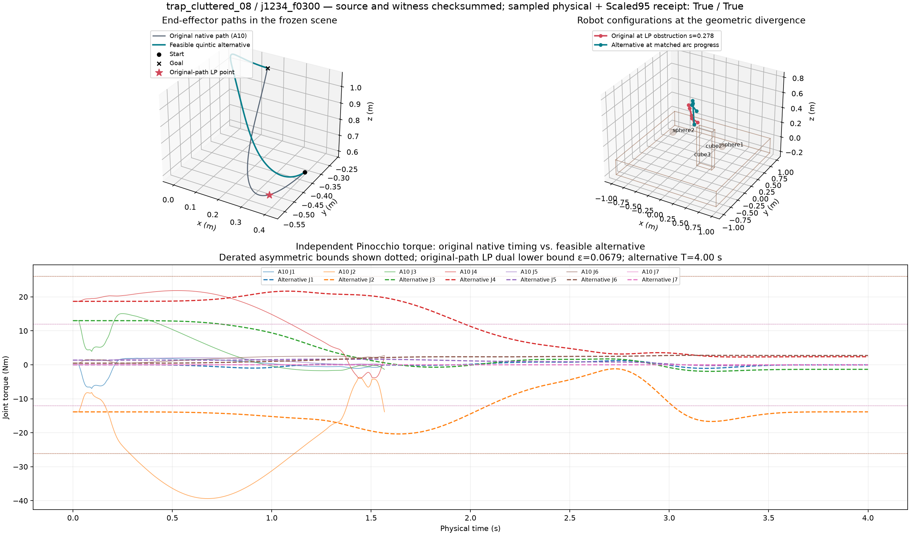
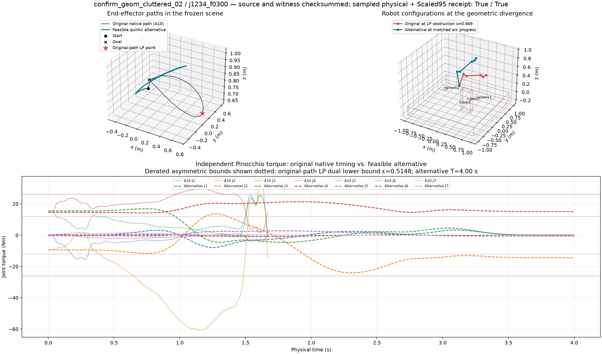
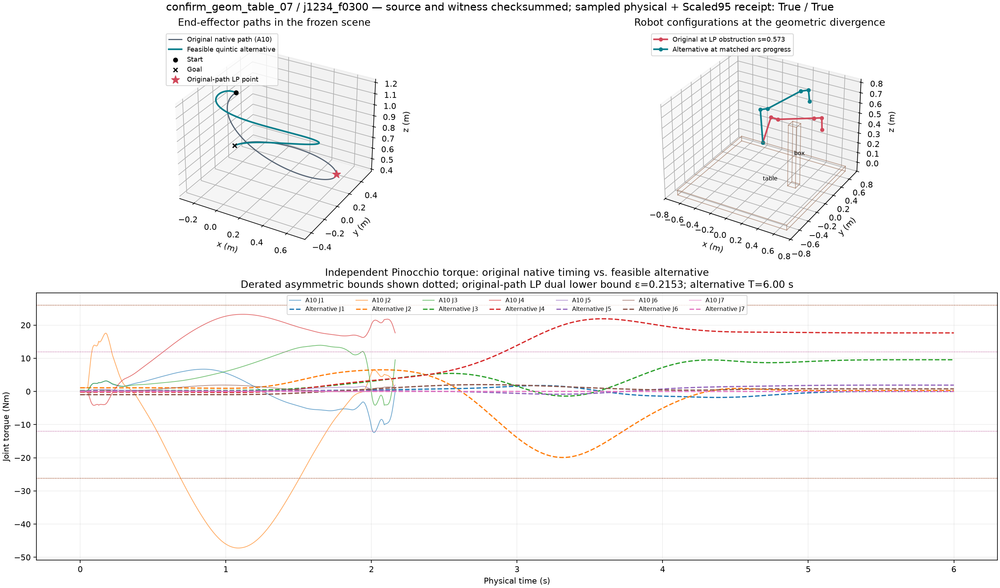

A strong geometry witness requires a positive numerically dual-validated original fixed-path torque LP AND a different independently sampled/adaptive Scaled95-feasible trajectory. Native full-planner outcomes are separate: a finite-budget native failure is NOT proof of global impossibility. The model uses synthetic joint-selective actuator limits, not the manufacturer's Panda specifications. Dense/adaptive sampled validation is not continuous-time certification.
Qualified discovery cells: 5 across 1 distinct source task IDs.
5 qualified geometric distinctions; 1 complete native-budget failures with such a distinction.
| Task | Actuator scenario | LP prescreen ε | LP dual lower bound | LP active bounds / scaled condition | |qₛ| at LP point | Original world/self; alternative world/self (m) | Geometry deviation (rad) | Witness duration (s) | Native failed/missing/errors | Outcome |
|---|---|---|---|---|---|---|---|---|---|---|
| trap_free_00 | j234_f0200 | None | None | N/A; κscaled=N/A | N/A | N/A/N/A; N/A/N/A | N/A | None | N/A/N/A/N/A | ENDPOINT_REJECTED |
| trap_free_01 | j234_f0200 | None | None | N/A; κscaled=N/A | N/A | N/A/N/A; N/A/N/A | N/A | None | N/A/N/A/N/A | ENDPOINT_REJECTED |
| trap_free_02 | j234_f0200 | None | None | N/A; κscaled=N/A | N/A | N/A/N/A; N/A/N/A | N/A | None | N/A/N/A/N/A | ENDPOINT_REJECTED |
| trap_free_03 | j234_f0200 | None | None | N/A; κscaled=N/A | N/A | N/A/N/A; N/A/N/A | N/A | None | N/A/N/A/N/A | ENDPOINT_REJECTED |
| trap_free_04 | j234_f0200 | None | None | N/A; κscaled=N/A | N/A | N/A/N/A; N/A/N/A | N/A | None | N/A/N/A/N/A | ENDPOINT_REJECTED |
| trap_free_05 | j234_f0200 | None | None | N/A; κscaled=N/A | N/A | N/A/N/A; N/A/N/A | N/A | None | N/A/N/A/N/A | ENDPOINT_REJECTED |
| trap_free_06 | j234_f0200 | None | None | N/A; κscaled=N/A | N/A | N/A/N/A; N/A/N/A | N/A | None | N/A/N/A/N/A | ENDPOINT_REJECTED |
| trap_free_07 | j234_f0200 | None | None | N/A; κscaled=N/A | N/A | N/A/N/A; N/A/N/A | N/A | None | N/A/N/A/N/A | ENDPOINT_REJECTED |
| trap_free_08 | j234_f0200 | None | None | N/A; κscaled=N/A | N/A | N/A/N/A; N/A/N/A | N/A | None | N/A/N/A/N/A | ENDPOINT_REJECTED |
| trap_free_09 | j234_f0200 | None | None | N/A; κscaled=N/A | N/A | N/A/N/A; N/A/N/A | N/A | None | N/A/N/A/N/A | ENDPOINT_REJECTED |
| trap_table_00 | j234_f0200 | None | None | N/A; κscaled=N/A | N/A | N/A/N/A; N/A/N/A | N/A | None | N/A/N/A/N/A | ENDPOINT_REJECTED |
| trap_table_01 | j234_f0200 | None | None | N/A; κscaled=N/A | N/A | N/A/N/A; N/A/N/A | N/A | None | N/A/N/A/N/A | ENDPOINT_REJECTED |
| trap_table_02 | j234_f0200 | None | None | N/A; κscaled=N/A | N/A | N/A/N/A; N/A/N/A | N/A | None | N/A/N/A/N/A | ENDPOINT_REJECTED |
| trap_table_03 | j234_f0200 | None | None | N/A; κscaled=N/A | N/A | N/A/N/A; N/A/N/A | N/A | None | N/A/N/A/N/A | ENDPOINT_REJECTED |
| trap_table_04 | j234_f0200 | None | None | N/A; κscaled=N/A | N/A | N/A/N/A; N/A/N/A | N/A | None | N/A/N/A/N/A | ENDPOINT_REJECTED |
| trap_table_05 | j234_f0200 | None | None | N/A; κscaled=N/A | N/A | N/A/N/A; N/A/N/A | N/A | None | N/A/N/A/N/A | ENDPOINT_REJECTED |
| trap_table_06 | j234_f0200 | None | None | N/A; κscaled=N/A | N/A | N/A/N/A; N/A/N/A | N/A | None | N/A/N/A/N/A | ENDPOINT_REJECTED |
| trap_table_07 | j234_f0200 | None | None | N/A; κscaled=N/A | N/A | N/A/N/A; N/A/N/A | N/A | None | N/A/N/A/N/A | ENDPOINT_REJECTED |
| trap_table_08 | j234_f0200 | None | None | N/A; κscaled=N/A | N/A | N/A/N/A; N/A/N/A | N/A | None | N/A/N/A/N/A | ENDPOINT_REJECTED |
| trap_cluttered_00 | j234_f0200 | None | None | N/A; κscaled=N/A | N/A | N/A/N/A; N/A/N/A | N/A | None | N/A/N/A/N/A | ENDPOINT_REJECTED |
| trap_cluttered_02 | j234_f0200 | None | None | N/A; κscaled=N/A | N/A | N/A/N/A; N/A/N/A | N/A | None | N/A/N/A/N/A | ENDPOINT_REJECTED |
| trap_cluttered_03 | j234_f0200 | None | None | N/A; κscaled=N/A | N/A | N/A/N/A; N/A/N/A | N/A | None | N/A/N/A/N/A | ENDPOINT_REJECTED |
| trap_cluttered_05 | j234_f0200 | None | None | N/A; κscaled=N/A | N/A | N/A/N/A; N/A/N/A | N/A | None | N/A/N/A/N/A | ENDPOINT_REJECTED |
| trap_cluttered_06 | j234_f0200 | None | None | N/A; κscaled=N/A | N/A | N/A/N/A; N/A/N/A | N/A | None | N/A/N/A/N/A | ENDPOINT_REJECTED |
| trap_cluttered_08 | j234_f0200 | None | None | N/A; κscaled=N/A | N/A | N/A/N/A; N/A/N/A | N/A | None | N/A/N/A/N/A | ENDPOINT_REJECTED |
| trap_free_00 | j234_f0300 | None | None | N/A; κscaled=N/A | N/A | N/A/N/A; N/A/N/A | N/A | None | N/A/N/A/N/A | ENDPOINT_REJECTED |
| trap_free_01 | j234_f0300 | None | None | N/A; κscaled=N/A | N/A | N/A/N/A; N/A/N/A | N/A | None | N/A/N/A/N/A | ENDPOINT_REJECTED |
| trap_free_02 | j234_f0300 | None | None | N/A; κscaled=N/A | N/A | N/A/N/A; N/A/N/A | N/A | None | N/A/N/A/N/A | ENDPOINT_REJECTED |
| trap_free_03 | j234_f0300 | None | None | N/A; κscaled=N/A | N/A | N/A/N/A; N/A/N/A | N/A | None | N/A/N/A/N/A | ENDPOINT_REJECTED |
| trap_free_04 | j234_f0300 | None | None | N/A; κscaled=N/A | N/A | N/A/N/A; N/A/N/A | N/A | None | N/A/N/A/N/A | ENDPOINT_REJECTED |
| trap_free_05 | j234_f0300 | None | None | N/A; κscaled=N/A | N/A | N/A/N/A; N/A/N/A | N/A | None | N/A/N/A/N/A | ENDPOINT_REJECTED |
| trap_free_06 | j234_f0300 | None | None | N/A; κscaled=N/A | N/A | N/A/N/A; N/A/N/A | N/A | None | N/A/N/A/N/A | ENDPOINT_REJECTED |
| trap_free_07 | j234_f0300 | None | None | N/A; κscaled=N/A | N/A | N/A/N/A; N/A/N/A | N/A | None | N/A/N/A/N/A | ENDPOINT_REJECTED |
| trap_free_08 | j234_f0300 | None | None | N/A; κscaled=N/A | N/A | N/A/N/A; N/A/N/A | N/A | None | N/A/N/A/N/A | ENDPOINT_REJECTED |
| trap_free_09 | j234_f0300 | None | None | N/A; κscaled=N/A | N/A | N/A/N/A; N/A/N/A | N/A | None | N/A/N/A/N/A | ENDPOINT_REJECTED |
| trap_table_00 | j234_f0300 | 0.0 | None | N/A; κscaled=N/A | N/A | N/A/N/A; N/A/N/A | N/A | None | N/A/N/A/N/A | ORIGINAL_LP_NOT_INFEASIBLE |
| trap_table_01 | j234_f0300 | None | None | N/A; κscaled=N/A | N/A | N/A/N/A; N/A/N/A | N/A | None | N/A/N/A/N/A | ENDPOINT_REJECTED |
| trap_table_02 | j234_f0300 | None | None | N/A; κscaled=N/A | N/A | N/A/N/A; N/A/N/A | N/A | None | N/A/N/A/N/A | ENDPOINT_REJECTED |
| trap_table_03 | j234_f0300 | None | None | N/A; κscaled=N/A | N/A | N/A/N/A; N/A/N/A | N/A | None | N/A/N/A/N/A | ENDPOINT_REJECTED |
| trap_table_04 | j234_f0300 | None | None | N/A; κscaled=N/A | N/A | N/A/N/A; N/A/N/A | N/A | None | N/A/N/A/N/A | ENDPOINT_REJECTED |
| trap_table_05 | j234_f0300 | None | None | N/A; κscaled=N/A | N/A | N/A/N/A; N/A/N/A | N/A | None | N/A/N/A/N/A | ENDPOINT_REJECTED |
| trap_table_06 | j234_f0300 | None | None | N/A; κscaled=N/A | N/A | N/A/N/A; N/A/N/A | N/A | None | N/A/N/A/N/A | ENDPOINT_REJECTED |
| trap_table_07 | j234_f0300 | None | None | N/A; κscaled=N/A | N/A | N/A/N/A; N/A/N/A | N/A | None | N/A/N/A/N/A | ENDPOINT_REJECTED |
| trap_table_08 | j234_f0300 | None | None | N/A; κscaled=N/A | N/A | N/A/N/A; N/A/N/A | N/A | None | N/A/N/A/N/A | ENDPOINT_REJECTED |
| trap_cluttered_00 | j234_f0300 | None | None | N/A; κscaled=N/A | N/A | N/A/N/A; N/A/N/A | N/A | None | N/A/N/A/N/A | ENDPOINT_REJECTED |
| trap_cluttered_02 | j234_f0300 | None | None | N/A; κscaled=N/A | N/A | N/A/N/A; N/A/N/A | N/A | None | N/A/N/A/N/A | ENDPOINT_REJECTED |
| trap_cluttered_03 | j234_f0300 | None | None | N/A; κscaled=N/A | N/A | N/A/N/A; N/A/N/A | N/A | None | N/A/N/A/N/A | ENDPOINT_REJECTED |
| trap_cluttered_05 | j234_f0300 | None | None | N/A; κscaled=N/A | N/A | N/A/N/A; N/A/N/A | N/A | None | N/A/N/A/N/A | ENDPOINT_REJECTED |
| trap_cluttered_06 | j234_f0300 | 0.0 | None | N/A; κscaled=N/A | N/A | N/A/N/A; N/A/N/A | N/A | None | N/A/N/A/N/A | ORIGINAL_LP_NOT_INFEASIBLE |
| trap_cluttered_08 | j234_f0300 | 0.023216542157328747 | 0.06788697129549097 | J4 upper, J2 lower; κscaled=1.1147780693146347 | 5.426241898675808 | N/A/N/A; N/A/N/A | N/A | None | N/A/N/A/N/A | NO_CONSTRUCTIVE_ALTERNATIVE_DISCOVERED |
| trap_free_00 | j234_f0400 | 0.0 | None | N/A; κscaled=N/A | N/A | N/A/N/A; N/A/N/A | N/A | None | N/A/N/A/N/A | ORIGINAL_LP_NOT_INFEASIBLE |
| trap_free_01 | j234_f0400 | None | None | N/A; κscaled=N/A | N/A | N/A/N/A; N/A/N/A | N/A | None | N/A/N/A/N/A | ENDPOINT_REJECTED |
| trap_free_02 | j234_f0400 | None | None | N/A; κscaled=N/A | N/A | N/A/N/A; N/A/N/A | N/A | None | N/A/N/A/N/A | ENDPOINT_REJECTED |
| trap_free_03 | j234_f0400 | 0.0 | None | N/A; κscaled=N/A | N/A | N/A/N/A; N/A/N/A | N/A | None | N/A/N/A/N/A | ORIGINAL_LP_NOT_INFEASIBLE |
| trap_free_04 | j234_f0400 | None | None | N/A; κscaled=N/A | N/A | N/A/N/A; N/A/N/A | N/A | None | N/A/N/A/N/A | ENDPOINT_REJECTED |
| trap_free_05 | j234_f0400 | 0.0 | None | N/A; κscaled=N/A | N/A | N/A/N/A; N/A/N/A | N/A | None | N/A/N/A/N/A | ORIGINAL_LP_NOT_INFEASIBLE |
| trap_free_06 | j234_f0400 | None | None | N/A; κscaled=N/A | N/A | N/A/N/A; N/A/N/A | N/A | None | N/A/N/A/N/A | ENDPOINT_REJECTED |
| trap_free_07 | j234_f0400 | 0.0 | None | N/A; κscaled=N/A | N/A | N/A/N/A; N/A/N/A | N/A | None | N/A/N/A/N/A | ORIGINAL_LP_NOT_INFEASIBLE |
| trap_free_08 | j234_f0400 | 0.0 | None | N/A; κscaled=N/A | N/A | N/A/N/A; N/A/N/A | N/A | None | N/A/N/A/N/A | ORIGINAL_LP_NOT_INFEASIBLE |
| trap_free_09 | j234_f0400 | None | None | N/A; κscaled=N/A | N/A | N/A/N/A; N/A/N/A | N/A | None | N/A/N/A/N/A | ENDPOINT_REJECTED |
| trap_table_00 | j234_f0400 | 0.0 | None | N/A; κscaled=N/A | N/A | N/A/N/A; N/A/N/A | N/A | None | N/A/N/A/N/A | ORIGINAL_LP_NOT_INFEASIBLE |
| trap_table_01 | j234_f0400 | 0.0 | None | N/A; κscaled=N/A | N/A | N/A/N/A; N/A/N/A | N/A | None | N/A/N/A/N/A | ORIGINAL_LP_NOT_INFEASIBLE |
| trap_table_02 | j234_f0400 | 0.0 | None | N/A; κscaled=N/A | N/A | N/A/N/A; N/A/N/A | N/A | None | N/A/N/A/N/A | ORIGINAL_LP_NOT_INFEASIBLE |
| trap_table_03 | j234_f0400 | 0.0 | None | N/A; κscaled=N/A | N/A | N/A/N/A; N/A/N/A | N/A | None | N/A/N/A/N/A | ORIGINAL_LP_NOT_INFEASIBLE |
| trap_table_04 | j234_f0400 | None | None | N/A; κscaled=N/A | N/A | N/A/N/A; N/A/N/A | N/A | None | N/A/N/A/N/A | ENDPOINT_REJECTED |
| trap_table_05 | j234_f0400 | None | None | N/A; κscaled=N/A | N/A | N/A/N/A; N/A/N/A | N/A | None | N/A/N/A/N/A | ENDPOINT_REJECTED |
| trap_table_06 | j234_f0400 | 0.0 | None | N/A; κscaled=N/A | N/A | N/A/N/A; N/A/N/A | N/A | None | N/A/N/A/N/A | ORIGINAL_LP_NOT_INFEASIBLE |
| trap_table_07 | j234_f0400 | None | None | N/A; κscaled=N/A | N/A | N/A/N/A; N/A/N/A | N/A | None | N/A/N/A/N/A | ENDPOINT_REJECTED |
| trap_table_08 | j234_f0400 | None | None | N/A; κscaled=N/A | N/A | N/A/N/A; N/A/N/A | N/A | None | N/A/N/A/N/A | ENDPOINT_REJECTED |
| trap_cluttered_00 | j234_f0400 | None | None | N/A; κscaled=N/A | N/A | N/A/N/A; N/A/N/A | N/A | None | N/A/N/A/N/A | ENDPOINT_REJECTED |
| trap_cluttered_02 | j234_f0400 | 0.0 | None | N/A; κscaled=N/A | N/A | N/A/N/A; N/A/N/A | N/A | None | N/A/N/A/N/A | ORIGINAL_LP_NOT_INFEASIBLE |
| trap_cluttered_03 | j234_f0400 | None | None | N/A; κscaled=N/A | N/A | N/A/N/A; N/A/N/A | N/A | None | N/A/N/A/N/A | ENDPOINT_REJECTED |
| trap_cluttered_05 | j234_f0400 | None | None | N/A; κscaled=N/A | N/A | N/A/N/A; N/A/N/A | N/A | None | N/A/N/A/N/A | ENDPOINT_REJECTED |
| trap_cluttered_06 | j234_f0400 | 0.0 | None | N/A; κscaled=N/A | N/A | N/A/N/A; N/A/N/A | N/A | None | N/A/N/A/N/A | ORIGINAL_LP_NOT_INFEASIBLE |
| trap_cluttered_08 | j234_f0400 | 0.0 | None | N/A; κscaled=N/A | N/A | N/A/N/A; N/A/N/A | N/A | None | N/A/N/A/N/A | ORIGINAL_LP_NOT_INFEASIBLE |
| trap_free_00 | j234_f0500 | 0.0 | None | N/A; κscaled=N/A | N/A | N/A/N/A; N/A/N/A | N/A | None | N/A/N/A/N/A | ORIGINAL_LP_NOT_INFEASIBLE |
| trap_free_01 | j234_f0500 | 0.0 | None | N/A; κscaled=N/A | N/A | N/A/N/A; N/A/N/A | N/A | None | N/A/N/A/N/A | ORIGINAL_LP_NOT_INFEASIBLE |
| trap_free_02 | j234_f0500 | 0.0 | None | N/A; κscaled=N/A | N/A | N/A/N/A; N/A/N/A | N/A | None | N/A/N/A/N/A | ORIGINAL_LP_NOT_INFEASIBLE |
| trap_free_03 | j234_f0500 | 0.0 | None | N/A; κscaled=N/A | N/A | N/A/N/A; N/A/N/A | N/A | None | N/A/N/A/N/A | ORIGINAL_LP_NOT_INFEASIBLE |
| trap_free_04 | j234_f0500 | 0.0 | None | N/A; κscaled=N/A | N/A | N/A/N/A; N/A/N/A | N/A | None | N/A/N/A/N/A | ORIGINAL_LP_NOT_INFEASIBLE |
| trap_free_05 | j234_f0500 | 0.0 | None | N/A; κscaled=N/A | N/A | N/A/N/A; N/A/N/A | N/A | None | N/A/N/A/N/A | ORIGINAL_LP_NOT_INFEASIBLE |
| trap_free_06 | j234_f0500 | 0.0 | None | N/A; κscaled=N/A | N/A | N/A/N/A; N/A/N/A | N/A | None | N/A/N/A/N/A | ORIGINAL_LP_NOT_INFEASIBLE |
| trap_free_07 | j234_f0500 | 0.0 | None | N/A; κscaled=N/A | N/A | N/A/N/A; N/A/N/A | N/A | None | N/A/N/A/N/A | ORIGINAL_LP_NOT_INFEASIBLE |
| trap_free_08 | j234_f0500 | 0.0 | None | N/A; κscaled=N/A | N/A | N/A/N/A; N/A/N/A | N/A | None | N/A/N/A/N/A | ORIGINAL_LP_NOT_INFEASIBLE |
| trap_free_09 | j234_f0500 | 0.0 | None | N/A; κscaled=N/A | N/A | N/A/N/A; N/A/N/A | N/A | None | N/A/N/A/N/A | ORIGINAL_LP_NOT_INFEASIBLE |
| trap_table_00 | j234_f0500 | 0.0 | None | N/A; κscaled=N/A | N/A | N/A/N/A; N/A/N/A | N/A | None | N/A/N/A/N/A | ORIGINAL_LP_NOT_INFEASIBLE |
| trap_table_01 | j234_f0500 | 0.0 | None | N/A; κscaled=N/A | N/A | N/A/N/A; N/A/N/A | N/A | None | N/A/N/A/N/A | ORIGINAL_LP_NOT_INFEASIBLE |
| trap_table_02 | j234_f0500 | 0.0 | None | N/A; κscaled=N/A | N/A | N/A/N/A; N/A/N/A | N/A | None | N/A/N/A/N/A | ORIGINAL_LP_NOT_INFEASIBLE |
| trap_table_03 | j234_f0500 | 0.0 | None | N/A; κscaled=N/A | N/A | N/A/N/A; N/A/N/A | N/A | None | N/A/N/A/N/A | ORIGINAL_LP_NOT_INFEASIBLE |
| trap_table_04 | j234_f0500 | 0.0 | None | N/A; κscaled=N/A | N/A | N/A/N/A; N/A/N/A | N/A | None | N/A/N/A/N/A | ORIGINAL_LP_NOT_INFEASIBLE |
| trap_table_05 | j234_f0500 | 0.0 | None | N/A; κscaled=N/A | N/A | N/A/N/A; N/A/N/A | N/A | None | N/A/N/A/N/A | ORIGINAL_LP_NOT_INFEASIBLE |
| trap_table_06 | j234_f0500 | 0.0 | None | N/A; κscaled=N/A | N/A | N/A/N/A; N/A/N/A | N/A | None | N/A/N/A/N/A | ORIGINAL_LP_NOT_INFEASIBLE |
| trap_table_07 | j234_f0500 | 0.0 | None | N/A; κscaled=N/A | N/A | N/A/N/A; N/A/N/A | N/A | None | N/A/N/A/N/A | ORIGINAL_LP_NOT_INFEASIBLE |
| trap_table_08 | j234_f0500 | 0.0 | None | N/A; κscaled=N/A | N/A | N/A/N/A; N/A/N/A | N/A | None | N/A/N/A/N/A | ORIGINAL_LP_NOT_INFEASIBLE |
| trap_cluttered_00 | j234_f0500 | 0.0 | None | N/A; κscaled=N/A | N/A | N/A/N/A; N/A/N/A | N/A | None | N/A/N/A/N/A | ORIGINAL_LP_NOT_INFEASIBLE |
| trap_cluttered_02 | j234_f0500 | 0.0 | None | N/A; κscaled=N/A | N/A | N/A/N/A; N/A/N/A | N/A | None | N/A/N/A/N/A | ORIGINAL_LP_NOT_INFEASIBLE |
| trap_cluttered_03 | j234_f0500 | 0.0 | None | N/A; κscaled=N/A | N/A | N/A/N/A; N/A/N/A | N/A | None | N/A/N/A/N/A | ORIGINAL_LP_NOT_INFEASIBLE |
| trap_cluttered_05 | j234_f0500 | 0.0 | None | N/A; κscaled=N/A | N/A | N/A/N/A; N/A/N/A | N/A | None | N/A/N/A/N/A | ORIGINAL_LP_NOT_INFEASIBLE |
| trap_cluttered_06 | j234_f0500 | 0.0 | None | N/A; κscaled=N/A | N/A | N/A/N/A; N/A/N/A | N/A | None | N/A/N/A/N/A | ORIGINAL_LP_NOT_INFEASIBLE |
| trap_cluttered_08 | j234_f0500 | 0.0 | None | N/A; κscaled=N/A | N/A | N/A/N/A; N/A/N/A | N/A | None | N/A/N/A/N/A | ORIGINAL_LP_NOT_INFEASIBLE |
| trap_free_00 | j234_f0650 | 0.0 | None | N/A; κscaled=N/A | N/A | N/A/N/A; N/A/N/A | N/A | None | N/A/N/A/N/A | ORIGINAL_LP_NOT_INFEASIBLE |
| trap_free_01 | j234_f0650 | 0.0 | None | N/A; κscaled=N/A | N/A | N/A/N/A; N/A/N/A | N/A | None | N/A/N/A/N/A | ORIGINAL_LP_NOT_INFEASIBLE |
| trap_free_02 | j234_f0650 | 0.0 | None | N/A; κscaled=N/A | N/A | N/A/N/A; N/A/N/A | N/A | None | N/A/N/A/N/A | ORIGINAL_LP_NOT_INFEASIBLE |
| trap_free_03 | j234_f0650 | 0.0 | None | N/A; κscaled=N/A | N/A | N/A/N/A; N/A/N/A | N/A | None | N/A/N/A/N/A | ORIGINAL_LP_NOT_INFEASIBLE |
| trap_free_04 | j234_f0650 | 0.0 | None | N/A; κscaled=N/A | N/A | N/A/N/A; N/A/N/A | N/A | None | N/A/N/A/N/A | ORIGINAL_LP_NOT_INFEASIBLE |
| trap_free_05 | j234_f0650 | 0.0 | None | N/A; κscaled=N/A | N/A | N/A/N/A; N/A/N/A | N/A | None | N/A/N/A/N/A | ORIGINAL_LP_NOT_INFEASIBLE |
| trap_free_06 | j234_f0650 | 0.0 | None | N/A; κscaled=N/A | N/A | N/A/N/A; N/A/N/A | N/A | None | N/A/N/A/N/A | ORIGINAL_LP_NOT_INFEASIBLE |
| trap_free_07 | j234_f0650 | 0.0 | None | N/A; κscaled=N/A | N/A | N/A/N/A; N/A/N/A | N/A | None | N/A/N/A/N/A | ORIGINAL_LP_NOT_INFEASIBLE |
| trap_free_08 | j234_f0650 | 0.0 | None | N/A; κscaled=N/A | N/A | N/A/N/A; N/A/N/A | N/A | None | N/A/N/A/N/A | ORIGINAL_LP_NOT_INFEASIBLE |
| trap_free_09 | j234_f0650 | 0.0 | None | N/A; κscaled=N/A | N/A | N/A/N/A; N/A/N/A | N/A | None | N/A/N/A/N/A | ORIGINAL_LP_NOT_INFEASIBLE |
| trap_table_00 | j234_f0650 | 0.0 | None | N/A; κscaled=N/A | N/A | N/A/N/A; N/A/N/A | N/A | None | N/A/N/A/N/A | ORIGINAL_LP_NOT_INFEASIBLE |
| trap_table_01 | j234_f0650 | 0.0 | None | N/A; κscaled=N/A | N/A | N/A/N/A; N/A/N/A | N/A | None | N/A/N/A/N/A | ORIGINAL_LP_NOT_INFEASIBLE |
| trap_table_02 | j234_f0650 | 0.0 | None | N/A; κscaled=N/A | N/A | N/A/N/A; N/A/N/A | N/A | None | N/A/N/A/N/A | ORIGINAL_LP_NOT_INFEASIBLE |
| trap_table_03 | j234_f0650 | 0.0 | None | N/A; κscaled=N/A | N/A | N/A/N/A; N/A/N/A | N/A | None | N/A/N/A/N/A | ORIGINAL_LP_NOT_INFEASIBLE |
| trap_table_04 | j234_f0650 | 0.0 | None | N/A; κscaled=N/A | N/A | N/A/N/A; N/A/N/A | N/A | None | N/A/N/A/N/A | ORIGINAL_LP_NOT_INFEASIBLE |
| trap_table_05 | j234_f0650 | 0.0 | None | N/A; κscaled=N/A | N/A | N/A/N/A; N/A/N/A | N/A | None | N/A/N/A/N/A | ORIGINAL_LP_NOT_INFEASIBLE |
| trap_table_06 | j234_f0650 | 0.0 | None | N/A; κscaled=N/A | N/A | N/A/N/A; N/A/N/A | N/A | None | N/A/N/A/N/A | ORIGINAL_LP_NOT_INFEASIBLE |
| trap_table_07 | j234_f0650 | 0.0 | None | N/A; κscaled=N/A | N/A | N/A/N/A; N/A/N/A | N/A | None | N/A/N/A/N/A | ORIGINAL_LP_NOT_INFEASIBLE |
| trap_table_08 | j234_f0650 | 0.0 | None | N/A; κscaled=N/A | N/A | N/A/N/A; N/A/N/A | N/A | None | N/A/N/A/N/A | ORIGINAL_LP_NOT_INFEASIBLE |
| trap_cluttered_00 | j234_f0650 | 0.0 | None | N/A; κscaled=N/A | N/A | N/A/N/A; N/A/N/A | N/A | None | N/A/N/A/N/A | ORIGINAL_LP_NOT_INFEASIBLE |
| trap_cluttered_02 | j234_f0650 | 0.0 | None | N/A; κscaled=N/A | N/A | N/A/N/A; N/A/N/A | N/A | None | N/A/N/A/N/A | ORIGINAL_LP_NOT_INFEASIBLE |
| trap_cluttered_03 | j234_f0650 | 0.0 | None | N/A; κscaled=N/A | N/A | N/A/N/A; N/A/N/A | N/A | None | N/A/N/A/N/A | ORIGINAL_LP_NOT_INFEASIBLE |
| trap_cluttered_05 | j234_f0650 | 0.0 | None | N/A; κscaled=N/A | N/A | N/A/N/A; N/A/N/A | N/A | None | N/A/N/A/N/A | ORIGINAL_LP_NOT_INFEASIBLE |
| trap_cluttered_06 | j234_f0650 | 0.0 | None | N/A; κscaled=N/A | N/A | N/A/N/A; N/A/N/A | N/A | None | N/A/N/A/N/A | ORIGINAL_LP_NOT_INFEASIBLE |
| trap_cluttered_08 | j234_f0650 | 0.0 | None | N/A; κscaled=N/A | N/A | N/A/N/A; N/A/N/A | N/A | None | N/A/N/A/N/A | ORIGINAL_LP_NOT_INFEASIBLE |
| trap_free_00 | j234_f0800 | 0.0 | None | N/A; κscaled=N/A | N/A | N/A/N/A; N/A/N/A | N/A | None | N/A/N/A/N/A | ORIGINAL_LP_NOT_INFEASIBLE |
| trap_free_01 | j234_f0800 | 0.0 | None | N/A; κscaled=N/A | N/A | N/A/N/A; N/A/N/A | N/A | None | N/A/N/A/N/A | ORIGINAL_LP_NOT_INFEASIBLE |
| trap_free_02 | j234_f0800 | 0.0 | None | N/A; κscaled=N/A | N/A | N/A/N/A; N/A/N/A | N/A | None | N/A/N/A/N/A | ORIGINAL_LP_NOT_INFEASIBLE |
| trap_free_03 | j234_f0800 | 0.0 | None | N/A; κscaled=N/A | N/A | N/A/N/A; N/A/N/A | N/A | None | N/A/N/A/N/A | ORIGINAL_LP_NOT_INFEASIBLE |
| trap_free_04 | j234_f0800 | 0.0 | None | N/A; κscaled=N/A | N/A | N/A/N/A; N/A/N/A | N/A | None | N/A/N/A/N/A | ORIGINAL_LP_NOT_INFEASIBLE |
| trap_free_05 | j234_f0800 | 0.0 | None | N/A; κscaled=N/A | N/A | N/A/N/A; N/A/N/A | N/A | None | N/A/N/A/N/A | ORIGINAL_LP_NOT_INFEASIBLE |
| trap_free_06 | j234_f0800 | 0.0 | None | N/A; κscaled=N/A | N/A | N/A/N/A; N/A/N/A | N/A | None | N/A/N/A/N/A | ORIGINAL_LP_NOT_INFEASIBLE |
| trap_free_07 | j234_f0800 | 0.0 | None | N/A; κscaled=N/A | N/A | N/A/N/A; N/A/N/A | N/A | None | N/A/N/A/N/A | ORIGINAL_LP_NOT_INFEASIBLE |
| trap_free_08 | j234_f0800 | 0.0 | None | N/A; κscaled=N/A | N/A | N/A/N/A; N/A/N/A | N/A | None | N/A/N/A/N/A | ORIGINAL_LP_NOT_INFEASIBLE |
| trap_free_09 | j234_f0800 | 0.0 | None | N/A; κscaled=N/A | N/A | N/A/N/A; N/A/N/A | N/A | None | N/A/N/A/N/A | ORIGINAL_LP_NOT_INFEASIBLE |
| trap_table_00 | j234_f0800 | 0.0 | None | N/A; κscaled=N/A | N/A | N/A/N/A; N/A/N/A | N/A | None | N/A/N/A/N/A | ORIGINAL_LP_NOT_INFEASIBLE |
| trap_table_01 | j234_f0800 | 0.0 | None | N/A; κscaled=N/A | N/A | N/A/N/A; N/A/N/A | N/A | None | N/A/N/A/N/A | ORIGINAL_LP_NOT_INFEASIBLE |
| trap_table_02 | j234_f0800 | 0.0 | None | N/A; κscaled=N/A | N/A | N/A/N/A; N/A/N/A | N/A | None | N/A/N/A/N/A | ORIGINAL_LP_NOT_INFEASIBLE |
| trap_table_03 | j234_f0800 | 0.0 | None | N/A; κscaled=N/A | N/A | N/A/N/A; N/A/N/A | N/A | None | N/A/N/A/N/A | ORIGINAL_LP_NOT_INFEASIBLE |
| trap_table_04 | j234_f0800 | 0.0 | None | N/A; κscaled=N/A | N/A | N/A/N/A; N/A/N/A | N/A | None | N/A/N/A/N/A | ORIGINAL_LP_NOT_INFEASIBLE |
| trap_table_05 | j234_f0800 | 0.0 | None | N/A; κscaled=N/A | N/A | N/A/N/A; N/A/N/A | N/A | None | N/A/N/A/N/A | ORIGINAL_LP_NOT_INFEASIBLE |
| trap_table_06 | j234_f0800 | 0.0 | None | N/A; κscaled=N/A | N/A | N/A/N/A; N/A/N/A | N/A | None | N/A/N/A/N/A | ORIGINAL_LP_NOT_INFEASIBLE |
| trap_table_07 | j234_f0800 | 0.0 | None | N/A; κscaled=N/A | N/A | N/A/N/A; N/A/N/A | N/A | None | N/A/N/A/N/A | ORIGINAL_LP_NOT_INFEASIBLE |
| trap_table_08 | j234_f0800 | 0.0 | None | N/A; κscaled=N/A | N/A | N/A/N/A; N/A/N/A | N/A | None | N/A/N/A/N/A | ORIGINAL_LP_NOT_INFEASIBLE |
| trap_cluttered_00 | j234_f0800 | 0.0 | None | N/A; κscaled=N/A | N/A | N/A/N/A; N/A/N/A | N/A | None | N/A/N/A/N/A | ORIGINAL_LP_NOT_INFEASIBLE |
| trap_cluttered_02 | j234_f0800 | 0.0 | None | N/A; κscaled=N/A | N/A | N/A/N/A; N/A/N/A | N/A | None | N/A/N/A/N/A | ORIGINAL_LP_NOT_INFEASIBLE |
| trap_cluttered_03 | j234_f0800 | 0.0 | None | N/A; κscaled=N/A | N/A | N/A/N/A; N/A/N/A | N/A | None | N/A/N/A/N/A | ORIGINAL_LP_NOT_INFEASIBLE |
| trap_cluttered_05 | j234_f0800 | 0.0 | None | N/A; κscaled=N/A | N/A | N/A/N/A; N/A/N/A | N/A | None | N/A/N/A/N/A | ORIGINAL_LP_NOT_INFEASIBLE |
| trap_cluttered_06 | j234_f0800 | 0.0 | None | N/A; κscaled=N/A | N/A | N/A/N/A; N/A/N/A | N/A | None | N/A/N/A/N/A | ORIGINAL_LP_NOT_INFEASIBLE |
| trap_cluttered_08 | j234_f0800 | 0.0 | None | N/A; κscaled=N/A | N/A | N/A/N/A; N/A/N/A | N/A | None | N/A/N/A/N/A | ORIGINAL_LP_NOT_INFEASIBLE |
| trap_free_00 | j124_f0200 | None | None | N/A; κscaled=N/A | N/A | N/A/N/A; N/A/N/A | N/A | None | N/A/N/A/N/A | ENDPOINT_REJECTED |
| trap_free_01 | j124_f0200 | None | None | N/A; κscaled=N/A | N/A | N/A/N/A; N/A/N/A | N/A | None | N/A/N/A/N/A | ENDPOINT_REJECTED |
| trap_free_02 | j124_f0200 | None | None | N/A; κscaled=N/A | N/A | N/A/N/A; N/A/N/A | N/A | None | N/A/N/A/N/A | ENDPOINT_REJECTED |
| trap_free_03 | j124_f0200 | None | None | N/A; κscaled=N/A | N/A | N/A/N/A; N/A/N/A | N/A | None | N/A/N/A/N/A | ENDPOINT_REJECTED |
| trap_free_04 | j124_f0200 | None | None | N/A; κscaled=N/A | N/A | N/A/N/A; N/A/N/A | N/A | None | N/A/N/A/N/A | ENDPOINT_REJECTED |
| trap_free_05 | j124_f0200 | None | None | N/A; κscaled=N/A | N/A | N/A/N/A; N/A/N/A | N/A | None | N/A/N/A/N/A | ENDPOINT_REJECTED |
| trap_free_06 | j124_f0200 | None | None | N/A; κscaled=N/A | N/A | N/A/N/A; N/A/N/A | N/A | None | N/A/N/A/N/A | ENDPOINT_REJECTED |
| trap_free_07 | j124_f0200 | None | None | N/A; κscaled=N/A | N/A | N/A/N/A; N/A/N/A | N/A | None | N/A/N/A/N/A | ENDPOINT_REJECTED |
| trap_free_08 | j124_f0200 | None | None | N/A; κscaled=N/A | N/A | N/A/N/A; N/A/N/A | N/A | None | N/A/N/A/N/A | ENDPOINT_REJECTED |
| trap_free_09 | j124_f0200 | None | None | N/A; κscaled=N/A | N/A | N/A/N/A; N/A/N/A | N/A | None | N/A/N/A/N/A | ENDPOINT_REJECTED |
| trap_table_00 | j124_f0200 | None | None | N/A; κscaled=N/A | N/A | N/A/N/A; N/A/N/A | N/A | None | N/A/N/A/N/A | ENDPOINT_REJECTED |
| trap_table_01 | j124_f0200 | None | None | N/A; κscaled=N/A | N/A | N/A/N/A; N/A/N/A | N/A | None | N/A/N/A/N/A | ENDPOINT_REJECTED |
| trap_table_02 | j124_f0200 | None | None | N/A; κscaled=N/A | N/A | N/A/N/A; N/A/N/A | N/A | None | N/A/N/A/N/A | ENDPOINT_REJECTED |
| trap_table_03 | j124_f0200 | None | None | N/A; κscaled=N/A | N/A | N/A/N/A; N/A/N/A | N/A | None | N/A/N/A/N/A | ENDPOINT_REJECTED |
| trap_table_04 | j124_f0200 | None | None | N/A; κscaled=N/A | N/A | N/A/N/A; N/A/N/A | N/A | None | N/A/N/A/N/A | ENDPOINT_REJECTED |
| trap_table_05 | j124_f0200 | None | None | N/A; κscaled=N/A | N/A | N/A/N/A; N/A/N/A | N/A | None | N/A/N/A/N/A | ENDPOINT_REJECTED |
| trap_table_06 | j124_f0200 | None | None | N/A; κscaled=N/A | N/A | N/A/N/A; N/A/N/A | N/A | None | N/A/N/A/N/A | ENDPOINT_REJECTED |
| trap_table_07 | j124_f0200 | None | None | N/A; κscaled=N/A | N/A | N/A/N/A; N/A/N/A | N/A | None | N/A/N/A/N/A | ENDPOINT_REJECTED |
| trap_table_08 | j124_f0200 | None | None | N/A; κscaled=N/A | N/A | N/A/N/A; N/A/N/A | N/A | None | N/A/N/A/N/A | ENDPOINT_REJECTED |
| trap_cluttered_00 | j124_f0200 | None | None | N/A; κscaled=N/A | N/A | N/A/N/A; N/A/N/A | N/A | None | N/A/N/A/N/A | ENDPOINT_REJECTED |
| trap_cluttered_02 | j124_f0200 | None | None | N/A; κscaled=N/A | N/A | N/A/N/A; N/A/N/A | N/A | None | N/A/N/A/N/A | ENDPOINT_REJECTED |
| trap_cluttered_03 | j124_f0200 | None | None | N/A; κscaled=N/A | N/A | N/A/N/A; N/A/N/A | N/A | None | N/A/N/A/N/A | ENDPOINT_REJECTED |
| trap_cluttered_05 | j124_f0200 | None | None | N/A; κscaled=N/A | N/A | N/A/N/A; N/A/N/A | N/A | None | N/A/N/A/N/A | ENDPOINT_REJECTED |
| trap_cluttered_06 | j124_f0200 | None | None | N/A; κscaled=N/A | N/A | N/A/N/A; N/A/N/A | N/A | None | N/A/N/A/N/A | ENDPOINT_REJECTED |
| trap_cluttered_08 | j124_f0200 | None | None | N/A; κscaled=N/A | N/A | N/A/N/A; N/A/N/A | N/A | None | N/A/N/A/N/A | ENDPOINT_REJECTED |
| trap_free_00 | j124_f0300 | None | None | N/A; κscaled=N/A | N/A | N/A/N/A; N/A/N/A | N/A | None | N/A/N/A/N/A | ENDPOINT_REJECTED |
| trap_free_01 | j124_f0300 | None | None | N/A; κscaled=N/A | N/A | N/A/N/A; N/A/N/A | N/A | None | N/A/N/A/N/A | ENDPOINT_REJECTED |
| trap_free_02 | j124_f0300 | None | None | N/A; κscaled=N/A | N/A | N/A/N/A; N/A/N/A | N/A | None | N/A/N/A/N/A | ENDPOINT_REJECTED |
| trap_free_03 | j124_f0300 | None | None | N/A; κscaled=N/A | N/A | N/A/N/A; N/A/N/A | N/A | None | N/A/N/A/N/A | ENDPOINT_REJECTED |
| trap_free_04 | j124_f0300 | None | None | N/A; κscaled=N/A | N/A | N/A/N/A; N/A/N/A | N/A | None | N/A/N/A/N/A | ENDPOINT_REJECTED |
| trap_free_05 | j124_f0300 | None | None | N/A; κscaled=N/A | N/A | N/A/N/A; N/A/N/A | N/A | None | N/A/N/A/N/A | ENDPOINT_REJECTED |
| trap_free_06 | j124_f0300 | None | None | N/A; κscaled=N/A | N/A | N/A/N/A; N/A/N/A | N/A | None | N/A/N/A/N/A | ENDPOINT_REJECTED |
| trap_free_07 | j124_f0300 | None | None | N/A; κscaled=N/A | N/A | N/A/N/A; N/A/N/A | N/A | None | N/A/N/A/N/A | ENDPOINT_REJECTED |
| trap_free_08 | j124_f0300 | None | None | N/A; κscaled=N/A | N/A | N/A/N/A; N/A/N/A | N/A | None | N/A/N/A/N/A | ENDPOINT_REJECTED |
| trap_free_09 | j124_f0300 | None | None | N/A; κscaled=N/A | N/A | N/A/N/A; N/A/N/A | N/A | None | N/A/N/A/N/A | ENDPOINT_REJECTED |
| trap_table_00 | j124_f0300 | 0.0 | None | N/A; κscaled=N/A | N/A | N/A/N/A; N/A/N/A | N/A | None | N/A/N/A/N/A | ORIGINAL_LP_NOT_INFEASIBLE |
| trap_table_01 | j124_f0300 | None | None | N/A; κscaled=N/A | N/A | N/A/N/A; N/A/N/A | N/A | None | N/A/N/A/N/A | ENDPOINT_REJECTED |
| trap_table_02 | j124_f0300 | 0.0 | None | N/A; κscaled=N/A | N/A | N/A/N/A; N/A/N/A | N/A | None | N/A/N/A/N/A | ORIGINAL_LP_NOT_INFEASIBLE |
| trap_table_03 | j124_f0300 | None | None | N/A; κscaled=N/A | N/A | N/A/N/A; N/A/N/A | N/A | None | N/A/N/A/N/A | ENDPOINT_REJECTED |
| trap_table_04 | j124_f0300 | None | None | N/A; κscaled=N/A | N/A | N/A/N/A; N/A/N/A | N/A | None | N/A/N/A/N/A | ENDPOINT_REJECTED |
| trap_table_05 | j124_f0300 | None | None | N/A; κscaled=N/A | N/A | N/A/N/A; N/A/N/A | N/A | None | N/A/N/A/N/A | ENDPOINT_REJECTED |
| trap_table_06 | j124_f0300 | None | None | N/A; κscaled=N/A | N/A | N/A/N/A; N/A/N/A | N/A | None | N/A/N/A/N/A | ENDPOINT_REJECTED |
| trap_table_07 | j124_f0300 | None | None | N/A; κscaled=N/A | N/A | N/A/N/A; N/A/N/A | N/A | None | N/A/N/A/N/A | ENDPOINT_REJECTED |
| trap_table_08 | j124_f0300 | None | None | N/A; κscaled=N/A | N/A | N/A/N/A; N/A/N/A | N/A | None | N/A/N/A/N/A | ENDPOINT_REJECTED |
| trap_cluttered_00 | j124_f0300 | None | None | N/A; κscaled=N/A | N/A | N/A/N/A; N/A/N/A | N/A | None | N/A/N/A/N/A | ENDPOINT_REJECTED |
| trap_cluttered_02 | j124_f0300 | None | None | N/A; κscaled=N/A | N/A | N/A/N/A; N/A/N/A | N/A | None | N/A/N/A/N/A | ENDPOINT_REJECTED |
| trap_cluttered_03 | j124_f0300 | None | None | N/A; κscaled=N/A | N/A | N/A/N/A; N/A/N/A | N/A | None | N/A/N/A/N/A | ENDPOINT_REJECTED |
| trap_cluttered_05 | j124_f0300 | None | None | N/A; κscaled=N/A | N/A | N/A/N/A; N/A/N/A | N/A | None | N/A/N/A/N/A | ENDPOINT_REJECTED |
| trap_cluttered_06 | j124_f0300 | 0.0 | None | N/A; κscaled=N/A | N/A | N/A/N/A; N/A/N/A | N/A | None | N/A/N/A/N/A | ORIGINAL_LP_NOT_INFEASIBLE |
| trap_cluttered_08 | j124_f0300 | 0.023216542157328747 | 0.06788697129549097 | J4 upper, J2 lower; κscaled=1.043115794845199 | 5.426241898675808 | 0.05499999999999999/0.0820264322835611; 0.05499999999999999/0.08202643229430243 | 0.4854281323489317 | 4.0 | 0/32/0 | GEOMETRY_OBSTRUCTION_NATIVE_BUDGET_INCOMPLETE |
| trap_free_00 | j124_f0400 | 0.0 | None | N/A; κscaled=N/A | N/A | N/A/N/A; N/A/N/A | N/A | None | N/A/N/A/N/A | ORIGINAL_LP_NOT_INFEASIBLE |
| trap_free_01 | j124_f0400 | None | None | N/A; κscaled=N/A | N/A | N/A/N/A; N/A/N/A | N/A | None | N/A/N/A/N/A | ENDPOINT_REJECTED |
| trap_free_02 | j124_f0400 | None | None | N/A; κscaled=N/A | N/A | N/A/N/A; N/A/N/A | N/A | None | N/A/N/A/N/A | ENDPOINT_REJECTED |
| trap_free_03 | j124_f0400 | 0.0 | None | N/A; κscaled=N/A | N/A | N/A/N/A; N/A/N/A | N/A | None | N/A/N/A/N/A | ORIGINAL_LP_NOT_INFEASIBLE |
| trap_free_04 | j124_f0400 | None | None | N/A; κscaled=N/A | N/A | N/A/N/A; N/A/N/A | N/A | None | N/A/N/A/N/A | ENDPOINT_REJECTED |
| trap_free_05 | j124_f0400 | 0.0 | None | N/A; κscaled=N/A | N/A | N/A/N/A; N/A/N/A | N/A | None | N/A/N/A/N/A | ORIGINAL_LP_NOT_INFEASIBLE |
| trap_free_06 | j124_f0400 | None | None | N/A; κscaled=N/A | N/A | N/A/N/A; N/A/N/A | N/A | None | N/A/N/A/N/A | ENDPOINT_REJECTED |
| trap_free_07 | j124_f0400 | 0.0 | None | N/A; κscaled=N/A | N/A | N/A/N/A; N/A/N/A | N/A | None | N/A/N/A/N/A | ORIGINAL_LP_NOT_INFEASIBLE |
| trap_free_08 | j124_f0400 | 0.0 | None | N/A; κscaled=N/A | N/A | N/A/N/A; N/A/N/A | N/A | None | N/A/N/A/N/A | ORIGINAL_LP_NOT_INFEASIBLE |
| trap_free_09 | j124_f0400 | None | None | N/A; κscaled=N/A | N/A | N/A/N/A; N/A/N/A | N/A | None | N/A/N/A/N/A | ENDPOINT_REJECTED |
| trap_table_00 | j124_f0400 | 0.0 | None | N/A; κscaled=N/A | N/A | N/A/N/A; N/A/N/A | N/A | None | N/A/N/A/N/A | ORIGINAL_LP_NOT_INFEASIBLE |
| trap_table_01 | j124_f0400 | 0.0 | None | N/A; κscaled=N/A | N/A | N/A/N/A; N/A/N/A | N/A | None | N/A/N/A/N/A | ORIGINAL_LP_NOT_INFEASIBLE |
| trap_table_02 | j124_f0400 | 0.0 | None | N/A; κscaled=N/A | N/A | N/A/N/A; N/A/N/A | N/A | None | N/A/N/A/N/A | ORIGINAL_LP_NOT_INFEASIBLE |
| trap_table_03 | j124_f0400 | 0.0 | None | N/A; κscaled=N/A | N/A | N/A/N/A; N/A/N/A | N/A | None | N/A/N/A/N/A | ORIGINAL_LP_NOT_INFEASIBLE |
| trap_table_04 | j124_f0400 | 0.0 | None | N/A; κscaled=N/A | N/A | N/A/N/A; N/A/N/A | N/A | None | N/A/N/A/N/A | ORIGINAL_LP_NOT_INFEASIBLE |
| trap_table_05 | j124_f0400 | None | None | N/A; κscaled=N/A | N/A | N/A/N/A; N/A/N/A | N/A | None | N/A/N/A/N/A | ENDPOINT_REJECTED |
| trap_table_06 | j124_f0400 | 0.0 | None | N/A; κscaled=N/A | N/A | N/A/N/A; N/A/N/A | N/A | None | N/A/N/A/N/A | ORIGINAL_LP_NOT_INFEASIBLE |
| trap_table_07 | j124_f0400 | None | None | N/A; κscaled=N/A | N/A | N/A/N/A; N/A/N/A | N/A | None | N/A/N/A/N/A | ENDPOINT_REJECTED |
| trap_table_08 | j124_f0400 | None | None | N/A; κscaled=N/A | N/A | N/A/N/A; N/A/N/A | N/A | None | N/A/N/A/N/A | ENDPOINT_REJECTED |
| trap_cluttered_00 | j124_f0400 | None | None | N/A; κscaled=N/A | N/A | N/A/N/A; N/A/N/A | N/A | None | N/A/N/A/N/A | ENDPOINT_REJECTED |
| trap_cluttered_02 | j124_f0400 | 0.0 | None | N/A; κscaled=N/A | N/A | N/A/N/A; N/A/N/A | N/A | None | N/A/N/A/N/A | ORIGINAL_LP_NOT_INFEASIBLE |
| trap_cluttered_03 | j124_f0400 | None | None | N/A; κscaled=N/A | N/A | N/A/N/A; N/A/N/A | N/A | None | N/A/N/A/N/A | ENDPOINT_REJECTED |
| trap_cluttered_05 | j124_f0400 | None | None | N/A; κscaled=N/A | N/A | N/A/N/A; N/A/N/A | N/A | None | N/A/N/A/N/A | ENDPOINT_REJECTED |
| trap_cluttered_06 | j124_f0400 | 0.0 | None | N/A; κscaled=N/A | N/A | N/A/N/A; N/A/N/A | N/A | None | N/A/N/A/N/A | ORIGINAL_LP_NOT_INFEASIBLE |
| trap_cluttered_08 | j124_f0400 | 0.0 | None | N/A; κscaled=N/A | N/A | N/A/N/A; N/A/N/A | N/A | None | N/A/N/A/N/A | ORIGINAL_LP_NOT_INFEASIBLE |
| trap_free_00 | j124_f0500 | 0.0 | None | N/A; κscaled=N/A | N/A | N/A/N/A; N/A/N/A | N/A | None | N/A/N/A/N/A | ORIGINAL_LP_NOT_INFEASIBLE |
| trap_free_01 | j124_f0500 | 0.0 | None | N/A; κscaled=N/A | N/A | N/A/N/A; N/A/N/A | N/A | None | N/A/N/A/N/A | ORIGINAL_LP_NOT_INFEASIBLE |
| trap_free_02 | j124_f0500 | 0.0 | None | N/A; κscaled=N/A | N/A | N/A/N/A; N/A/N/A | N/A | None | N/A/N/A/N/A | ORIGINAL_LP_NOT_INFEASIBLE |
| trap_free_03 | j124_f0500 | 0.0 | None | N/A; κscaled=N/A | N/A | N/A/N/A; N/A/N/A | N/A | None | N/A/N/A/N/A | ORIGINAL_LP_NOT_INFEASIBLE |
| trap_free_04 | j124_f0500 | 0.0 | None | N/A; κscaled=N/A | N/A | N/A/N/A; N/A/N/A | N/A | None | N/A/N/A/N/A | ORIGINAL_LP_NOT_INFEASIBLE |
| trap_free_05 | j124_f0500 | 0.0 | None | N/A; κscaled=N/A | N/A | N/A/N/A; N/A/N/A | N/A | None | N/A/N/A/N/A | ORIGINAL_LP_NOT_INFEASIBLE |
| trap_free_06 | j124_f0500 | 0.0 | None | N/A; κscaled=N/A | N/A | N/A/N/A; N/A/N/A | N/A | None | N/A/N/A/N/A | ORIGINAL_LP_NOT_INFEASIBLE |
| trap_free_07 | j124_f0500 | 0.0 | None | N/A; κscaled=N/A | N/A | N/A/N/A; N/A/N/A | N/A | None | N/A/N/A/N/A | ORIGINAL_LP_NOT_INFEASIBLE |
| trap_free_08 | j124_f0500 | 0.0 | None | N/A; κscaled=N/A | N/A | N/A/N/A; N/A/N/A | N/A | None | N/A/N/A/N/A | ORIGINAL_LP_NOT_INFEASIBLE |
| trap_free_09 | j124_f0500 | 0.0 | None | N/A; κscaled=N/A | N/A | N/A/N/A; N/A/N/A | N/A | None | N/A/N/A/N/A | ORIGINAL_LP_NOT_INFEASIBLE |
| trap_table_00 | j124_f0500 | 0.0 | None | N/A; κscaled=N/A | N/A | N/A/N/A; N/A/N/A | N/A | None | N/A/N/A/N/A | ORIGINAL_LP_NOT_INFEASIBLE |
| trap_table_01 | j124_f0500 | 0.0 | None | N/A; κscaled=N/A | N/A | N/A/N/A; N/A/N/A | N/A | None | N/A/N/A/N/A | ORIGINAL_LP_NOT_INFEASIBLE |
| trap_table_02 | j124_f0500 | 0.0 | None | N/A; κscaled=N/A | N/A | N/A/N/A; N/A/N/A | N/A | None | N/A/N/A/N/A | ORIGINAL_LP_NOT_INFEASIBLE |
| trap_table_03 | j124_f0500 | 0.0 | None | N/A; κscaled=N/A | N/A | N/A/N/A; N/A/N/A | N/A | None | N/A/N/A/N/A | ORIGINAL_LP_NOT_INFEASIBLE |
| trap_table_04 | j124_f0500 | 0.0 | None | N/A; κscaled=N/A | N/A | N/A/N/A; N/A/N/A | N/A | None | N/A/N/A/N/A | ORIGINAL_LP_NOT_INFEASIBLE |
| trap_table_05 | j124_f0500 | 0.0 | None | N/A; κscaled=N/A | N/A | N/A/N/A; N/A/N/A | N/A | None | N/A/N/A/N/A | ORIGINAL_LP_NOT_INFEASIBLE |
| trap_table_06 | j124_f0500 | 0.0 | None | N/A; κscaled=N/A | N/A | N/A/N/A; N/A/N/A | N/A | None | N/A/N/A/N/A | ORIGINAL_LP_NOT_INFEASIBLE |
| trap_table_07 | j124_f0500 | 0.0 | None | N/A; κscaled=N/A | N/A | N/A/N/A; N/A/N/A | N/A | None | N/A/N/A/N/A | ORIGINAL_LP_NOT_INFEASIBLE |
| trap_table_08 | j124_f0500 | 0.0 | None | N/A; κscaled=N/A | N/A | N/A/N/A; N/A/N/A | N/A | None | N/A/N/A/N/A | ORIGINAL_LP_NOT_INFEASIBLE |
| trap_cluttered_00 | j124_f0500 | 0.0 | None | N/A; κscaled=N/A | N/A | N/A/N/A; N/A/N/A | N/A | None | N/A/N/A/N/A | ORIGINAL_LP_NOT_INFEASIBLE |
| trap_cluttered_02 | j124_f0500 | 0.0 | None | N/A; κscaled=N/A | N/A | N/A/N/A; N/A/N/A | N/A | None | N/A/N/A/N/A | ORIGINAL_LP_NOT_INFEASIBLE |
| trap_cluttered_03 | j124_f0500 | 0.0 | None | N/A; κscaled=N/A | N/A | N/A/N/A; N/A/N/A | N/A | None | N/A/N/A/N/A | ORIGINAL_LP_NOT_INFEASIBLE |
| trap_cluttered_05 | j124_f0500 | 0.0 | None | N/A; κscaled=N/A | N/A | N/A/N/A; N/A/N/A | N/A | None | N/A/N/A/N/A | ORIGINAL_LP_NOT_INFEASIBLE |
| trap_cluttered_06 | j124_f0500 | 0.0 | None | N/A; κscaled=N/A | N/A | N/A/N/A; N/A/N/A | N/A | None | N/A/N/A/N/A | ORIGINAL_LP_NOT_INFEASIBLE |
| trap_cluttered_08 | j124_f0500 | 0.0 | None | N/A; κscaled=N/A | N/A | N/A/N/A; N/A/N/A | N/A | None | N/A/N/A/N/A | ORIGINAL_LP_NOT_INFEASIBLE |
| trap_free_00 | j124_f0650 | 0.0 | None | N/A; κscaled=N/A | N/A | N/A/N/A; N/A/N/A | N/A | None | N/A/N/A/N/A | ORIGINAL_LP_NOT_INFEASIBLE |
| trap_free_01 | j124_f0650 | 0.0 | None | N/A; κscaled=N/A | N/A | N/A/N/A; N/A/N/A | N/A | None | N/A/N/A/N/A | ORIGINAL_LP_NOT_INFEASIBLE |
| trap_free_02 | j124_f0650 | 0.0 | None | N/A; κscaled=N/A | N/A | N/A/N/A; N/A/N/A | N/A | None | N/A/N/A/N/A | ORIGINAL_LP_NOT_INFEASIBLE |
| trap_free_03 | j124_f0650 | 0.0 | None | N/A; κscaled=N/A | N/A | N/A/N/A; N/A/N/A | N/A | None | N/A/N/A/N/A | ORIGINAL_LP_NOT_INFEASIBLE |
| trap_free_04 | j124_f0650 | 0.0 | None | N/A; κscaled=N/A | N/A | N/A/N/A; N/A/N/A | N/A | None | N/A/N/A/N/A | ORIGINAL_LP_NOT_INFEASIBLE |
| trap_free_05 | j124_f0650 | 0.0 | None | N/A; κscaled=N/A | N/A | N/A/N/A; N/A/N/A | N/A | None | N/A/N/A/N/A | ORIGINAL_LP_NOT_INFEASIBLE |
| trap_free_06 | j124_f0650 | 0.0 | None | N/A; κscaled=N/A | N/A | N/A/N/A; N/A/N/A | N/A | None | N/A/N/A/N/A | ORIGINAL_LP_NOT_INFEASIBLE |
| trap_free_07 | j124_f0650 | 0.0 | None | N/A; κscaled=N/A | N/A | N/A/N/A; N/A/N/A | N/A | None | N/A/N/A/N/A | ORIGINAL_LP_NOT_INFEASIBLE |
| trap_free_08 | j124_f0650 | 0.0 | None | N/A; κscaled=N/A | N/A | N/A/N/A; N/A/N/A | N/A | None | N/A/N/A/N/A | ORIGINAL_LP_NOT_INFEASIBLE |
| trap_free_09 | j124_f0650 | 0.0 | None | N/A; κscaled=N/A | N/A | N/A/N/A; N/A/N/A | N/A | None | N/A/N/A/N/A | ORIGINAL_LP_NOT_INFEASIBLE |
| trap_table_00 | j124_f0650 | 0.0 | None | N/A; κscaled=N/A | N/A | N/A/N/A; N/A/N/A | N/A | None | N/A/N/A/N/A | ORIGINAL_LP_NOT_INFEASIBLE |
| trap_table_01 | j124_f0650 | 0.0 | None | N/A; κscaled=N/A | N/A | N/A/N/A; N/A/N/A | N/A | None | N/A/N/A/N/A | ORIGINAL_LP_NOT_INFEASIBLE |
| trap_table_02 | j124_f0650 | 0.0 | None | N/A; κscaled=N/A | N/A | N/A/N/A; N/A/N/A | N/A | None | N/A/N/A/N/A | ORIGINAL_LP_NOT_INFEASIBLE |
| trap_table_03 | j124_f0650 | 0.0 | None | N/A; κscaled=N/A | N/A | N/A/N/A; N/A/N/A | N/A | None | N/A/N/A/N/A | ORIGINAL_LP_NOT_INFEASIBLE |
| trap_table_04 | j124_f0650 | 0.0 | None | N/A; κscaled=N/A | N/A | N/A/N/A; N/A/N/A | N/A | None | N/A/N/A/N/A | ORIGINAL_LP_NOT_INFEASIBLE |
| trap_table_05 | j124_f0650 | 0.0 | None | N/A; κscaled=N/A | N/A | N/A/N/A; N/A/N/A | N/A | None | N/A/N/A/N/A | ORIGINAL_LP_NOT_INFEASIBLE |
| trap_table_06 | j124_f0650 | 0.0 | None | N/A; κscaled=N/A | N/A | N/A/N/A; N/A/N/A | N/A | None | N/A/N/A/N/A | ORIGINAL_LP_NOT_INFEASIBLE |
| trap_table_07 | j124_f0650 | 0.0 | None | N/A; κscaled=N/A | N/A | N/A/N/A; N/A/N/A | N/A | None | N/A/N/A/N/A | ORIGINAL_LP_NOT_INFEASIBLE |
| trap_table_08 | j124_f0650 | 0.0 | None | N/A; κscaled=N/A | N/A | N/A/N/A; N/A/N/A | N/A | None | N/A/N/A/N/A | ORIGINAL_LP_NOT_INFEASIBLE |
| trap_cluttered_00 | j124_f0650 | 0.0 | None | N/A; κscaled=N/A | N/A | N/A/N/A; N/A/N/A | N/A | None | N/A/N/A/N/A | ORIGINAL_LP_NOT_INFEASIBLE |
| trap_cluttered_02 | j124_f0650 | 0.0 | None | N/A; κscaled=N/A | N/A | N/A/N/A; N/A/N/A | N/A | None | N/A/N/A/N/A | ORIGINAL_LP_NOT_INFEASIBLE |
| trap_cluttered_03 | j124_f0650 | 0.0 | None | N/A; κscaled=N/A | N/A | N/A/N/A; N/A/N/A | N/A | None | N/A/N/A/N/A | ORIGINAL_LP_NOT_INFEASIBLE |
| trap_cluttered_05 | j124_f0650 | 0.0 | None | N/A; κscaled=N/A | N/A | N/A/N/A; N/A/N/A | N/A | None | N/A/N/A/N/A | ORIGINAL_LP_NOT_INFEASIBLE |
| trap_cluttered_06 | j124_f0650 | 0.0 | None | N/A; κscaled=N/A | N/A | N/A/N/A; N/A/N/A | N/A | None | N/A/N/A/N/A | ORIGINAL_LP_NOT_INFEASIBLE |
| trap_cluttered_08 | j124_f0650 | 0.0 | None | N/A; κscaled=N/A | N/A | N/A/N/A; N/A/N/A | N/A | None | N/A/N/A/N/A | ORIGINAL_LP_NOT_INFEASIBLE |
| trap_free_00 | j124_f0800 | 0.0 | None | N/A; κscaled=N/A | N/A | N/A/N/A; N/A/N/A | N/A | None | N/A/N/A/N/A | ORIGINAL_LP_NOT_INFEASIBLE |
| trap_free_01 | j124_f0800 | 0.0 | None | N/A; κscaled=N/A | N/A | N/A/N/A; N/A/N/A | N/A | None | N/A/N/A/N/A | ORIGINAL_LP_NOT_INFEASIBLE |
| trap_free_02 | j124_f0800 | 0.0 | None | N/A; κscaled=N/A | N/A | N/A/N/A; N/A/N/A | N/A | None | N/A/N/A/N/A | ORIGINAL_LP_NOT_INFEASIBLE |
| trap_free_03 | j124_f0800 | 0.0 | None | N/A; κscaled=N/A | N/A | N/A/N/A; N/A/N/A | N/A | None | N/A/N/A/N/A | ORIGINAL_LP_NOT_INFEASIBLE |
| trap_free_04 | j124_f0800 | 0.0 | None | N/A; κscaled=N/A | N/A | N/A/N/A; N/A/N/A | N/A | None | N/A/N/A/N/A | ORIGINAL_LP_NOT_INFEASIBLE |
| trap_free_05 | j124_f0800 | 0.0 | None | N/A; κscaled=N/A | N/A | N/A/N/A; N/A/N/A | N/A | None | N/A/N/A/N/A | ORIGINAL_LP_NOT_INFEASIBLE |
| trap_free_06 | j124_f0800 | 0.0 | None | N/A; κscaled=N/A | N/A | N/A/N/A; N/A/N/A | N/A | None | N/A/N/A/N/A | ORIGINAL_LP_NOT_INFEASIBLE |
| trap_free_07 | j124_f0800 | 0.0 | None | N/A; κscaled=N/A | N/A | N/A/N/A; N/A/N/A | N/A | None | N/A/N/A/N/A | ORIGINAL_LP_NOT_INFEASIBLE |
| trap_free_08 | j124_f0800 | 0.0 | None | N/A; κscaled=N/A | N/A | N/A/N/A; N/A/N/A | N/A | None | N/A/N/A/N/A | ORIGINAL_LP_NOT_INFEASIBLE |
| trap_free_09 | j124_f0800 | 0.0 | None | N/A; κscaled=N/A | N/A | N/A/N/A; N/A/N/A | N/A | None | N/A/N/A/N/A | ORIGINAL_LP_NOT_INFEASIBLE |
| trap_table_00 | j124_f0800 | 0.0 | None | N/A; κscaled=N/A | N/A | N/A/N/A; N/A/N/A | N/A | None | N/A/N/A/N/A | ORIGINAL_LP_NOT_INFEASIBLE |
| trap_table_01 | j124_f0800 | 0.0 | None | N/A; κscaled=N/A | N/A | N/A/N/A; N/A/N/A | N/A | None | N/A/N/A/N/A | ORIGINAL_LP_NOT_INFEASIBLE |
| trap_table_02 | j124_f0800 | 0.0 | None | N/A; κscaled=N/A | N/A | N/A/N/A; N/A/N/A | N/A | None | N/A/N/A/N/A | ORIGINAL_LP_NOT_INFEASIBLE |
| trap_table_03 | j124_f0800 | 0.0 | None | N/A; κscaled=N/A | N/A | N/A/N/A; N/A/N/A | N/A | None | N/A/N/A/N/A | ORIGINAL_LP_NOT_INFEASIBLE |
| trap_table_04 | j124_f0800 | 0.0 | None | N/A; κscaled=N/A | N/A | N/A/N/A; N/A/N/A | N/A | None | N/A/N/A/N/A | ORIGINAL_LP_NOT_INFEASIBLE |
| trap_table_05 | j124_f0800 | 0.0 | None | N/A; κscaled=N/A | N/A | N/A/N/A; N/A/N/A | N/A | None | N/A/N/A/N/A | ORIGINAL_LP_NOT_INFEASIBLE |
| trap_table_06 | j124_f0800 | 0.0 | None | N/A; κscaled=N/A | N/A | N/A/N/A; N/A/N/A | N/A | None | N/A/N/A/N/A | ORIGINAL_LP_NOT_INFEASIBLE |
| trap_table_07 | j124_f0800 | 0.0 | None | N/A; κscaled=N/A | N/A | N/A/N/A; N/A/N/A | N/A | None | N/A/N/A/N/A | ORIGINAL_LP_NOT_INFEASIBLE |
| trap_table_08 | j124_f0800 | 0.0 | None | N/A; κscaled=N/A | N/A | N/A/N/A; N/A/N/A | N/A | None | N/A/N/A/N/A | ORIGINAL_LP_NOT_INFEASIBLE |
| trap_cluttered_00 | j124_f0800 | 0.0 | None | N/A; κscaled=N/A | N/A | N/A/N/A; N/A/N/A | N/A | None | N/A/N/A/N/A | ORIGINAL_LP_NOT_INFEASIBLE |
| trap_cluttered_02 | j124_f0800 | 0.0 | None | N/A; κscaled=N/A | N/A | N/A/N/A; N/A/N/A | N/A | None | N/A/N/A/N/A | ORIGINAL_LP_NOT_INFEASIBLE |
| trap_cluttered_03 | j124_f0800 | 0.0 | None | N/A; κscaled=N/A | N/A | N/A/N/A; N/A/N/A | N/A | None | N/A/N/A/N/A | ORIGINAL_LP_NOT_INFEASIBLE |
| trap_cluttered_05 | j124_f0800 | 0.0 | None | N/A; κscaled=N/A | N/A | N/A/N/A; N/A/N/A | N/A | None | N/A/N/A/N/A | ORIGINAL_LP_NOT_INFEASIBLE |
| trap_cluttered_06 | j124_f0800 | 0.0 | None | N/A; κscaled=N/A | N/A | N/A/N/A; N/A/N/A | N/A | None | N/A/N/A/N/A | ORIGINAL_LP_NOT_INFEASIBLE |
| trap_cluttered_08 | j124_f0800 | 0.0 | None | N/A; κscaled=N/A | N/A | N/A/N/A; N/A/N/A | N/A | None | N/A/N/A/N/A | ORIGINAL_LP_NOT_INFEASIBLE |
| trap_free_00 | j246_f0200 | None | None | N/A; κscaled=N/A | N/A | N/A/N/A; N/A/N/A | N/A | None | N/A/N/A/N/A | ENDPOINT_REJECTED |
| trap_free_01 | j246_f0200 | None | None | N/A; κscaled=N/A | N/A | N/A/N/A; N/A/N/A | N/A | None | N/A/N/A/N/A | ENDPOINT_REJECTED |
| trap_free_02 | j246_f0200 | None | None | N/A; κscaled=N/A | N/A | N/A/N/A; N/A/N/A | N/A | None | N/A/N/A/N/A | ENDPOINT_REJECTED |
| trap_free_03 | j246_f0200 | None | None | N/A; κscaled=N/A | N/A | N/A/N/A; N/A/N/A | N/A | None | N/A/N/A/N/A | ENDPOINT_REJECTED |
| trap_free_04 | j246_f0200 | None | None | N/A; κscaled=N/A | N/A | N/A/N/A; N/A/N/A | N/A | None | N/A/N/A/N/A | ENDPOINT_REJECTED |
| trap_free_05 | j246_f0200 | None | None | N/A; κscaled=N/A | N/A | N/A/N/A; N/A/N/A | N/A | None | N/A/N/A/N/A | ENDPOINT_REJECTED |
| trap_free_06 | j246_f0200 | None | None | N/A; κscaled=N/A | N/A | N/A/N/A; N/A/N/A | N/A | None | N/A/N/A/N/A | ENDPOINT_REJECTED |
| trap_free_07 | j246_f0200 | None | None | N/A; κscaled=N/A | N/A | N/A/N/A; N/A/N/A | N/A | None | N/A/N/A/N/A | ENDPOINT_REJECTED |
| trap_free_08 | j246_f0200 | None | None | N/A; κscaled=N/A | N/A | N/A/N/A; N/A/N/A | N/A | None | N/A/N/A/N/A | ENDPOINT_REJECTED |
| trap_free_09 | j246_f0200 | None | None | N/A; κscaled=N/A | N/A | N/A/N/A; N/A/N/A | N/A | None | N/A/N/A/N/A | ENDPOINT_REJECTED |
| trap_table_00 | j246_f0200 | None | None | N/A; κscaled=N/A | N/A | N/A/N/A; N/A/N/A | N/A | None | N/A/N/A/N/A | ENDPOINT_REJECTED |
| trap_table_01 | j246_f0200 | None | None | N/A; κscaled=N/A | N/A | N/A/N/A; N/A/N/A | N/A | None | N/A/N/A/N/A | ENDPOINT_REJECTED |
| trap_table_02 | j246_f0200 | None | None | N/A; κscaled=N/A | N/A | N/A/N/A; N/A/N/A | N/A | None | N/A/N/A/N/A | ENDPOINT_REJECTED |
| trap_table_03 | j246_f0200 | None | None | N/A; κscaled=N/A | N/A | N/A/N/A; N/A/N/A | N/A | None | N/A/N/A/N/A | ENDPOINT_REJECTED |
| trap_table_04 | j246_f0200 | None | None | N/A; κscaled=N/A | N/A | N/A/N/A; N/A/N/A | N/A | None | N/A/N/A/N/A | ENDPOINT_REJECTED |
| trap_table_05 | j246_f0200 | None | None | N/A; κscaled=N/A | N/A | N/A/N/A; N/A/N/A | N/A | None | N/A/N/A/N/A | ENDPOINT_REJECTED |
| trap_table_06 | j246_f0200 | None | None | N/A; κscaled=N/A | N/A | N/A/N/A; N/A/N/A | N/A | None | N/A/N/A/N/A | ENDPOINT_REJECTED |
| trap_table_07 | j246_f0200 | None | None | N/A; κscaled=N/A | N/A | N/A/N/A; N/A/N/A | N/A | None | N/A/N/A/N/A | ENDPOINT_REJECTED |
| trap_table_08 | j246_f0200 | None | None | N/A; κscaled=N/A | N/A | N/A/N/A; N/A/N/A | N/A | None | N/A/N/A/N/A | ENDPOINT_REJECTED |
| trap_cluttered_00 | j246_f0200 | None | None | N/A; κscaled=N/A | N/A | N/A/N/A; N/A/N/A | N/A | None | N/A/N/A/N/A | ENDPOINT_REJECTED |
| trap_cluttered_02 | j246_f0200 | None | None | N/A; κscaled=N/A | N/A | N/A/N/A; N/A/N/A | N/A | None | N/A/N/A/N/A | ENDPOINT_REJECTED |
| trap_cluttered_03 | j246_f0200 | None | None | N/A; κscaled=N/A | N/A | N/A/N/A; N/A/N/A | N/A | None | N/A/N/A/N/A | ENDPOINT_REJECTED |
| trap_cluttered_05 | j246_f0200 | None | None | N/A; κscaled=N/A | N/A | N/A/N/A; N/A/N/A | N/A | None | N/A/N/A/N/A | ENDPOINT_REJECTED |
| trap_cluttered_06 | j246_f0200 | None | None | N/A; κscaled=N/A | N/A | N/A/N/A; N/A/N/A | N/A | None | N/A/N/A/N/A | ENDPOINT_REJECTED |
| trap_cluttered_08 | j246_f0200 | None | None | N/A; κscaled=N/A | N/A | N/A/N/A; N/A/N/A | N/A | None | N/A/N/A/N/A | ENDPOINT_REJECTED |
| trap_free_00 | j246_f0300 | None | None | N/A; κscaled=N/A | N/A | N/A/N/A; N/A/N/A | N/A | None | N/A/N/A/N/A | ENDPOINT_REJECTED |
| trap_free_01 | j246_f0300 | None | None | N/A; κscaled=N/A | N/A | N/A/N/A; N/A/N/A | N/A | None | N/A/N/A/N/A | ENDPOINT_REJECTED |
| trap_free_02 | j246_f0300 | None | None | N/A; κscaled=N/A | N/A | N/A/N/A; N/A/N/A | N/A | None | N/A/N/A/N/A | ENDPOINT_REJECTED |
| trap_free_03 | j246_f0300 | None | None | N/A; κscaled=N/A | N/A | N/A/N/A; N/A/N/A | N/A | None | N/A/N/A/N/A | ENDPOINT_REJECTED |
| trap_free_04 | j246_f0300 | None | None | N/A; κscaled=N/A | N/A | N/A/N/A; N/A/N/A | N/A | None | N/A/N/A/N/A | ENDPOINT_REJECTED |
| trap_free_05 | j246_f0300 | None | None | N/A; κscaled=N/A | N/A | N/A/N/A; N/A/N/A | N/A | None | N/A/N/A/N/A | ENDPOINT_REJECTED |
| trap_free_06 | j246_f0300 | None | None | N/A; κscaled=N/A | N/A | N/A/N/A; N/A/N/A | N/A | None | N/A/N/A/N/A | ENDPOINT_REJECTED |
| trap_free_07 | j246_f0300 | None | None | N/A; κscaled=N/A | N/A | N/A/N/A; N/A/N/A | N/A | None | N/A/N/A/N/A | ENDPOINT_REJECTED |
| trap_free_08 | j246_f0300 | None | None | N/A; κscaled=N/A | N/A | N/A/N/A; N/A/N/A | N/A | None | N/A/N/A/N/A | ENDPOINT_REJECTED |
| trap_free_09 | j246_f0300 | None | None | N/A; κscaled=N/A | N/A | N/A/N/A; N/A/N/A | N/A | None | N/A/N/A/N/A | ENDPOINT_REJECTED |
| trap_table_00 | j246_f0300 | 0.0 | None | N/A; κscaled=N/A | N/A | N/A/N/A; N/A/N/A | N/A | None | N/A/N/A/N/A | ORIGINAL_LP_NOT_INFEASIBLE |
| trap_table_01 | j246_f0300 | None | None | N/A; κscaled=N/A | N/A | N/A/N/A; N/A/N/A | N/A | None | N/A/N/A/N/A | ENDPOINT_REJECTED |
| trap_table_02 | j246_f0300 | 0.0 | None | N/A; κscaled=N/A | N/A | N/A/N/A; N/A/N/A | N/A | None | N/A/N/A/N/A | ORIGINAL_LP_NOT_INFEASIBLE |
| trap_table_03 | j246_f0300 | None | None | N/A; κscaled=N/A | N/A | N/A/N/A; N/A/N/A | N/A | None | N/A/N/A/N/A | ENDPOINT_REJECTED |
| trap_table_04 | j246_f0300 | None | None | N/A; κscaled=N/A | N/A | N/A/N/A; N/A/N/A | N/A | None | N/A/N/A/N/A | ENDPOINT_REJECTED |
| trap_table_05 | j246_f0300 | None | None | N/A; κscaled=N/A | N/A | N/A/N/A; N/A/N/A | N/A | None | N/A/N/A/N/A | ENDPOINT_REJECTED |
| trap_table_06 | j246_f0300 | None | None | N/A; κscaled=N/A | N/A | N/A/N/A; N/A/N/A | N/A | None | N/A/N/A/N/A | ENDPOINT_REJECTED |
| trap_table_07 | j246_f0300 | None | None | N/A; κscaled=N/A | N/A | N/A/N/A; N/A/N/A | N/A | None | N/A/N/A/N/A | ENDPOINT_REJECTED |
| trap_table_08 | j246_f0300 | None | None | N/A; κscaled=N/A | N/A | N/A/N/A; N/A/N/A | N/A | None | N/A/N/A/N/A | ENDPOINT_REJECTED |
| trap_cluttered_00 | j246_f0300 | None | None | N/A; κscaled=N/A | N/A | N/A/N/A; N/A/N/A | N/A | None | N/A/N/A/N/A | ENDPOINT_REJECTED |
| trap_cluttered_02 | j246_f0300 | None | None | N/A; κscaled=N/A | N/A | N/A/N/A; N/A/N/A | N/A | None | N/A/N/A/N/A | ENDPOINT_REJECTED |
| trap_cluttered_03 | j246_f0300 | None | None | N/A; κscaled=N/A | N/A | N/A/N/A; N/A/N/A | N/A | None | N/A/N/A/N/A | ENDPOINT_REJECTED |
| trap_cluttered_05 | j246_f0300 | None | None | N/A; κscaled=N/A | N/A | N/A/N/A; N/A/N/A | N/A | None | N/A/N/A/N/A | ENDPOINT_REJECTED |
| trap_cluttered_06 | j246_f0300 | 0.0 | None | N/A; κscaled=N/A | N/A | N/A/N/A; N/A/N/A | N/A | None | N/A/N/A/N/A | ORIGINAL_LP_NOT_INFEASIBLE |
| trap_cluttered_08 | j246_f0300 | 0.023216542157328747 | 0.06788697129549097 | J4 upper, J2 lower; κscaled=1.0398121230409931 | 5.426241898675808 | 0.05499999999999999/0.0820264322835611; 0.05499999999999999/0.0820261743686779 | 0.487862155399826 | 4.0 | 0/32/0 | GEOMETRY_OBSTRUCTION_NATIVE_BUDGET_INCOMPLETE |
| trap_free_00 | j246_f0400 | 0.0 | None | N/A; κscaled=N/A | N/A | N/A/N/A; N/A/N/A | N/A | None | N/A/N/A/N/A | ORIGINAL_LP_NOT_INFEASIBLE |
| trap_free_01 | j246_f0400 | None | None | N/A; κscaled=N/A | N/A | N/A/N/A; N/A/N/A | N/A | None | N/A/N/A/N/A | ENDPOINT_REJECTED |
| trap_free_02 | j246_f0400 | None | None | N/A; κscaled=N/A | N/A | N/A/N/A; N/A/N/A | N/A | None | N/A/N/A/N/A | ENDPOINT_REJECTED |
| trap_free_03 | j246_f0400 | 0.0 | None | N/A; κscaled=N/A | N/A | N/A/N/A; N/A/N/A | N/A | None | N/A/N/A/N/A | ORIGINAL_LP_NOT_INFEASIBLE |
| trap_free_04 | j246_f0400 | None | None | N/A; κscaled=N/A | N/A | N/A/N/A; N/A/N/A | N/A | None | N/A/N/A/N/A | ENDPOINT_REJECTED |
| trap_free_05 | j246_f0400 | 0.0 | None | N/A; κscaled=N/A | N/A | N/A/N/A; N/A/N/A | N/A | None | N/A/N/A/N/A | ORIGINAL_LP_NOT_INFEASIBLE |
| trap_free_06 | j246_f0400 | None | None | N/A; κscaled=N/A | N/A | N/A/N/A; N/A/N/A | N/A | None | N/A/N/A/N/A | ENDPOINT_REJECTED |
| trap_free_07 | j246_f0400 | 0.0 | None | N/A; κscaled=N/A | N/A | N/A/N/A; N/A/N/A | N/A | None | N/A/N/A/N/A | ORIGINAL_LP_NOT_INFEASIBLE |
| trap_free_08 | j246_f0400 | 0.0 | None | N/A; κscaled=N/A | N/A | N/A/N/A; N/A/N/A | N/A | None | N/A/N/A/N/A | ORIGINAL_LP_NOT_INFEASIBLE |
| trap_free_09 | j246_f0400 | None | None | N/A; κscaled=N/A | N/A | N/A/N/A; N/A/N/A | N/A | None | N/A/N/A/N/A | ENDPOINT_REJECTED |
| trap_table_00 | j246_f0400 | 0.0 | None | N/A; κscaled=N/A | N/A | N/A/N/A; N/A/N/A | N/A | None | N/A/N/A/N/A | ORIGINAL_LP_NOT_INFEASIBLE |
| trap_table_01 | j246_f0400 | 0.0 | None | N/A; κscaled=N/A | N/A | N/A/N/A; N/A/N/A | N/A | None | N/A/N/A/N/A | ORIGINAL_LP_NOT_INFEASIBLE |
| trap_table_02 | j246_f0400 | 0.0 | None | N/A; κscaled=N/A | N/A | N/A/N/A; N/A/N/A | N/A | None | N/A/N/A/N/A | ORIGINAL_LP_NOT_INFEASIBLE |
| trap_table_03 | j246_f0400 | 0.0 | None | N/A; κscaled=N/A | N/A | N/A/N/A; N/A/N/A | N/A | None | N/A/N/A/N/A | ORIGINAL_LP_NOT_INFEASIBLE |
| trap_table_04 | j246_f0400 | 0.0 | None | N/A; κscaled=N/A | N/A | N/A/N/A; N/A/N/A | N/A | None | N/A/N/A/N/A | ORIGINAL_LP_NOT_INFEASIBLE |
| trap_table_05 | j246_f0400 | None | None | N/A; κscaled=N/A | N/A | N/A/N/A; N/A/N/A | N/A | None | N/A/N/A/N/A | ENDPOINT_REJECTED |
| trap_table_06 | j246_f0400 | 0.0 | None | N/A; κscaled=N/A | N/A | N/A/N/A; N/A/N/A | N/A | None | N/A/N/A/N/A | ORIGINAL_LP_NOT_INFEASIBLE |
| trap_table_07 | j246_f0400 | None | None | N/A; κscaled=N/A | N/A | N/A/N/A; N/A/N/A | N/A | None | N/A/N/A/N/A | ENDPOINT_REJECTED |
| trap_table_08 | j246_f0400 | None | None | N/A; κscaled=N/A | N/A | N/A/N/A; N/A/N/A | N/A | None | N/A/N/A/N/A | ENDPOINT_REJECTED |
| trap_cluttered_00 | j246_f0400 | None | None | N/A; κscaled=N/A | N/A | N/A/N/A; N/A/N/A | N/A | None | N/A/N/A/N/A | ENDPOINT_REJECTED |
| trap_cluttered_02 | j246_f0400 | 0.0 | None | N/A; κscaled=N/A | N/A | N/A/N/A; N/A/N/A | N/A | None | N/A/N/A/N/A | ORIGINAL_LP_NOT_INFEASIBLE |
| trap_cluttered_03 | j246_f0400 | None | None | N/A; κscaled=N/A | N/A | N/A/N/A; N/A/N/A | N/A | None | N/A/N/A/N/A | ENDPOINT_REJECTED |
| trap_cluttered_05 | j246_f0400 | None | None | N/A; κscaled=N/A | N/A | N/A/N/A; N/A/N/A | N/A | None | N/A/N/A/N/A | ENDPOINT_REJECTED |
| trap_cluttered_06 | j246_f0400 | 0.0 | None | N/A; κscaled=N/A | N/A | N/A/N/A; N/A/N/A | N/A | None | N/A/N/A/N/A | ORIGINAL_LP_NOT_INFEASIBLE |
| trap_cluttered_08 | j246_f0400 | 0.0 | None | N/A; κscaled=N/A | N/A | N/A/N/A; N/A/N/A | N/A | None | N/A/N/A/N/A | ORIGINAL_LP_NOT_INFEASIBLE |
| trap_free_00 | j246_f0500 | 0.0 | None | N/A; κscaled=N/A | N/A | N/A/N/A; N/A/N/A | N/A | None | N/A/N/A/N/A | ORIGINAL_LP_NOT_INFEASIBLE |
| trap_free_01 | j246_f0500 | 0.0 | None | N/A; κscaled=N/A | N/A | N/A/N/A; N/A/N/A | N/A | None | N/A/N/A/N/A | ORIGINAL_LP_NOT_INFEASIBLE |
| trap_free_02 | j246_f0500 | 0.0 | None | N/A; κscaled=N/A | N/A | N/A/N/A; N/A/N/A | N/A | None | N/A/N/A/N/A | ORIGINAL_LP_NOT_INFEASIBLE |
| trap_free_03 | j246_f0500 | 0.0 | None | N/A; κscaled=N/A | N/A | N/A/N/A; N/A/N/A | N/A | None | N/A/N/A/N/A | ORIGINAL_LP_NOT_INFEASIBLE |
| trap_free_04 | j246_f0500 | 0.0 | None | N/A; κscaled=N/A | N/A | N/A/N/A; N/A/N/A | N/A | None | N/A/N/A/N/A | ORIGINAL_LP_NOT_INFEASIBLE |
| trap_free_05 | j246_f0500 | 0.0 | None | N/A; κscaled=N/A | N/A | N/A/N/A; N/A/N/A | N/A | None | N/A/N/A/N/A | ORIGINAL_LP_NOT_INFEASIBLE |
| trap_free_06 | j246_f0500 | 0.0 | None | N/A; κscaled=N/A | N/A | N/A/N/A; N/A/N/A | N/A | None | N/A/N/A/N/A | ORIGINAL_LP_NOT_INFEASIBLE |
| trap_free_07 | j246_f0500 | 0.0 | None | N/A; κscaled=N/A | N/A | N/A/N/A; N/A/N/A | N/A | None | N/A/N/A/N/A | ORIGINAL_LP_NOT_INFEASIBLE |
| trap_free_08 | j246_f0500 | 0.0 | None | N/A; κscaled=N/A | N/A | N/A/N/A; N/A/N/A | N/A | None | N/A/N/A/N/A | ORIGINAL_LP_NOT_INFEASIBLE |
| trap_free_09 | j246_f0500 | 0.0 | None | N/A; κscaled=N/A | N/A | N/A/N/A; N/A/N/A | N/A | None | N/A/N/A/N/A | ORIGINAL_LP_NOT_INFEASIBLE |
| trap_table_00 | j246_f0500 | 0.0 | None | N/A; κscaled=N/A | N/A | N/A/N/A; N/A/N/A | N/A | None | N/A/N/A/N/A | ORIGINAL_LP_NOT_INFEASIBLE |
| trap_table_01 | j246_f0500 | 0.0 | None | N/A; κscaled=N/A | N/A | N/A/N/A; N/A/N/A | N/A | None | N/A/N/A/N/A | ORIGINAL_LP_NOT_INFEASIBLE |
| trap_table_02 | j246_f0500 | 0.0 | None | N/A; κscaled=N/A | N/A | N/A/N/A; N/A/N/A | N/A | None | N/A/N/A/N/A | ORIGINAL_LP_NOT_INFEASIBLE |
| trap_table_03 | j246_f0500 | 0.0 | None | N/A; κscaled=N/A | N/A | N/A/N/A; N/A/N/A | N/A | None | N/A/N/A/N/A | ORIGINAL_LP_NOT_INFEASIBLE |
| trap_table_04 | j246_f0500 | 0.0 | None | N/A; κscaled=N/A | N/A | N/A/N/A; N/A/N/A | N/A | None | N/A/N/A/N/A | ORIGINAL_LP_NOT_INFEASIBLE |
| trap_table_05 | j246_f0500 | 0.0 | None | N/A; κscaled=N/A | N/A | N/A/N/A; N/A/N/A | N/A | None | N/A/N/A/N/A | ORIGINAL_LP_NOT_INFEASIBLE |
| trap_table_06 | j246_f0500 | 0.0 | None | N/A; κscaled=N/A | N/A | N/A/N/A; N/A/N/A | N/A | None | N/A/N/A/N/A | ORIGINAL_LP_NOT_INFEASIBLE |
| trap_table_07 | j246_f0500 | 0.0 | None | N/A; κscaled=N/A | N/A | N/A/N/A; N/A/N/A | N/A | None | N/A/N/A/N/A | ORIGINAL_LP_NOT_INFEASIBLE |
| trap_table_08 | j246_f0500 | 0.0 | None | N/A; κscaled=N/A | N/A | N/A/N/A; N/A/N/A | N/A | None | N/A/N/A/N/A | ORIGINAL_LP_NOT_INFEASIBLE |
| trap_cluttered_00 | j246_f0500 | 0.0 | None | N/A; κscaled=N/A | N/A | N/A/N/A; N/A/N/A | N/A | None | N/A/N/A/N/A | ORIGINAL_LP_NOT_INFEASIBLE |
| trap_cluttered_02 | j246_f0500 | 0.0 | None | N/A; κscaled=N/A | N/A | N/A/N/A; N/A/N/A | N/A | None | N/A/N/A/N/A | ORIGINAL_LP_NOT_INFEASIBLE |
| trap_cluttered_03 | j246_f0500 | 0.0 | None | N/A; κscaled=N/A | N/A | N/A/N/A; N/A/N/A | N/A | None | N/A/N/A/N/A | ORIGINAL_LP_NOT_INFEASIBLE |
| trap_cluttered_05 | j246_f0500 | 0.0 | None | N/A; κscaled=N/A | N/A | N/A/N/A; N/A/N/A | N/A | None | N/A/N/A/N/A | ORIGINAL_LP_NOT_INFEASIBLE |
| trap_cluttered_06 | j246_f0500 | 0.0 | None | N/A; κscaled=N/A | N/A | N/A/N/A; N/A/N/A | N/A | None | N/A/N/A/N/A | ORIGINAL_LP_NOT_INFEASIBLE |
| trap_cluttered_08 | j246_f0500 | 0.0 | None | N/A; κscaled=N/A | N/A | N/A/N/A; N/A/N/A | N/A | None | N/A/N/A/N/A | ORIGINAL_LP_NOT_INFEASIBLE |
| trap_free_00 | j246_f0650 | 0.0 | None | N/A; κscaled=N/A | N/A | N/A/N/A; N/A/N/A | N/A | None | N/A/N/A/N/A | ORIGINAL_LP_NOT_INFEASIBLE |
| trap_free_01 | j246_f0650 | 0.0 | None | N/A; κscaled=N/A | N/A | N/A/N/A; N/A/N/A | N/A | None | N/A/N/A/N/A | ORIGINAL_LP_NOT_INFEASIBLE |
| trap_free_02 | j246_f0650 | 0.0 | None | N/A; κscaled=N/A | N/A | N/A/N/A; N/A/N/A | N/A | None | N/A/N/A/N/A | ORIGINAL_LP_NOT_INFEASIBLE |
| trap_free_03 | j246_f0650 | 0.0 | None | N/A; κscaled=N/A | N/A | N/A/N/A; N/A/N/A | N/A | None | N/A/N/A/N/A | ORIGINAL_LP_NOT_INFEASIBLE |
| trap_free_04 | j246_f0650 | 0.0 | None | N/A; κscaled=N/A | N/A | N/A/N/A; N/A/N/A | N/A | None | N/A/N/A/N/A | ORIGINAL_LP_NOT_INFEASIBLE |
| trap_free_05 | j246_f0650 | 0.0 | None | N/A; κscaled=N/A | N/A | N/A/N/A; N/A/N/A | N/A | None | N/A/N/A/N/A | ORIGINAL_LP_NOT_INFEASIBLE |
| trap_free_06 | j246_f0650 | 0.0 | None | N/A; κscaled=N/A | N/A | N/A/N/A; N/A/N/A | N/A | None | N/A/N/A/N/A | ORIGINAL_LP_NOT_INFEASIBLE |
| trap_free_07 | j246_f0650 | 0.0 | None | N/A; κscaled=N/A | N/A | N/A/N/A; N/A/N/A | N/A | None | N/A/N/A/N/A | ORIGINAL_LP_NOT_INFEASIBLE |
| trap_free_08 | j246_f0650 | 0.0 | None | N/A; κscaled=N/A | N/A | N/A/N/A; N/A/N/A | N/A | None | N/A/N/A/N/A | ORIGINAL_LP_NOT_INFEASIBLE |
| trap_free_09 | j246_f0650 | 0.0 | None | N/A; κscaled=N/A | N/A | N/A/N/A; N/A/N/A | N/A | None | N/A/N/A/N/A | ORIGINAL_LP_NOT_INFEASIBLE |
| trap_table_00 | j246_f0650 | 0.0 | None | N/A; κscaled=N/A | N/A | N/A/N/A; N/A/N/A | N/A | None | N/A/N/A/N/A | ORIGINAL_LP_NOT_INFEASIBLE |
| trap_table_01 | j246_f0650 | 0.0 | None | N/A; κscaled=N/A | N/A | N/A/N/A; N/A/N/A | N/A | None | N/A/N/A/N/A | ORIGINAL_LP_NOT_INFEASIBLE |
| trap_table_02 | j246_f0650 | 0.0 | None | N/A; κscaled=N/A | N/A | N/A/N/A; N/A/N/A | N/A | None | N/A/N/A/N/A | ORIGINAL_LP_NOT_INFEASIBLE |
| trap_table_03 | j246_f0650 | 0.0 | None | N/A; κscaled=N/A | N/A | N/A/N/A; N/A/N/A | N/A | None | N/A/N/A/N/A | ORIGINAL_LP_NOT_INFEASIBLE |
| trap_table_04 | j246_f0650 | 0.0 | None | N/A; κscaled=N/A | N/A | N/A/N/A; N/A/N/A | N/A | None | N/A/N/A/N/A | ORIGINAL_LP_NOT_INFEASIBLE |
| trap_table_05 | j246_f0650 | 0.0 | None | N/A; κscaled=N/A | N/A | N/A/N/A; N/A/N/A | N/A | None | N/A/N/A/N/A | ORIGINAL_LP_NOT_INFEASIBLE |
| trap_table_06 | j246_f0650 | 0.0 | None | N/A; κscaled=N/A | N/A | N/A/N/A; N/A/N/A | N/A | None | N/A/N/A/N/A | ORIGINAL_LP_NOT_INFEASIBLE |
| trap_table_07 | j246_f0650 | 0.0 | None | N/A; κscaled=N/A | N/A | N/A/N/A; N/A/N/A | N/A | None | N/A/N/A/N/A | ORIGINAL_LP_NOT_INFEASIBLE |
| trap_table_08 | j246_f0650 | 0.0 | None | N/A; κscaled=N/A | N/A | N/A/N/A; N/A/N/A | N/A | None | N/A/N/A/N/A | ORIGINAL_LP_NOT_INFEASIBLE |
| trap_cluttered_00 | j246_f0650 | 0.0 | None | N/A; κscaled=N/A | N/A | N/A/N/A; N/A/N/A | N/A | None | N/A/N/A/N/A | ORIGINAL_LP_NOT_INFEASIBLE |
| trap_cluttered_02 | j246_f0650 | 0.0 | None | N/A; κscaled=N/A | N/A | N/A/N/A; N/A/N/A | N/A | None | N/A/N/A/N/A | ORIGINAL_LP_NOT_INFEASIBLE |
| trap_cluttered_03 | j246_f0650 | 0.0 | None | N/A; κscaled=N/A | N/A | N/A/N/A; N/A/N/A | N/A | None | N/A/N/A/N/A | ORIGINAL_LP_NOT_INFEASIBLE |
| trap_cluttered_05 | j246_f0650 | 0.0 | None | N/A; κscaled=N/A | N/A | N/A/N/A; N/A/N/A | N/A | None | N/A/N/A/N/A | ORIGINAL_LP_NOT_INFEASIBLE |
| trap_cluttered_06 | j246_f0650 | 0.0 | None | N/A; κscaled=N/A | N/A | N/A/N/A; N/A/N/A | N/A | None | N/A/N/A/N/A | ORIGINAL_LP_NOT_INFEASIBLE |
| trap_cluttered_08 | j246_f0650 | 0.0 | None | N/A; κscaled=N/A | N/A | N/A/N/A; N/A/N/A | N/A | None | N/A/N/A/N/A | ORIGINAL_LP_NOT_INFEASIBLE |
| trap_free_00 | j246_f0800 | 0.0 | None | N/A; κscaled=N/A | N/A | N/A/N/A; N/A/N/A | N/A | None | N/A/N/A/N/A | ORIGINAL_LP_NOT_INFEASIBLE |
| trap_free_01 | j246_f0800 | 0.0 | None | N/A; κscaled=N/A | N/A | N/A/N/A; N/A/N/A | N/A | None | N/A/N/A/N/A | ORIGINAL_LP_NOT_INFEASIBLE |
| trap_free_02 | j246_f0800 | 0.0 | None | N/A; κscaled=N/A | N/A | N/A/N/A; N/A/N/A | N/A | None | N/A/N/A/N/A | ORIGINAL_LP_NOT_INFEASIBLE |
| trap_free_03 | j246_f0800 | 0.0 | None | N/A; κscaled=N/A | N/A | N/A/N/A; N/A/N/A | N/A | None | N/A/N/A/N/A | ORIGINAL_LP_NOT_INFEASIBLE |
| trap_free_04 | j246_f0800 | 0.0 | None | N/A; κscaled=N/A | N/A | N/A/N/A; N/A/N/A | N/A | None | N/A/N/A/N/A | ORIGINAL_LP_NOT_INFEASIBLE |
| trap_free_05 | j246_f0800 | 0.0 | None | N/A; κscaled=N/A | N/A | N/A/N/A; N/A/N/A | N/A | None | N/A/N/A/N/A | ORIGINAL_LP_NOT_INFEASIBLE |
| trap_free_06 | j246_f0800 | 0.0 | None | N/A; κscaled=N/A | N/A | N/A/N/A; N/A/N/A | N/A | None | N/A/N/A/N/A | ORIGINAL_LP_NOT_INFEASIBLE |
| trap_free_07 | j246_f0800 | 0.0 | None | N/A; κscaled=N/A | N/A | N/A/N/A; N/A/N/A | N/A | None | N/A/N/A/N/A | ORIGINAL_LP_NOT_INFEASIBLE |
| trap_free_08 | j246_f0800 | 0.0 | None | N/A; κscaled=N/A | N/A | N/A/N/A; N/A/N/A | N/A | None | N/A/N/A/N/A | ORIGINAL_LP_NOT_INFEASIBLE |
| trap_free_09 | j246_f0800 | 0.0 | None | N/A; κscaled=N/A | N/A | N/A/N/A; N/A/N/A | N/A | None | N/A/N/A/N/A | ORIGINAL_LP_NOT_INFEASIBLE |
| trap_table_00 | j246_f0800 | 0.0 | None | N/A; κscaled=N/A | N/A | N/A/N/A; N/A/N/A | N/A | None | N/A/N/A/N/A | ORIGINAL_LP_NOT_INFEASIBLE |
| trap_table_01 | j246_f0800 | 0.0 | None | N/A; κscaled=N/A | N/A | N/A/N/A; N/A/N/A | N/A | None | N/A/N/A/N/A | ORIGINAL_LP_NOT_INFEASIBLE |
| trap_table_02 | j246_f0800 | 0.0 | None | N/A; κscaled=N/A | N/A | N/A/N/A; N/A/N/A | N/A | None | N/A/N/A/N/A | ORIGINAL_LP_NOT_INFEASIBLE |
| trap_table_03 | j246_f0800 | 0.0 | None | N/A; κscaled=N/A | N/A | N/A/N/A; N/A/N/A | N/A | None | N/A/N/A/N/A | ORIGINAL_LP_NOT_INFEASIBLE |
| trap_table_04 | j246_f0800 | 0.0 | None | N/A; κscaled=N/A | N/A | N/A/N/A; N/A/N/A | N/A | None | N/A/N/A/N/A | ORIGINAL_LP_NOT_INFEASIBLE |
| trap_table_05 | j246_f0800 | 0.0 | None | N/A; κscaled=N/A | N/A | N/A/N/A; N/A/N/A | N/A | None | N/A/N/A/N/A | ORIGINAL_LP_NOT_INFEASIBLE |
| trap_table_06 | j246_f0800 | 0.0 | None | N/A; κscaled=N/A | N/A | N/A/N/A; N/A/N/A | N/A | None | N/A/N/A/N/A | ORIGINAL_LP_NOT_INFEASIBLE |
| trap_table_07 | j246_f0800 | 0.0 | None | N/A; κscaled=N/A | N/A | N/A/N/A; N/A/N/A | N/A | None | N/A/N/A/N/A | ORIGINAL_LP_NOT_INFEASIBLE |
| trap_table_08 | j246_f0800 | 0.0 | None | N/A; κscaled=N/A | N/A | N/A/N/A; N/A/N/A | N/A | None | N/A/N/A/N/A | ORIGINAL_LP_NOT_INFEASIBLE |
| trap_cluttered_00 | j246_f0800 | 0.0 | None | N/A; κscaled=N/A | N/A | N/A/N/A; N/A/N/A | N/A | None | N/A/N/A/N/A | ORIGINAL_LP_NOT_INFEASIBLE |
| trap_cluttered_02 | j246_f0800 | 0.0 | None | N/A; κscaled=N/A | N/A | N/A/N/A; N/A/N/A | N/A | None | N/A/N/A/N/A | ORIGINAL_LP_NOT_INFEASIBLE |
| trap_cluttered_03 | j246_f0800 | 0.0 | None | N/A; κscaled=N/A | N/A | N/A/N/A; N/A/N/A | N/A | None | N/A/N/A/N/A | ORIGINAL_LP_NOT_INFEASIBLE |
| trap_cluttered_05 | j246_f0800 | 0.0 | None | N/A; κscaled=N/A | N/A | N/A/N/A; N/A/N/A | N/A | None | N/A/N/A/N/A | ORIGINAL_LP_NOT_INFEASIBLE |
| trap_cluttered_06 | j246_f0800 | 0.0 | None | N/A; κscaled=N/A | N/A | N/A/N/A; N/A/N/A | N/A | None | N/A/N/A/N/A | ORIGINAL_LP_NOT_INFEASIBLE |
| trap_cluttered_08 | j246_f0800 | 0.0 | None | N/A; κscaled=N/A | N/A | N/A/N/A; N/A/N/A | N/A | None | N/A/N/A/N/A | ORIGINAL_LP_NOT_INFEASIBLE |
| trap_free_00 | j345_f0200 | None | None | N/A; κscaled=N/A | N/A | N/A/N/A; N/A/N/A | N/A | None | N/A/N/A/N/A | ENDPOINT_REJECTED |
| trap_free_01 | j345_f0200 | None | None | N/A; κscaled=N/A | N/A | N/A/N/A; N/A/N/A | N/A | None | N/A/N/A/N/A | ENDPOINT_REJECTED |
| trap_free_02 | j345_f0200 | None | None | N/A; κscaled=N/A | N/A | N/A/N/A; N/A/N/A | N/A | None | N/A/N/A/N/A | ENDPOINT_REJECTED |
| trap_free_03 | j345_f0200 | None | None | N/A; κscaled=N/A | N/A | N/A/N/A; N/A/N/A | N/A | None | N/A/N/A/N/A | ENDPOINT_REJECTED |
| trap_free_04 | j345_f0200 | None | None | N/A; κscaled=N/A | N/A | N/A/N/A; N/A/N/A | N/A | None | N/A/N/A/N/A | ENDPOINT_REJECTED |
| trap_free_05 | j345_f0200 | 0.0 | None | N/A; κscaled=N/A | N/A | N/A/N/A; N/A/N/A | N/A | None | N/A/N/A/N/A | ORIGINAL_LP_NOT_INFEASIBLE |
| trap_free_06 | j345_f0200 | None | None | N/A; κscaled=N/A | N/A | N/A/N/A; N/A/N/A | N/A | None | N/A/N/A/N/A | ENDPOINT_REJECTED |
| trap_free_07 | j345_f0200 | None | None | N/A; κscaled=N/A | N/A | N/A/N/A; N/A/N/A | N/A | None | N/A/N/A/N/A | ENDPOINT_REJECTED |
| trap_free_08 | j345_f0200 | None | None | N/A; κscaled=N/A | N/A | N/A/N/A; N/A/N/A | N/A | None | N/A/N/A/N/A | ENDPOINT_REJECTED |
| trap_free_09 | j345_f0200 | None | None | N/A; κscaled=N/A | N/A | N/A/N/A; N/A/N/A | N/A | None | N/A/N/A/N/A | ENDPOINT_REJECTED |
| trap_table_00 | j345_f0200 | None | None | N/A; κscaled=N/A | N/A | N/A/N/A; N/A/N/A | N/A | None | N/A/N/A/N/A | ENDPOINT_REJECTED |
| trap_table_01 | j345_f0200 | None | None | N/A; κscaled=N/A | N/A | N/A/N/A; N/A/N/A | N/A | None | N/A/N/A/N/A | ENDPOINT_REJECTED |
| trap_table_02 | j345_f0200 | None | None | N/A; κscaled=N/A | N/A | N/A/N/A; N/A/N/A | N/A | None | N/A/N/A/N/A | ENDPOINT_REJECTED |
| trap_table_03 | j345_f0200 | None | None | N/A; κscaled=N/A | N/A | N/A/N/A; N/A/N/A | N/A | None | N/A/N/A/N/A | ENDPOINT_REJECTED |
| trap_table_04 | j345_f0200 | None | None | N/A; κscaled=N/A | N/A | N/A/N/A; N/A/N/A | N/A | None | N/A/N/A/N/A | ENDPOINT_REJECTED |
| trap_table_05 | j345_f0200 | None | None | N/A; κscaled=N/A | N/A | N/A/N/A; N/A/N/A | N/A | None | N/A/N/A/N/A | ENDPOINT_REJECTED |
| trap_table_06 | j345_f0200 | None | None | N/A; κscaled=N/A | N/A | N/A/N/A; N/A/N/A | N/A | None | N/A/N/A/N/A | ENDPOINT_REJECTED |
| trap_table_07 | j345_f0200 | None | None | N/A; κscaled=N/A | N/A | N/A/N/A; N/A/N/A | N/A | None | N/A/N/A/N/A | ENDPOINT_REJECTED |
| trap_table_08 | j345_f0200 | 0.0 | None | N/A; κscaled=N/A | N/A | N/A/N/A; N/A/N/A | N/A | None | N/A/N/A/N/A | ORIGINAL_LP_NOT_INFEASIBLE |
| trap_cluttered_00 | j345_f0200 | None | None | N/A; κscaled=N/A | N/A | N/A/N/A; N/A/N/A | N/A | None | N/A/N/A/N/A | ENDPOINT_REJECTED |
| trap_cluttered_02 | j345_f0200 | None | None | N/A; κscaled=N/A | N/A | N/A/N/A; N/A/N/A | N/A | None | N/A/N/A/N/A | ENDPOINT_REJECTED |
| trap_cluttered_03 | j345_f0200 | None | None | N/A; κscaled=N/A | N/A | N/A/N/A; N/A/N/A | N/A | None | N/A/N/A/N/A | ENDPOINT_REJECTED |
| trap_cluttered_05 | j345_f0200 | None | None | N/A; κscaled=N/A | N/A | N/A/N/A; N/A/N/A | N/A | None | N/A/N/A/N/A | ENDPOINT_REJECTED |
| trap_cluttered_06 | j345_f0200 | 0.0 | None | N/A; κscaled=N/A | N/A | N/A/N/A; N/A/N/A | N/A | None | N/A/N/A/N/A | ORIGINAL_LP_NOT_INFEASIBLE |
| trap_cluttered_08 | j345_f0200 | None | None | N/A; κscaled=N/A | N/A | N/A/N/A; N/A/N/A | N/A | None | N/A/N/A/N/A | ENDPOINT_REJECTED |
| trap_free_00 | j345_f0300 | 0.0 | None | N/A; κscaled=N/A | N/A | N/A/N/A; N/A/N/A | N/A | None | N/A/N/A/N/A | ORIGINAL_LP_NOT_INFEASIBLE |
| trap_free_01 | j345_f0300 | 0.0 | None | N/A; κscaled=N/A | N/A | N/A/N/A; N/A/N/A | N/A | None | N/A/N/A/N/A | ORIGINAL_LP_NOT_INFEASIBLE |
| trap_free_02 | j345_f0300 | 0.0 | None | N/A; κscaled=N/A | N/A | N/A/N/A; N/A/N/A | N/A | None | N/A/N/A/N/A | ORIGINAL_LP_NOT_INFEASIBLE |
| trap_free_03 | j345_f0300 | None | None | N/A; κscaled=N/A | N/A | N/A/N/A; N/A/N/A | N/A | None | N/A/N/A/N/A | ENDPOINT_REJECTED |
| trap_free_04 | j345_f0300 | None | None | N/A; κscaled=N/A | N/A | N/A/N/A; N/A/N/A | N/A | None | N/A/N/A/N/A | ENDPOINT_REJECTED |
| trap_free_05 | j345_f0300 | 0.0 | None | N/A; κscaled=N/A | N/A | N/A/N/A; N/A/N/A | N/A | None | N/A/N/A/N/A | ORIGINAL_LP_NOT_INFEASIBLE |
| trap_free_06 | j345_f0300 | None | None | N/A; κscaled=N/A | N/A | N/A/N/A; N/A/N/A | N/A | None | N/A/N/A/N/A | ENDPOINT_REJECTED |
| trap_free_07 | j345_f0300 | 0.0 | None | N/A; κscaled=N/A | N/A | N/A/N/A; N/A/N/A | N/A | None | N/A/N/A/N/A | ORIGINAL_LP_NOT_INFEASIBLE |
| trap_free_08 | j345_f0300 | 0.0 | None | N/A; κscaled=N/A | N/A | N/A/N/A; N/A/N/A | N/A | None | N/A/N/A/N/A | ORIGINAL_LP_NOT_INFEASIBLE |
| trap_free_09 | j345_f0300 | 0.0 | None | N/A; κscaled=N/A | N/A | N/A/N/A; N/A/N/A | N/A | None | N/A/N/A/N/A | ORIGINAL_LP_NOT_INFEASIBLE |
| trap_table_00 | j345_f0300 | 0.0 | None | N/A; κscaled=N/A | N/A | N/A/N/A; N/A/N/A | N/A | None | N/A/N/A/N/A | ORIGINAL_LP_NOT_INFEASIBLE |
| trap_table_01 | j345_f0300 | 0.0 | None | N/A; κscaled=N/A | N/A | N/A/N/A; N/A/N/A | N/A | None | N/A/N/A/N/A | ORIGINAL_LP_NOT_INFEASIBLE |
| trap_table_02 | j345_f0300 | None | None | N/A; κscaled=N/A | N/A | N/A/N/A; N/A/N/A | N/A | None | N/A/N/A/N/A | ENDPOINT_REJECTED |
| trap_table_03 | j345_f0300 | None | None | N/A; κscaled=N/A | N/A | N/A/N/A; N/A/N/A | N/A | None | N/A/N/A/N/A | ENDPOINT_REJECTED |
| trap_table_04 | j345_f0300 | None | None | N/A; κscaled=N/A | N/A | N/A/N/A; N/A/N/A | N/A | None | N/A/N/A/N/A | ENDPOINT_REJECTED |
| trap_table_05 | j345_f0300 | None | None | N/A; κscaled=N/A | N/A | N/A/N/A; N/A/N/A | N/A | None | N/A/N/A/N/A | ENDPOINT_REJECTED |
| trap_table_06 | j345_f0300 | None | None | N/A; κscaled=N/A | N/A | N/A/N/A; N/A/N/A | N/A | None | N/A/N/A/N/A | ENDPOINT_REJECTED |
| trap_table_07 | j345_f0300 | 0.0 | None | N/A; κscaled=N/A | N/A | N/A/N/A; N/A/N/A | N/A | None | N/A/N/A/N/A | ORIGINAL_LP_NOT_INFEASIBLE |
| trap_table_08 | j345_f0300 | 0.0 | None | N/A; κscaled=N/A | N/A | N/A/N/A; N/A/N/A | N/A | None | N/A/N/A/N/A | ORIGINAL_LP_NOT_INFEASIBLE |
| trap_cluttered_00 | j345_f0300 | 0.0 | None | N/A; κscaled=N/A | N/A | N/A/N/A; N/A/N/A | N/A | None | N/A/N/A/N/A | ORIGINAL_LP_NOT_INFEASIBLE |
| trap_cluttered_02 | j345_f0300 | None | None | N/A; κscaled=N/A | N/A | N/A/N/A; N/A/N/A | N/A | None | N/A/N/A/N/A | ENDPOINT_REJECTED |
| trap_cluttered_03 | j345_f0300 | None | None | N/A; κscaled=N/A | N/A | N/A/N/A; N/A/N/A | N/A | None | N/A/N/A/N/A | ENDPOINT_REJECTED |
| trap_cluttered_05 | j345_f0300 | 0.0 | None | N/A; κscaled=N/A | N/A | N/A/N/A; N/A/N/A | N/A | None | N/A/N/A/N/A | ORIGINAL_LP_NOT_INFEASIBLE |
| trap_cluttered_06 | j345_f0300 | 0.0 | None | N/A; κscaled=N/A | N/A | N/A/N/A; N/A/N/A | N/A | None | N/A/N/A/N/A | ORIGINAL_LP_NOT_INFEASIBLE |
| trap_cluttered_08 | j345_f0300 | 0.0 | None | N/A; κscaled=N/A | N/A | N/A/N/A; N/A/N/A | N/A | None | N/A/N/A/N/A | ORIGINAL_LP_NOT_INFEASIBLE |
| trap_free_00 | j345_f0400 | 0.0 | None | N/A; κscaled=N/A | N/A | N/A/N/A; N/A/N/A | N/A | None | N/A/N/A/N/A | ORIGINAL_LP_NOT_INFEASIBLE |
| trap_free_01 | j345_f0400 | 0.0 | None | N/A; κscaled=N/A | N/A | N/A/N/A; N/A/N/A | N/A | None | N/A/N/A/N/A | ORIGINAL_LP_NOT_INFEASIBLE |
| trap_free_02 | j345_f0400 | 0.0 | None | N/A; κscaled=N/A | N/A | N/A/N/A; N/A/N/A | N/A | None | N/A/N/A/N/A | ORIGINAL_LP_NOT_INFEASIBLE |
| trap_free_03 | j345_f0400 | 0.0 | None | N/A; κscaled=N/A | N/A | N/A/N/A; N/A/N/A | N/A | None | N/A/N/A/N/A | ORIGINAL_LP_NOT_INFEASIBLE |
| trap_free_04 | j345_f0400 | None | None | N/A; κscaled=N/A | N/A | N/A/N/A; N/A/N/A | N/A | None | N/A/N/A/N/A | ENDPOINT_REJECTED |
| trap_free_05 | j345_f0400 | 0.0 | None | N/A; κscaled=N/A | N/A | N/A/N/A; N/A/N/A | N/A | None | N/A/N/A/N/A | ORIGINAL_LP_NOT_INFEASIBLE |
| trap_free_06 | j345_f0400 | 0.0 | None | N/A; κscaled=N/A | N/A | N/A/N/A; N/A/N/A | N/A | None | N/A/N/A/N/A | ORIGINAL_LP_NOT_INFEASIBLE |
| trap_free_07 | j345_f0400 | 0.0 | None | N/A; κscaled=N/A | N/A | N/A/N/A; N/A/N/A | N/A | None | N/A/N/A/N/A | ORIGINAL_LP_NOT_INFEASIBLE |
| trap_free_08 | j345_f0400 | 0.0 | None | N/A; κscaled=N/A | N/A | N/A/N/A; N/A/N/A | N/A | None | N/A/N/A/N/A | ORIGINAL_LP_NOT_INFEASIBLE |
| trap_free_09 | j345_f0400 | 0.0 | None | N/A; κscaled=N/A | N/A | N/A/N/A; N/A/N/A | N/A | None | N/A/N/A/N/A | ORIGINAL_LP_NOT_INFEASIBLE |
| trap_table_00 | j345_f0400 | 0.0 | None | N/A; κscaled=N/A | N/A | N/A/N/A; N/A/N/A | N/A | None | N/A/N/A/N/A | ORIGINAL_LP_NOT_INFEASIBLE |
| trap_table_01 | j345_f0400 | 0.0 | None | N/A; κscaled=N/A | N/A | N/A/N/A; N/A/N/A | N/A | None | N/A/N/A/N/A | ORIGINAL_LP_NOT_INFEASIBLE |
| trap_table_02 | j345_f0400 | 0.0 | None | N/A; κscaled=N/A | N/A | N/A/N/A; N/A/N/A | N/A | None | N/A/N/A/N/A | ORIGINAL_LP_NOT_INFEASIBLE |
| trap_table_03 | j345_f0400 | 0.0 | None | N/A; κscaled=N/A | N/A | N/A/N/A; N/A/N/A | N/A | None | N/A/N/A/N/A | ORIGINAL_LP_NOT_INFEASIBLE |
| trap_table_04 | j345_f0400 | None | None | N/A; κscaled=N/A | N/A | N/A/N/A; N/A/N/A | N/A | None | N/A/N/A/N/A | ENDPOINT_REJECTED |
| trap_table_05 | j345_f0400 | 0.0 | None | N/A; κscaled=N/A | N/A | N/A/N/A; N/A/N/A | N/A | None | N/A/N/A/N/A | ORIGINAL_LP_NOT_INFEASIBLE |
| trap_table_06 | j345_f0400 | 0.0 | None | N/A; κscaled=N/A | N/A | N/A/N/A; N/A/N/A | N/A | None | N/A/N/A/N/A | ORIGINAL_LP_NOT_INFEASIBLE |
| trap_table_07 | j345_f0400 | 0.0 | None | N/A; κscaled=N/A | N/A | N/A/N/A; N/A/N/A | N/A | None | N/A/N/A/N/A | ORIGINAL_LP_NOT_INFEASIBLE |
| trap_table_08 | j345_f0400 | 0.0 | None | N/A; κscaled=N/A | N/A | N/A/N/A; N/A/N/A | N/A | None | N/A/N/A/N/A | ORIGINAL_LP_NOT_INFEASIBLE |
| trap_cluttered_00 | j345_f0400 | 0.0 | None | N/A; κscaled=N/A | N/A | N/A/N/A; N/A/N/A | N/A | None | N/A/N/A/N/A | ORIGINAL_LP_NOT_INFEASIBLE |
| trap_cluttered_02 | j345_f0400 | 0.0 | None | N/A; κscaled=N/A | N/A | N/A/N/A; N/A/N/A | N/A | None | N/A/N/A/N/A | ORIGINAL_LP_NOT_INFEASIBLE |
| trap_cluttered_03 | j345_f0400 | 0.0 | None | N/A; κscaled=N/A | N/A | N/A/N/A; N/A/N/A | N/A | None | N/A/N/A/N/A | ORIGINAL_LP_NOT_INFEASIBLE |
| trap_cluttered_05 | j345_f0400 | 0.0 | None | N/A; κscaled=N/A | N/A | N/A/N/A; N/A/N/A | N/A | None | N/A/N/A/N/A | ORIGINAL_LP_NOT_INFEASIBLE |
| trap_cluttered_06 | j345_f0400 | 0.0 | None | N/A; κscaled=N/A | N/A | N/A/N/A; N/A/N/A | N/A | None | N/A/N/A/N/A | ORIGINAL_LP_NOT_INFEASIBLE |
| trap_cluttered_08 | j345_f0400 | 0.0 | None | N/A; κscaled=N/A | N/A | N/A/N/A; N/A/N/A | N/A | None | N/A/N/A/N/A | ORIGINAL_LP_NOT_INFEASIBLE |
| trap_free_00 | j345_f0500 | 0.0 | None | N/A; κscaled=N/A | N/A | N/A/N/A; N/A/N/A | N/A | None | N/A/N/A/N/A | ORIGINAL_LP_NOT_INFEASIBLE |
| trap_free_01 | j345_f0500 | 0.0 | None | N/A; κscaled=N/A | N/A | N/A/N/A; N/A/N/A | N/A | None | N/A/N/A/N/A | ORIGINAL_LP_NOT_INFEASIBLE |
| trap_free_02 | j345_f0500 | 0.0 | None | N/A; κscaled=N/A | N/A | N/A/N/A; N/A/N/A | N/A | None | N/A/N/A/N/A | ORIGINAL_LP_NOT_INFEASIBLE |
| trap_free_03 | j345_f0500 | 0.0 | None | N/A; κscaled=N/A | N/A | N/A/N/A; N/A/N/A | N/A | None | N/A/N/A/N/A | ORIGINAL_LP_NOT_INFEASIBLE |
| trap_free_04 | j345_f0500 | 0.0 | None | N/A; κscaled=N/A | N/A | N/A/N/A; N/A/N/A | N/A | None | N/A/N/A/N/A | ORIGINAL_LP_NOT_INFEASIBLE |
| trap_free_05 | j345_f0500 | 0.0 | None | N/A; κscaled=N/A | N/A | N/A/N/A; N/A/N/A | N/A | None | N/A/N/A/N/A | ORIGINAL_LP_NOT_INFEASIBLE |
| trap_free_06 | j345_f0500 | 0.0 | None | N/A; κscaled=N/A | N/A | N/A/N/A; N/A/N/A | N/A | None | N/A/N/A/N/A | ORIGINAL_LP_NOT_INFEASIBLE |
| trap_free_07 | j345_f0500 | 0.0 | None | N/A; κscaled=N/A | N/A | N/A/N/A; N/A/N/A | N/A | None | N/A/N/A/N/A | ORIGINAL_LP_NOT_INFEASIBLE |
| trap_free_08 | j345_f0500 | 0.0 | None | N/A; κscaled=N/A | N/A | N/A/N/A; N/A/N/A | N/A | None | N/A/N/A/N/A | ORIGINAL_LP_NOT_INFEASIBLE |
| trap_free_09 | j345_f0500 | 0.0 | None | N/A; κscaled=N/A | N/A | N/A/N/A; N/A/N/A | N/A | None | N/A/N/A/N/A | ORIGINAL_LP_NOT_INFEASIBLE |
| trap_table_00 | j345_f0500 | 0.0 | None | N/A; κscaled=N/A | N/A | N/A/N/A; N/A/N/A | N/A | None | N/A/N/A/N/A | ORIGINAL_LP_NOT_INFEASIBLE |
| trap_table_01 | j345_f0500 | 0.0 | None | N/A; κscaled=N/A | N/A | N/A/N/A; N/A/N/A | N/A | None | N/A/N/A/N/A | ORIGINAL_LP_NOT_INFEASIBLE |
| trap_table_02 | j345_f0500 | 0.0 | None | N/A; κscaled=N/A | N/A | N/A/N/A; N/A/N/A | N/A | None | N/A/N/A/N/A | ORIGINAL_LP_NOT_INFEASIBLE |
| trap_table_03 | j345_f0500 | 0.0 | None | N/A; κscaled=N/A | N/A | N/A/N/A; N/A/N/A | N/A | None | N/A/N/A/N/A | ORIGINAL_LP_NOT_INFEASIBLE |
| trap_table_04 | j345_f0500 | 0.0 | None | N/A; κscaled=N/A | N/A | N/A/N/A; N/A/N/A | N/A | None | N/A/N/A/N/A | ORIGINAL_LP_NOT_INFEASIBLE |
| trap_table_05 | j345_f0500 | 0.0 | None | N/A; κscaled=N/A | N/A | N/A/N/A; N/A/N/A | N/A | None | N/A/N/A/N/A | ORIGINAL_LP_NOT_INFEASIBLE |
| trap_table_06 | j345_f0500 | 0.0 | None | N/A; κscaled=N/A | N/A | N/A/N/A; N/A/N/A | N/A | None | N/A/N/A/N/A | ORIGINAL_LP_NOT_INFEASIBLE |
| trap_table_07 | j345_f0500 | 0.0 | None | N/A; κscaled=N/A | N/A | N/A/N/A; N/A/N/A | N/A | None | N/A/N/A/N/A | ORIGINAL_LP_NOT_INFEASIBLE |
| trap_table_08 | j345_f0500 | 0.0 | None | N/A; κscaled=N/A | N/A | N/A/N/A; N/A/N/A | N/A | None | N/A/N/A/N/A | ORIGINAL_LP_NOT_INFEASIBLE |
| trap_cluttered_00 | j345_f0500 | 0.0 | None | N/A; κscaled=N/A | N/A | N/A/N/A; N/A/N/A | N/A | None | N/A/N/A/N/A | ORIGINAL_LP_NOT_INFEASIBLE |
| trap_cluttered_02 | j345_f0500 | 0.0 | None | N/A; κscaled=N/A | N/A | N/A/N/A; N/A/N/A | N/A | None | N/A/N/A/N/A | ORIGINAL_LP_NOT_INFEASIBLE |
| trap_cluttered_03 | j345_f0500 | 0.0 | None | N/A; κscaled=N/A | N/A | N/A/N/A; N/A/N/A | N/A | None | N/A/N/A/N/A | ORIGINAL_LP_NOT_INFEASIBLE |
| trap_cluttered_05 | j345_f0500 | 0.0 | None | N/A; κscaled=N/A | N/A | N/A/N/A; N/A/N/A | N/A | None | N/A/N/A/N/A | ORIGINAL_LP_NOT_INFEASIBLE |
| trap_cluttered_06 | j345_f0500 | 0.0 | None | N/A; κscaled=N/A | N/A | N/A/N/A; N/A/N/A | N/A | None | N/A/N/A/N/A | ORIGINAL_LP_NOT_INFEASIBLE |
| trap_cluttered_08 | j345_f0500 | 0.0 | None | N/A; κscaled=N/A | N/A | N/A/N/A; N/A/N/A | N/A | None | N/A/N/A/N/A | ORIGINAL_LP_NOT_INFEASIBLE |
| trap_free_00 | j345_f0650 | 0.0 | None | N/A; κscaled=N/A | N/A | N/A/N/A; N/A/N/A | N/A | None | N/A/N/A/N/A | ORIGINAL_LP_NOT_INFEASIBLE |
| trap_free_01 | j345_f0650 | 0.0 | None | N/A; κscaled=N/A | N/A | N/A/N/A; N/A/N/A | N/A | None | N/A/N/A/N/A | ORIGINAL_LP_NOT_INFEASIBLE |
| trap_free_02 | j345_f0650 | 0.0 | None | N/A; κscaled=N/A | N/A | N/A/N/A; N/A/N/A | N/A | None | N/A/N/A/N/A | ORIGINAL_LP_NOT_INFEASIBLE |
| trap_free_03 | j345_f0650 | 0.0 | None | N/A; κscaled=N/A | N/A | N/A/N/A; N/A/N/A | N/A | None | N/A/N/A/N/A | ORIGINAL_LP_NOT_INFEASIBLE |
| trap_free_04 | j345_f0650 | 0.0 | None | N/A; κscaled=N/A | N/A | N/A/N/A; N/A/N/A | N/A | None | N/A/N/A/N/A | ORIGINAL_LP_NOT_INFEASIBLE |
| trap_free_05 | j345_f0650 | 0.0 | None | N/A; κscaled=N/A | N/A | N/A/N/A; N/A/N/A | N/A | None | N/A/N/A/N/A | ORIGINAL_LP_NOT_INFEASIBLE |
| trap_free_06 | j345_f0650 | 0.0 | None | N/A; κscaled=N/A | N/A | N/A/N/A; N/A/N/A | N/A | None | N/A/N/A/N/A | ORIGINAL_LP_NOT_INFEASIBLE |
| trap_free_07 | j345_f0650 | 0.0 | None | N/A; κscaled=N/A | N/A | N/A/N/A; N/A/N/A | N/A | None | N/A/N/A/N/A | ORIGINAL_LP_NOT_INFEASIBLE |
| trap_free_08 | j345_f0650 | 0.0 | None | N/A; κscaled=N/A | N/A | N/A/N/A; N/A/N/A | N/A | None | N/A/N/A/N/A | ORIGINAL_LP_NOT_INFEASIBLE |
| trap_free_09 | j345_f0650 | 0.0 | None | N/A; κscaled=N/A | N/A | N/A/N/A; N/A/N/A | N/A | None | N/A/N/A/N/A | ORIGINAL_LP_NOT_INFEASIBLE |
| trap_table_00 | j345_f0650 | 0.0 | None | N/A; κscaled=N/A | N/A | N/A/N/A; N/A/N/A | N/A | None | N/A/N/A/N/A | ORIGINAL_LP_NOT_INFEASIBLE |
| trap_table_01 | j345_f0650 | 0.0 | None | N/A; κscaled=N/A | N/A | N/A/N/A; N/A/N/A | N/A | None | N/A/N/A/N/A | ORIGINAL_LP_NOT_INFEASIBLE |
| trap_table_02 | j345_f0650 | 0.0 | None | N/A; κscaled=N/A | N/A | N/A/N/A; N/A/N/A | N/A | None | N/A/N/A/N/A | ORIGINAL_LP_NOT_INFEASIBLE |
| trap_table_03 | j345_f0650 | 0.0 | None | N/A; κscaled=N/A | N/A | N/A/N/A; N/A/N/A | N/A | None | N/A/N/A/N/A | ORIGINAL_LP_NOT_INFEASIBLE |
| trap_table_04 | j345_f0650 | 0.0 | None | N/A; κscaled=N/A | N/A | N/A/N/A; N/A/N/A | N/A | None | N/A/N/A/N/A | ORIGINAL_LP_NOT_INFEASIBLE |
| trap_table_05 | j345_f0650 | 0.0 | None | N/A; κscaled=N/A | N/A | N/A/N/A; N/A/N/A | N/A | None | N/A/N/A/N/A | ORIGINAL_LP_NOT_INFEASIBLE |
| trap_table_06 | j345_f0650 | 0.0 | None | N/A; κscaled=N/A | N/A | N/A/N/A; N/A/N/A | N/A | None | N/A/N/A/N/A | ORIGINAL_LP_NOT_INFEASIBLE |
| trap_table_07 | j345_f0650 | 0.0 | None | N/A; κscaled=N/A | N/A | N/A/N/A; N/A/N/A | N/A | None | N/A/N/A/N/A | ORIGINAL_LP_NOT_INFEASIBLE |
| trap_table_08 | j345_f0650 | 0.0 | None | N/A; κscaled=N/A | N/A | N/A/N/A; N/A/N/A | N/A | None | N/A/N/A/N/A | ORIGINAL_LP_NOT_INFEASIBLE |
| trap_cluttered_00 | j345_f0650 | 0.0 | None | N/A; κscaled=N/A | N/A | N/A/N/A; N/A/N/A | N/A | None | N/A/N/A/N/A | ORIGINAL_LP_NOT_INFEASIBLE |
| trap_cluttered_02 | j345_f0650 | 0.0 | None | N/A; κscaled=N/A | N/A | N/A/N/A; N/A/N/A | N/A | None | N/A/N/A/N/A | ORIGINAL_LP_NOT_INFEASIBLE |
| trap_cluttered_03 | j345_f0650 | 0.0 | None | N/A; κscaled=N/A | N/A | N/A/N/A; N/A/N/A | N/A | None | N/A/N/A/N/A | ORIGINAL_LP_NOT_INFEASIBLE |
| trap_cluttered_05 | j345_f0650 | 0.0 | None | N/A; κscaled=N/A | N/A | N/A/N/A; N/A/N/A | N/A | None | N/A/N/A/N/A | ORIGINAL_LP_NOT_INFEASIBLE |
| trap_cluttered_06 | j345_f0650 | 0.0 | None | N/A; κscaled=N/A | N/A | N/A/N/A; N/A/N/A | N/A | None | N/A/N/A/N/A | ORIGINAL_LP_NOT_INFEASIBLE |
| trap_cluttered_08 | j345_f0650 | 0.0 | None | N/A; κscaled=N/A | N/A | N/A/N/A; N/A/N/A | N/A | None | N/A/N/A/N/A | ORIGINAL_LP_NOT_INFEASIBLE |
| trap_free_00 | j345_f0800 | 0.0 | None | N/A; κscaled=N/A | N/A | N/A/N/A; N/A/N/A | N/A | None | N/A/N/A/N/A | ORIGINAL_LP_NOT_INFEASIBLE |
| trap_free_01 | j345_f0800 | 0.0 | None | N/A; κscaled=N/A | N/A | N/A/N/A; N/A/N/A | N/A | None | N/A/N/A/N/A | ORIGINAL_LP_NOT_INFEASIBLE |
| trap_free_02 | j345_f0800 | 0.0 | None | N/A; κscaled=N/A | N/A | N/A/N/A; N/A/N/A | N/A | None | N/A/N/A/N/A | ORIGINAL_LP_NOT_INFEASIBLE |
| trap_free_03 | j345_f0800 | 0.0 | None | N/A; κscaled=N/A | N/A | N/A/N/A; N/A/N/A | N/A | None | N/A/N/A/N/A | ORIGINAL_LP_NOT_INFEASIBLE |
| trap_free_04 | j345_f0800 | 0.0 | None | N/A; κscaled=N/A | N/A | N/A/N/A; N/A/N/A | N/A | None | N/A/N/A/N/A | ORIGINAL_LP_NOT_INFEASIBLE |
| trap_free_05 | j345_f0800 | 0.0 | None | N/A; κscaled=N/A | N/A | N/A/N/A; N/A/N/A | N/A | None | N/A/N/A/N/A | ORIGINAL_LP_NOT_INFEASIBLE |
| trap_free_06 | j345_f0800 | 0.0 | None | N/A; κscaled=N/A | N/A | N/A/N/A; N/A/N/A | N/A | None | N/A/N/A/N/A | ORIGINAL_LP_NOT_INFEASIBLE |
| trap_free_07 | j345_f0800 | 0.0 | None | N/A; κscaled=N/A | N/A | N/A/N/A; N/A/N/A | N/A | None | N/A/N/A/N/A | ORIGINAL_LP_NOT_INFEASIBLE |
| trap_free_08 | j345_f0800 | 0.0 | None | N/A; κscaled=N/A | N/A | N/A/N/A; N/A/N/A | N/A | None | N/A/N/A/N/A | ORIGINAL_LP_NOT_INFEASIBLE |
| trap_free_09 | j345_f0800 | 0.0 | None | N/A; κscaled=N/A | N/A | N/A/N/A; N/A/N/A | N/A | None | N/A/N/A/N/A | ORIGINAL_LP_NOT_INFEASIBLE |
| trap_table_00 | j345_f0800 | 0.0 | None | N/A; κscaled=N/A | N/A | N/A/N/A; N/A/N/A | N/A | None | N/A/N/A/N/A | ORIGINAL_LP_NOT_INFEASIBLE |
| trap_table_01 | j345_f0800 | 0.0 | None | N/A; κscaled=N/A | N/A | N/A/N/A; N/A/N/A | N/A | None | N/A/N/A/N/A | ORIGINAL_LP_NOT_INFEASIBLE |
| trap_table_02 | j345_f0800 | 0.0 | None | N/A; κscaled=N/A | N/A | N/A/N/A; N/A/N/A | N/A | None | N/A/N/A/N/A | ORIGINAL_LP_NOT_INFEASIBLE |
| trap_table_03 | j345_f0800 | 0.0 | None | N/A; κscaled=N/A | N/A | N/A/N/A; N/A/N/A | N/A | None | N/A/N/A/N/A | ORIGINAL_LP_NOT_INFEASIBLE |
| trap_table_04 | j345_f0800 | 0.0 | None | N/A; κscaled=N/A | N/A | N/A/N/A; N/A/N/A | N/A | None | N/A/N/A/N/A | ORIGINAL_LP_NOT_INFEASIBLE |
| trap_table_05 | j345_f0800 | 0.0 | None | N/A; κscaled=N/A | N/A | N/A/N/A; N/A/N/A | N/A | None | N/A/N/A/N/A | ORIGINAL_LP_NOT_INFEASIBLE |
| trap_table_06 | j345_f0800 | 0.0 | None | N/A; κscaled=N/A | N/A | N/A/N/A; N/A/N/A | N/A | None | N/A/N/A/N/A | ORIGINAL_LP_NOT_INFEASIBLE |
| trap_table_07 | j345_f0800 | 0.0 | None | N/A; κscaled=N/A | N/A | N/A/N/A; N/A/N/A | N/A | None | N/A/N/A/N/A | ORIGINAL_LP_NOT_INFEASIBLE |
| trap_table_08 | j345_f0800 | 0.0 | None | N/A; κscaled=N/A | N/A | N/A/N/A; N/A/N/A | N/A | None | N/A/N/A/N/A | ORIGINAL_LP_NOT_INFEASIBLE |
| trap_cluttered_00 | j345_f0800 | 0.0 | None | N/A; κscaled=N/A | N/A | N/A/N/A; N/A/N/A | N/A | None | N/A/N/A/N/A | ORIGINAL_LP_NOT_INFEASIBLE |
| trap_cluttered_02 | j345_f0800 | 0.0 | None | N/A; κscaled=N/A | N/A | N/A/N/A; N/A/N/A | N/A | None | N/A/N/A/N/A | ORIGINAL_LP_NOT_INFEASIBLE |
| trap_cluttered_03 | j345_f0800 | 0.0 | None | N/A; κscaled=N/A | N/A | N/A/N/A; N/A/N/A | N/A | None | N/A/N/A/N/A | ORIGINAL_LP_NOT_INFEASIBLE |
| trap_cluttered_05 | j345_f0800 | 0.0 | None | N/A; κscaled=N/A | N/A | N/A/N/A; N/A/N/A | N/A | None | N/A/N/A/N/A | ORIGINAL_LP_NOT_INFEASIBLE |
| trap_cluttered_06 | j345_f0800 | 0.0 | None | N/A; κscaled=N/A | N/A | N/A/N/A; N/A/N/A | N/A | None | N/A/N/A/N/A | ORIGINAL_LP_NOT_INFEASIBLE |
| trap_cluttered_08 | j345_f0800 | 0.0 | None | N/A; κscaled=N/A | N/A | N/A/N/A; N/A/N/A | N/A | None | N/A/N/A/N/A | ORIGINAL_LP_NOT_INFEASIBLE |
| trap_free_00 | j135_f0200 | None | None | N/A; κscaled=N/A | N/A | N/A/N/A; N/A/N/A | N/A | None | N/A/N/A/N/A | ENDPOINT_REJECTED |
| trap_free_01 | j135_f0200 | None | None | N/A; κscaled=N/A | N/A | N/A/N/A; N/A/N/A | N/A | None | N/A/N/A/N/A | ENDPOINT_REJECTED |
| trap_free_02 | j135_f0200 | None | None | N/A; κscaled=N/A | N/A | N/A/N/A; N/A/N/A | N/A | None | N/A/N/A/N/A | ENDPOINT_REJECTED |
| trap_free_03 | j135_f0200 | None | None | N/A; κscaled=N/A | N/A | N/A/N/A; N/A/N/A | N/A | None | N/A/N/A/N/A | ENDPOINT_REJECTED |
| trap_free_04 | j135_f0200 | None | None | N/A; κscaled=N/A | N/A | N/A/N/A; N/A/N/A | N/A | None | N/A/N/A/N/A | ENDPOINT_REJECTED |
| trap_free_05 | j135_f0200 | 0.0 | None | N/A; κscaled=N/A | N/A | N/A/N/A; N/A/N/A | N/A | None | N/A/N/A/N/A | ORIGINAL_LP_NOT_INFEASIBLE |
| trap_free_06 | j135_f0200 | None | None | N/A; κscaled=N/A | N/A | N/A/N/A; N/A/N/A | N/A | None | N/A/N/A/N/A | ENDPOINT_REJECTED |
| trap_free_07 | j135_f0200 | None | None | N/A; κscaled=N/A | N/A | N/A/N/A; N/A/N/A | N/A | None | N/A/N/A/N/A | ENDPOINT_REJECTED |
| trap_free_08 | j135_f0200 | None | None | N/A; κscaled=N/A | N/A | N/A/N/A; N/A/N/A | N/A | None | N/A/N/A/N/A | ENDPOINT_REJECTED |
| trap_free_09 | j135_f0200 | 0.0 | None | N/A; κscaled=N/A | N/A | N/A/N/A; N/A/N/A | N/A | None | N/A/N/A/N/A | ORIGINAL_LP_NOT_INFEASIBLE |
| trap_table_00 | j135_f0200 | 0.0 | None | N/A; κscaled=N/A | N/A | N/A/N/A; N/A/N/A | N/A | None | N/A/N/A/N/A | ORIGINAL_LP_NOT_INFEASIBLE |
| trap_table_01 | j135_f0200 | None | None | N/A; κscaled=N/A | N/A | N/A/N/A; N/A/N/A | N/A | None | N/A/N/A/N/A | ENDPOINT_REJECTED |
| trap_table_02 | j135_f0200 | None | None | N/A; κscaled=N/A | N/A | N/A/N/A; N/A/N/A | N/A | None | N/A/N/A/N/A | ENDPOINT_REJECTED |
| trap_table_03 | j135_f0200 | None | None | N/A; κscaled=N/A | N/A | N/A/N/A; N/A/N/A | N/A | None | N/A/N/A/N/A | ENDPOINT_REJECTED |
| trap_table_04 | j135_f0200 | None | None | N/A; κscaled=N/A | N/A | N/A/N/A; N/A/N/A | N/A | None | N/A/N/A/N/A | ENDPOINT_REJECTED |
| trap_table_05 | j135_f0200 | None | None | N/A; κscaled=N/A | N/A | N/A/N/A; N/A/N/A | N/A | None | N/A/N/A/N/A | ENDPOINT_REJECTED |
| trap_table_06 | j135_f0200 | None | None | N/A; κscaled=N/A | N/A | N/A/N/A; N/A/N/A | N/A | None | N/A/N/A/N/A | ENDPOINT_REJECTED |
| trap_table_07 | j135_f0200 | 0.0 | None | N/A; κscaled=N/A | N/A | N/A/N/A; N/A/N/A | N/A | None | N/A/N/A/N/A | ORIGINAL_LP_NOT_INFEASIBLE |
| trap_table_08 | j135_f0200 | 0.0 | None | N/A; κscaled=N/A | N/A | N/A/N/A; N/A/N/A | N/A | None | N/A/N/A/N/A | ORIGINAL_LP_NOT_INFEASIBLE |
| trap_cluttered_00 | j135_f0200 | 0.0 | None | N/A; κscaled=N/A | N/A | N/A/N/A; N/A/N/A | N/A | None | N/A/N/A/N/A | ORIGINAL_LP_NOT_INFEASIBLE |
| trap_cluttered_02 | j135_f0200 | None | None | N/A; κscaled=N/A | N/A | N/A/N/A; N/A/N/A | N/A | None | N/A/N/A/N/A | ENDPOINT_REJECTED |
| trap_cluttered_03 | j135_f0200 | None | None | N/A; κscaled=N/A | N/A | N/A/N/A; N/A/N/A | N/A | None | N/A/N/A/N/A | ENDPOINT_REJECTED |
| trap_cluttered_05 | j135_f0200 | None | None | N/A; κscaled=N/A | N/A | N/A/N/A; N/A/N/A | N/A | None | N/A/N/A/N/A | ENDPOINT_REJECTED |
| trap_cluttered_06 | j135_f0200 | 0.0 | None | N/A; κscaled=N/A | N/A | N/A/N/A; N/A/N/A | N/A | None | N/A/N/A/N/A | ORIGINAL_LP_NOT_INFEASIBLE |
| trap_cluttered_08 | j135_f0200 | 0.0 | None | N/A; κscaled=N/A | N/A | N/A/N/A; N/A/N/A | N/A | None | N/A/N/A/N/A | ORIGINAL_LP_NOT_INFEASIBLE |
| trap_free_00 | j135_f0300 | 0.0 | None | N/A; κscaled=N/A | N/A | N/A/N/A; N/A/N/A | N/A | None | N/A/N/A/N/A | ORIGINAL_LP_NOT_INFEASIBLE |
| trap_free_01 | j135_f0300 | 0.0 | None | N/A; κscaled=N/A | N/A | N/A/N/A; N/A/N/A | N/A | None | N/A/N/A/N/A | ORIGINAL_LP_NOT_INFEASIBLE |
| trap_free_02 | j135_f0300 | 0.0 | None | N/A; κscaled=N/A | N/A | N/A/N/A; N/A/N/A | N/A | None | N/A/N/A/N/A | ORIGINAL_LP_NOT_INFEASIBLE |
| trap_free_03 | j135_f0300 | None | None | N/A; κscaled=N/A | N/A | N/A/N/A; N/A/N/A | N/A | None | N/A/N/A/N/A | ENDPOINT_REJECTED |
| trap_free_04 | j135_f0300 | None | None | N/A; κscaled=N/A | N/A | N/A/N/A; N/A/N/A | N/A | None | N/A/N/A/N/A | ENDPOINT_REJECTED |
| trap_free_05 | j135_f0300 | 0.0 | None | N/A; κscaled=N/A | N/A | N/A/N/A; N/A/N/A | N/A | None | N/A/N/A/N/A | ORIGINAL_LP_NOT_INFEASIBLE |
| trap_free_06 | j135_f0300 | None | None | N/A; κscaled=N/A | N/A | N/A/N/A; N/A/N/A | N/A | None | N/A/N/A/N/A | ENDPOINT_REJECTED |
| trap_free_07 | j135_f0300 | 0.0 | None | N/A; κscaled=N/A | N/A | N/A/N/A; N/A/N/A | N/A | None | N/A/N/A/N/A | ORIGINAL_LP_NOT_INFEASIBLE |
| trap_free_08 | j135_f0300 | 0.0 | None | N/A; κscaled=N/A | N/A | N/A/N/A; N/A/N/A | N/A | None | N/A/N/A/N/A | ORIGINAL_LP_NOT_INFEASIBLE |
| trap_free_09 | j135_f0300 | 0.0 | None | N/A; κscaled=N/A | N/A | N/A/N/A; N/A/N/A | N/A | None | N/A/N/A/N/A | ORIGINAL_LP_NOT_INFEASIBLE |
| trap_table_00 | j135_f0300 | 0.0 | None | N/A; κscaled=N/A | N/A | N/A/N/A; N/A/N/A | N/A | None | N/A/N/A/N/A | ORIGINAL_LP_NOT_INFEASIBLE |
| trap_table_01 | j135_f0300 | 0.0 | None | N/A; κscaled=N/A | N/A | N/A/N/A; N/A/N/A | N/A | None | N/A/N/A/N/A | ORIGINAL_LP_NOT_INFEASIBLE |
| trap_table_02 | j135_f0300 | None | None | N/A; κscaled=N/A | N/A | N/A/N/A; N/A/N/A | N/A | None | N/A/N/A/N/A | ENDPOINT_REJECTED |
| trap_table_03 | j135_f0300 | None | None | N/A; κscaled=N/A | N/A | N/A/N/A; N/A/N/A | N/A | None | N/A/N/A/N/A | ENDPOINT_REJECTED |
| trap_table_04 | j135_f0300 | None | None | N/A; κscaled=N/A | N/A | N/A/N/A; N/A/N/A | N/A | None | N/A/N/A/N/A | ENDPOINT_REJECTED |
| trap_table_05 | j135_f0300 | 0.0 | None | N/A; κscaled=N/A | N/A | N/A/N/A; N/A/N/A | N/A | None | N/A/N/A/N/A | ORIGINAL_LP_NOT_INFEASIBLE |
| trap_table_06 | j135_f0300 | None | None | N/A; κscaled=N/A | N/A | N/A/N/A; N/A/N/A | N/A | None | N/A/N/A/N/A | ENDPOINT_REJECTED |
| trap_table_07 | j135_f0300 | 0.0 | None | N/A; κscaled=N/A | N/A | N/A/N/A; N/A/N/A | N/A | None | N/A/N/A/N/A | ORIGINAL_LP_NOT_INFEASIBLE |
| trap_table_08 | j135_f0300 | 0.0 | None | N/A; κscaled=N/A | N/A | N/A/N/A; N/A/N/A | N/A | None | N/A/N/A/N/A | ORIGINAL_LP_NOT_INFEASIBLE |
| trap_cluttered_00 | j135_f0300 | 0.0 | None | N/A; κscaled=N/A | N/A | N/A/N/A; N/A/N/A | N/A | None | N/A/N/A/N/A | ORIGINAL_LP_NOT_INFEASIBLE |
| trap_cluttered_02 | j135_f0300 | 0.0 | None | N/A; κscaled=N/A | N/A | N/A/N/A; N/A/N/A | N/A | None | N/A/N/A/N/A | ORIGINAL_LP_NOT_INFEASIBLE |
| trap_cluttered_03 | j135_f0300 | None | None | N/A; κscaled=N/A | N/A | N/A/N/A; N/A/N/A | N/A | None | N/A/N/A/N/A | ENDPOINT_REJECTED |
| trap_cluttered_05 | j135_f0300 | 0.0 | None | N/A; κscaled=N/A | N/A | N/A/N/A; N/A/N/A | N/A | None | N/A/N/A/N/A | ORIGINAL_LP_NOT_INFEASIBLE |
| trap_cluttered_06 | j135_f0300 | 0.0 | None | N/A; κscaled=N/A | N/A | N/A/N/A; N/A/N/A | N/A | None | N/A/N/A/N/A | ORIGINAL_LP_NOT_INFEASIBLE |
| trap_cluttered_08 | j135_f0300 | 0.0 | None | N/A; κscaled=N/A | N/A | N/A/N/A; N/A/N/A | N/A | None | N/A/N/A/N/A | ORIGINAL_LP_NOT_INFEASIBLE |
| trap_free_00 | j135_f0400 | 0.0 | None | N/A; κscaled=N/A | N/A | N/A/N/A; N/A/N/A | N/A | None | N/A/N/A/N/A | ORIGINAL_LP_NOT_INFEASIBLE |
| trap_free_01 | j135_f0400 | 0.0 | None | N/A; κscaled=N/A | N/A | N/A/N/A; N/A/N/A | N/A | None | N/A/N/A/N/A | ORIGINAL_LP_NOT_INFEASIBLE |
| trap_free_02 | j135_f0400 | 0.0 | None | N/A; κscaled=N/A | N/A | N/A/N/A; N/A/N/A | N/A | None | N/A/N/A/N/A | ORIGINAL_LP_NOT_INFEASIBLE |
| trap_free_03 | j135_f0400 | 0.0 | None | N/A; κscaled=N/A | N/A | N/A/N/A; N/A/N/A | N/A | None | N/A/N/A/N/A | ORIGINAL_LP_NOT_INFEASIBLE |
| trap_free_04 | j135_f0400 | None | None | N/A; κscaled=N/A | N/A | N/A/N/A; N/A/N/A | N/A | None | N/A/N/A/N/A | ENDPOINT_REJECTED |
| trap_free_05 | j135_f0400 | 0.0 | None | N/A; κscaled=N/A | N/A | N/A/N/A; N/A/N/A | N/A | None | N/A/N/A/N/A | ORIGINAL_LP_NOT_INFEASIBLE |
| trap_free_06 | j135_f0400 | 0.0 | None | N/A; κscaled=N/A | N/A | N/A/N/A; N/A/N/A | N/A | None | N/A/N/A/N/A | ORIGINAL_LP_NOT_INFEASIBLE |
| trap_free_07 | j135_f0400 | 0.0 | None | N/A; κscaled=N/A | N/A | N/A/N/A; N/A/N/A | N/A | None | N/A/N/A/N/A | ORIGINAL_LP_NOT_INFEASIBLE |
| trap_free_08 | j135_f0400 | 0.0 | None | N/A; κscaled=N/A | N/A | N/A/N/A; N/A/N/A | N/A | None | N/A/N/A/N/A | ORIGINAL_LP_NOT_INFEASIBLE |
| trap_free_09 | j135_f0400 | 0.0 | None | N/A; κscaled=N/A | N/A | N/A/N/A; N/A/N/A | N/A | None | N/A/N/A/N/A | ORIGINAL_LP_NOT_INFEASIBLE |
| trap_table_00 | j135_f0400 | 0.0 | None | N/A; κscaled=N/A | N/A | N/A/N/A; N/A/N/A | N/A | None | N/A/N/A/N/A | ORIGINAL_LP_NOT_INFEASIBLE |
| trap_table_01 | j135_f0400 | 0.0 | None | N/A; κscaled=N/A | N/A | N/A/N/A; N/A/N/A | N/A | None | N/A/N/A/N/A | ORIGINAL_LP_NOT_INFEASIBLE |
| trap_table_02 | j135_f0400 | 0.0 | None | N/A; κscaled=N/A | N/A | N/A/N/A; N/A/N/A | N/A | None | N/A/N/A/N/A | ORIGINAL_LP_NOT_INFEASIBLE |
| trap_table_03 | j135_f0400 | 0.0 | None | N/A; κscaled=N/A | N/A | N/A/N/A; N/A/N/A | N/A | None | N/A/N/A/N/A | ORIGINAL_LP_NOT_INFEASIBLE |
| trap_table_04 | j135_f0400 | None | None | N/A; κscaled=N/A | N/A | N/A/N/A; N/A/N/A | N/A | None | N/A/N/A/N/A | ENDPOINT_REJECTED |
| trap_table_05 | j135_f0400 | 0.0 | None | N/A; κscaled=N/A | N/A | N/A/N/A; N/A/N/A | N/A | None | N/A/N/A/N/A | ORIGINAL_LP_NOT_INFEASIBLE |
| trap_table_06 | j135_f0400 | 0.0 | None | N/A; κscaled=N/A | N/A | N/A/N/A; N/A/N/A | N/A | None | N/A/N/A/N/A | ORIGINAL_LP_NOT_INFEASIBLE |
| trap_table_07 | j135_f0400 | 0.0 | None | N/A; κscaled=N/A | N/A | N/A/N/A; N/A/N/A | N/A | None | N/A/N/A/N/A | ORIGINAL_LP_NOT_INFEASIBLE |
| trap_table_08 | j135_f0400 | 0.0 | None | N/A; κscaled=N/A | N/A | N/A/N/A; N/A/N/A | N/A | None | N/A/N/A/N/A | ORIGINAL_LP_NOT_INFEASIBLE |
| trap_cluttered_00 | j135_f0400 | 0.0 | None | N/A; κscaled=N/A | N/A | N/A/N/A; N/A/N/A | N/A | None | N/A/N/A/N/A | ORIGINAL_LP_NOT_INFEASIBLE |
| trap_cluttered_02 | j135_f0400 | 0.0 | None | N/A; κscaled=N/A | N/A | N/A/N/A; N/A/N/A | N/A | None | N/A/N/A/N/A | ORIGINAL_LP_NOT_INFEASIBLE |
| trap_cluttered_03 | j135_f0400 | 0.0 | None | N/A; κscaled=N/A | N/A | N/A/N/A; N/A/N/A | N/A | None | N/A/N/A/N/A | ORIGINAL_LP_NOT_INFEASIBLE |
| trap_cluttered_05 | j135_f0400 | 0.0 | None | N/A; κscaled=N/A | N/A | N/A/N/A; N/A/N/A | N/A | None | N/A/N/A/N/A | ORIGINAL_LP_NOT_INFEASIBLE |
| trap_cluttered_06 | j135_f0400 | 0.0 | None | N/A; κscaled=N/A | N/A | N/A/N/A; N/A/N/A | N/A | None | N/A/N/A/N/A | ORIGINAL_LP_NOT_INFEASIBLE |
| trap_cluttered_08 | j135_f0400 | 0.0 | None | N/A; κscaled=N/A | N/A | N/A/N/A; N/A/N/A | N/A | None | N/A/N/A/N/A | ORIGINAL_LP_NOT_INFEASIBLE |
| trap_free_00 | j135_f0500 | 0.0 | None | N/A; κscaled=N/A | N/A | N/A/N/A; N/A/N/A | N/A | None | N/A/N/A/N/A | ORIGINAL_LP_NOT_INFEASIBLE |
| trap_free_01 | j135_f0500 | 0.0 | None | N/A; κscaled=N/A | N/A | N/A/N/A; N/A/N/A | N/A | None | N/A/N/A/N/A | ORIGINAL_LP_NOT_INFEASIBLE |
| trap_free_02 | j135_f0500 | 0.0 | None | N/A; κscaled=N/A | N/A | N/A/N/A; N/A/N/A | N/A | None | N/A/N/A/N/A | ORIGINAL_LP_NOT_INFEASIBLE |
| trap_free_03 | j135_f0500 | 0.0 | None | N/A; κscaled=N/A | N/A | N/A/N/A; N/A/N/A | N/A | None | N/A/N/A/N/A | ORIGINAL_LP_NOT_INFEASIBLE |
| trap_free_04 | j135_f0500 | 0.0 | None | N/A; κscaled=N/A | N/A | N/A/N/A; N/A/N/A | N/A | None | N/A/N/A/N/A | ORIGINAL_LP_NOT_INFEASIBLE |
| trap_free_05 | j135_f0500 | 0.0 | None | N/A; κscaled=N/A | N/A | N/A/N/A; N/A/N/A | N/A | None | N/A/N/A/N/A | ORIGINAL_LP_NOT_INFEASIBLE |
| trap_free_06 | j135_f0500 | 0.0 | None | N/A; κscaled=N/A | N/A | N/A/N/A; N/A/N/A | N/A | None | N/A/N/A/N/A | ORIGINAL_LP_NOT_INFEASIBLE |
| trap_free_07 | j135_f0500 | 0.0 | None | N/A; κscaled=N/A | N/A | N/A/N/A; N/A/N/A | N/A | None | N/A/N/A/N/A | ORIGINAL_LP_NOT_INFEASIBLE |
| trap_free_08 | j135_f0500 | 0.0 | None | N/A; κscaled=N/A | N/A | N/A/N/A; N/A/N/A | N/A | None | N/A/N/A/N/A | ORIGINAL_LP_NOT_INFEASIBLE |
| trap_free_09 | j135_f0500 | 0.0 | None | N/A; κscaled=N/A | N/A | N/A/N/A; N/A/N/A | N/A | None | N/A/N/A/N/A | ORIGINAL_LP_NOT_INFEASIBLE |
| trap_table_00 | j135_f0500 | 0.0 | None | N/A; κscaled=N/A | N/A | N/A/N/A; N/A/N/A | N/A | None | N/A/N/A/N/A | ORIGINAL_LP_NOT_INFEASIBLE |
| trap_table_01 | j135_f0500 | 0.0 | None | N/A; κscaled=N/A | N/A | N/A/N/A; N/A/N/A | N/A | None | N/A/N/A/N/A | ORIGINAL_LP_NOT_INFEASIBLE |
| trap_table_02 | j135_f0500 | 0.0 | None | N/A; κscaled=N/A | N/A | N/A/N/A; N/A/N/A | N/A | None | N/A/N/A/N/A | ORIGINAL_LP_NOT_INFEASIBLE |
| trap_table_03 | j135_f0500 | 0.0 | None | N/A; κscaled=N/A | N/A | N/A/N/A; N/A/N/A | N/A | None | N/A/N/A/N/A | ORIGINAL_LP_NOT_INFEASIBLE |
| trap_table_04 | j135_f0500 | 0.0 | None | N/A; κscaled=N/A | N/A | N/A/N/A; N/A/N/A | N/A | None | N/A/N/A/N/A | ORIGINAL_LP_NOT_INFEASIBLE |
| trap_table_05 | j135_f0500 | 0.0 | None | N/A; κscaled=N/A | N/A | N/A/N/A; N/A/N/A | N/A | None | N/A/N/A/N/A | ORIGINAL_LP_NOT_INFEASIBLE |
| trap_table_06 | j135_f0500 | 0.0 | None | N/A; κscaled=N/A | N/A | N/A/N/A; N/A/N/A | N/A | None | N/A/N/A/N/A | ORIGINAL_LP_NOT_INFEASIBLE |
| trap_table_07 | j135_f0500 | 0.0 | None | N/A; κscaled=N/A | N/A | N/A/N/A; N/A/N/A | N/A | None | N/A/N/A/N/A | ORIGINAL_LP_NOT_INFEASIBLE |
| trap_table_08 | j135_f0500 | 0.0 | None | N/A; κscaled=N/A | N/A | N/A/N/A; N/A/N/A | N/A | None | N/A/N/A/N/A | ORIGINAL_LP_NOT_INFEASIBLE |
| trap_cluttered_00 | j135_f0500 | 0.0 | None | N/A; κscaled=N/A | N/A | N/A/N/A; N/A/N/A | N/A | None | N/A/N/A/N/A | ORIGINAL_LP_NOT_INFEASIBLE |
| trap_cluttered_02 | j135_f0500 | 0.0 | None | N/A; κscaled=N/A | N/A | N/A/N/A; N/A/N/A | N/A | None | N/A/N/A/N/A | ORIGINAL_LP_NOT_INFEASIBLE |
| trap_cluttered_03 | j135_f0500 | 0.0 | None | N/A; κscaled=N/A | N/A | N/A/N/A; N/A/N/A | N/A | None | N/A/N/A/N/A | ORIGINAL_LP_NOT_INFEASIBLE |
| trap_cluttered_05 | j135_f0500 | 0.0 | None | N/A; κscaled=N/A | N/A | N/A/N/A; N/A/N/A | N/A | None | N/A/N/A/N/A | ORIGINAL_LP_NOT_INFEASIBLE |
| trap_cluttered_06 | j135_f0500 | 0.0 | None | N/A; κscaled=N/A | N/A | N/A/N/A; N/A/N/A | N/A | None | N/A/N/A/N/A | ORIGINAL_LP_NOT_INFEASIBLE |
| trap_cluttered_08 | j135_f0500 | 0.0 | None | N/A; κscaled=N/A | N/A | N/A/N/A; N/A/N/A | N/A | None | N/A/N/A/N/A | ORIGINAL_LP_NOT_INFEASIBLE |
| trap_free_00 | j135_f0650 | 0.0 | None | N/A; κscaled=N/A | N/A | N/A/N/A; N/A/N/A | N/A | None | N/A/N/A/N/A | ORIGINAL_LP_NOT_INFEASIBLE |
| trap_free_01 | j135_f0650 | 0.0 | None | N/A; κscaled=N/A | N/A | N/A/N/A; N/A/N/A | N/A | None | N/A/N/A/N/A | ORIGINAL_LP_NOT_INFEASIBLE |
| trap_free_02 | j135_f0650 | 0.0 | None | N/A; κscaled=N/A | N/A | N/A/N/A; N/A/N/A | N/A | None | N/A/N/A/N/A | ORIGINAL_LP_NOT_INFEASIBLE |
| trap_free_03 | j135_f0650 | 0.0 | None | N/A; κscaled=N/A | N/A | N/A/N/A; N/A/N/A | N/A | None | N/A/N/A/N/A | ORIGINAL_LP_NOT_INFEASIBLE |
| trap_free_04 | j135_f0650 | 0.0 | None | N/A; κscaled=N/A | N/A | N/A/N/A; N/A/N/A | N/A | None | N/A/N/A/N/A | ORIGINAL_LP_NOT_INFEASIBLE |
| trap_free_05 | j135_f0650 | 0.0 | None | N/A; κscaled=N/A | N/A | N/A/N/A; N/A/N/A | N/A | None | N/A/N/A/N/A | ORIGINAL_LP_NOT_INFEASIBLE |
| trap_free_06 | j135_f0650 | 0.0 | None | N/A; κscaled=N/A | N/A | N/A/N/A; N/A/N/A | N/A | None | N/A/N/A/N/A | ORIGINAL_LP_NOT_INFEASIBLE |
| trap_free_07 | j135_f0650 | 0.0 | None | N/A; κscaled=N/A | N/A | N/A/N/A; N/A/N/A | N/A | None | N/A/N/A/N/A | ORIGINAL_LP_NOT_INFEASIBLE |
| trap_free_08 | j135_f0650 | 0.0 | None | N/A; κscaled=N/A | N/A | N/A/N/A; N/A/N/A | N/A | None | N/A/N/A/N/A | ORIGINAL_LP_NOT_INFEASIBLE |
| trap_free_09 | j135_f0650 | 0.0 | None | N/A; κscaled=N/A | N/A | N/A/N/A; N/A/N/A | N/A | None | N/A/N/A/N/A | ORIGINAL_LP_NOT_INFEASIBLE |
| trap_table_00 | j135_f0650 | 0.0 | None | N/A; κscaled=N/A | N/A | N/A/N/A; N/A/N/A | N/A | None | N/A/N/A/N/A | ORIGINAL_LP_NOT_INFEASIBLE |
| trap_table_01 | j135_f0650 | 0.0 | None | N/A; κscaled=N/A | N/A | N/A/N/A; N/A/N/A | N/A | None | N/A/N/A/N/A | ORIGINAL_LP_NOT_INFEASIBLE |
| trap_table_02 | j135_f0650 | 0.0 | None | N/A; κscaled=N/A | N/A | N/A/N/A; N/A/N/A | N/A | None | N/A/N/A/N/A | ORIGINAL_LP_NOT_INFEASIBLE |
| trap_table_03 | j135_f0650 | 0.0 | None | N/A; κscaled=N/A | N/A | N/A/N/A; N/A/N/A | N/A | None | N/A/N/A/N/A | ORIGINAL_LP_NOT_INFEASIBLE |
| trap_table_04 | j135_f0650 | 0.0 | None | N/A; κscaled=N/A | N/A | N/A/N/A; N/A/N/A | N/A | None | N/A/N/A/N/A | ORIGINAL_LP_NOT_INFEASIBLE |
| trap_table_05 | j135_f0650 | 0.0 | None | N/A; κscaled=N/A | N/A | N/A/N/A; N/A/N/A | N/A | None | N/A/N/A/N/A | ORIGINAL_LP_NOT_INFEASIBLE |
| trap_table_06 | j135_f0650 | 0.0 | None | N/A; κscaled=N/A | N/A | N/A/N/A; N/A/N/A | N/A | None | N/A/N/A/N/A | ORIGINAL_LP_NOT_INFEASIBLE |
| trap_table_07 | j135_f0650 | 0.0 | None | N/A; κscaled=N/A | N/A | N/A/N/A; N/A/N/A | N/A | None | N/A/N/A/N/A | ORIGINAL_LP_NOT_INFEASIBLE |
| trap_table_08 | j135_f0650 | 0.0 | None | N/A; κscaled=N/A | N/A | N/A/N/A; N/A/N/A | N/A | None | N/A/N/A/N/A | ORIGINAL_LP_NOT_INFEASIBLE |
| trap_cluttered_00 | j135_f0650 | 0.0 | None | N/A; κscaled=N/A | N/A | N/A/N/A; N/A/N/A | N/A | None | N/A/N/A/N/A | ORIGINAL_LP_NOT_INFEASIBLE |
| trap_cluttered_02 | j135_f0650 | 0.0 | None | N/A; κscaled=N/A | N/A | N/A/N/A; N/A/N/A | N/A | None | N/A/N/A/N/A | ORIGINAL_LP_NOT_INFEASIBLE |
| trap_cluttered_03 | j135_f0650 | 0.0 | None | N/A; κscaled=N/A | N/A | N/A/N/A; N/A/N/A | N/A | None | N/A/N/A/N/A | ORIGINAL_LP_NOT_INFEASIBLE |
| trap_cluttered_05 | j135_f0650 | 0.0 | None | N/A; κscaled=N/A | N/A | N/A/N/A; N/A/N/A | N/A | None | N/A/N/A/N/A | ORIGINAL_LP_NOT_INFEASIBLE |
| trap_cluttered_06 | j135_f0650 | 0.0 | None | N/A; κscaled=N/A | N/A | N/A/N/A; N/A/N/A | N/A | None | N/A/N/A/N/A | ORIGINAL_LP_NOT_INFEASIBLE |
| trap_cluttered_08 | j135_f0650 | 0.0 | None | N/A; κscaled=N/A | N/A | N/A/N/A; N/A/N/A | N/A | None | N/A/N/A/N/A | ORIGINAL_LP_NOT_INFEASIBLE |
| trap_free_00 | j135_f0800 | 0.0 | None | N/A; κscaled=N/A | N/A | N/A/N/A; N/A/N/A | N/A | None | N/A/N/A/N/A | ORIGINAL_LP_NOT_INFEASIBLE |
| trap_free_01 | j135_f0800 | 0.0 | None | N/A; κscaled=N/A | N/A | N/A/N/A; N/A/N/A | N/A | None | N/A/N/A/N/A | ORIGINAL_LP_NOT_INFEASIBLE |
| trap_free_02 | j135_f0800 | 0.0 | None | N/A; κscaled=N/A | N/A | N/A/N/A; N/A/N/A | N/A | None | N/A/N/A/N/A | ORIGINAL_LP_NOT_INFEASIBLE |
| trap_free_03 | j135_f0800 | 0.0 | None | N/A; κscaled=N/A | N/A | N/A/N/A; N/A/N/A | N/A | None | N/A/N/A/N/A | ORIGINAL_LP_NOT_INFEASIBLE |
| trap_free_04 | j135_f0800 | 0.0 | None | N/A; κscaled=N/A | N/A | N/A/N/A; N/A/N/A | N/A | None | N/A/N/A/N/A | ORIGINAL_LP_NOT_INFEASIBLE |
| trap_free_05 | j135_f0800 | 0.0 | None | N/A; κscaled=N/A | N/A | N/A/N/A; N/A/N/A | N/A | None | N/A/N/A/N/A | ORIGINAL_LP_NOT_INFEASIBLE |
| trap_free_06 | j135_f0800 | 0.0 | None | N/A; κscaled=N/A | N/A | N/A/N/A; N/A/N/A | N/A | None | N/A/N/A/N/A | ORIGINAL_LP_NOT_INFEASIBLE |
| trap_free_07 | j135_f0800 | 0.0 | None | N/A; κscaled=N/A | N/A | N/A/N/A; N/A/N/A | N/A | None | N/A/N/A/N/A | ORIGINAL_LP_NOT_INFEASIBLE |
| trap_free_08 | j135_f0800 | 0.0 | None | N/A; κscaled=N/A | N/A | N/A/N/A; N/A/N/A | N/A | None | N/A/N/A/N/A | ORIGINAL_LP_NOT_INFEASIBLE |
| trap_free_09 | j135_f0800 | 0.0 | None | N/A; κscaled=N/A | N/A | N/A/N/A; N/A/N/A | N/A | None | N/A/N/A/N/A | ORIGINAL_LP_NOT_INFEASIBLE |
| trap_table_00 | j135_f0800 | 0.0 | None | N/A; κscaled=N/A | N/A | N/A/N/A; N/A/N/A | N/A | None | N/A/N/A/N/A | ORIGINAL_LP_NOT_INFEASIBLE |
| trap_table_01 | j135_f0800 | 0.0 | None | N/A; κscaled=N/A | N/A | N/A/N/A; N/A/N/A | N/A | None | N/A/N/A/N/A | ORIGINAL_LP_NOT_INFEASIBLE |
| trap_table_02 | j135_f0800 | 0.0 | None | N/A; κscaled=N/A | N/A | N/A/N/A; N/A/N/A | N/A | None | N/A/N/A/N/A | ORIGINAL_LP_NOT_INFEASIBLE |
| trap_table_03 | j135_f0800 | 0.0 | None | N/A; κscaled=N/A | N/A | N/A/N/A; N/A/N/A | N/A | None | N/A/N/A/N/A | ORIGINAL_LP_NOT_INFEASIBLE |
| trap_table_04 | j135_f0800 | 0.0 | None | N/A; κscaled=N/A | N/A | N/A/N/A; N/A/N/A | N/A | None | N/A/N/A/N/A | ORIGINAL_LP_NOT_INFEASIBLE |
| trap_table_05 | j135_f0800 | 0.0 | None | N/A; κscaled=N/A | N/A | N/A/N/A; N/A/N/A | N/A | None | N/A/N/A/N/A | ORIGINAL_LP_NOT_INFEASIBLE |
| trap_table_06 | j135_f0800 | 0.0 | None | N/A; κscaled=N/A | N/A | N/A/N/A; N/A/N/A | N/A | None | N/A/N/A/N/A | ORIGINAL_LP_NOT_INFEASIBLE |
| trap_table_07 | j135_f0800 | 0.0 | None | N/A; κscaled=N/A | N/A | N/A/N/A; N/A/N/A | N/A | None | N/A/N/A/N/A | ORIGINAL_LP_NOT_INFEASIBLE |
| trap_table_08 | j135_f0800 | 0.0 | None | N/A; κscaled=N/A | N/A | N/A/N/A; N/A/N/A | N/A | None | N/A/N/A/N/A | ORIGINAL_LP_NOT_INFEASIBLE |
| trap_cluttered_00 | j135_f0800 | 0.0 | None | N/A; κscaled=N/A | N/A | N/A/N/A; N/A/N/A | N/A | None | N/A/N/A/N/A | ORIGINAL_LP_NOT_INFEASIBLE |
| trap_cluttered_02 | j135_f0800 | 0.0 | None | N/A; κscaled=N/A | N/A | N/A/N/A; N/A/N/A | N/A | None | N/A/N/A/N/A | ORIGINAL_LP_NOT_INFEASIBLE |
| trap_cluttered_03 | j135_f0800 | 0.0 | None | N/A; κscaled=N/A | N/A | N/A/N/A; N/A/N/A | N/A | None | N/A/N/A/N/A | ORIGINAL_LP_NOT_INFEASIBLE |
| trap_cluttered_05 | j135_f0800 | 0.0 | None | N/A; κscaled=N/A | N/A | N/A/N/A; N/A/N/A | N/A | None | N/A/N/A/N/A | ORIGINAL_LP_NOT_INFEASIBLE |
| trap_cluttered_06 | j135_f0800 | 0.0 | None | N/A; κscaled=N/A | N/A | N/A/N/A; N/A/N/A | N/A | None | N/A/N/A/N/A | ORIGINAL_LP_NOT_INFEASIBLE |
| trap_cluttered_08 | j135_f0800 | 0.0 | None | N/A; κscaled=N/A | N/A | N/A/N/A; N/A/N/A | N/A | None | N/A/N/A/N/A | ORIGINAL_LP_NOT_INFEASIBLE |
| trap_free_00 | j2356_f0200 | None | None | N/A; κscaled=N/A | N/A | N/A/N/A; N/A/N/A | N/A | None | N/A/N/A/N/A | ENDPOINT_REJECTED |
| trap_free_01 | j2356_f0200 | None | None | N/A; κscaled=N/A | N/A | N/A/N/A; N/A/N/A | N/A | None | N/A/N/A/N/A | ENDPOINT_REJECTED |
| trap_free_02 | j2356_f0200 | None | None | N/A; κscaled=N/A | N/A | N/A/N/A; N/A/N/A | N/A | None | N/A/N/A/N/A | ENDPOINT_REJECTED |
| trap_free_03 | j2356_f0200 | None | None | N/A; κscaled=N/A | N/A | N/A/N/A; N/A/N/A | N/A | None | N/A/N/A/N/A | ENDPOINT_REJECTED |
| trap_free_04 | j2356_f0200 | None | None | N/A; κscaled=N/A | N/A | N/A/N/A; N/A/N/A | N/A | None | N/A/N/A/N/A | ENDPOINT_REJECTED |
| trap_free_05 | j2356_f0200 | None | None | N/A; κscaled=N/A | N/A | N/A/N/A; N/A/N/A | N/A | None | N/A/N/A/N/A | ENDPOINT_REJECTED |
| trap_free_06 | j2356_f0200 | None | None | N/A; κscaled=N/A | N/A | N/A/N/A; N/A/N/A | N/A | None | N/A/N/A/N/A | ENDPOINT_REJECTED |
| trap_free_07 | j2356_f0200 | None | None | N/A; κscaled=N/A | N/A | N/A/N/A; N/A/N/A | N/A | None | N/A/N/A/N/A | ENDPOINT_REJECTED |
| trap_free_08 | j2356_f0200 | None | None | N/A; κscaled=N/A | N/A | N/A/N/A; N/A/N/A | N/A | None | N/A/N/A/N/A | ENDPOINT_REJECTED |
| trap_free_09 | j2356_f0200 | None | None | N/A; κscaled=N/A | N/A | N/A/N/A; N/A/N/A | N/A | None | N/A/N/A/N/A | ENDPOINT_REJECTED |
| trap_table_00 | j2356_f0200 | None | None | N/A; κscaled=N/A | N/A | N/A/N/A; N/A/N/A | N/A | None | N/A/N/A/N/A | ENDPOINT_REJECTED |
| trap_table_01 | j2356_f0200 | None | None | N/A; κscaled=N/A | N/A | N/A/N/A; N/A/N/A | N/A | None | N/A/N/A/N/A | ENDPOINT_REJECTED |
| trap_table_02 | j2356_f0200 | None | None | N/A; κscaled=N/A | N/A | N/A/N/A; N/A/N/A | N/A | None | N/A/N/A/N/A | ENDPOINT_REJECTED |
| trap_table_03 | j2356_f0200 | None | None | N/A; κscaled=N/A | N/A | N/A/N/A; N/A/N/A | N/A | None | N/A/N/A/N/A | ENDPOINT_REJECTED |
| trap_table_04 | j2356_f0200 | None | None | N/A; κscaled=N/A | N/A | N/A/N/A; N/A/N/A | N/A | None | N/A/N/A/N/A | ENDPOINT_REJECTED |
| trap_table_05 | j2356_f0200 | None | None | N/A; κscaled=N/A | N/A | N/A/N/A; N/A/N/A | N/A | None | N/A/N/A/N/A | ENDPOINT_REJECTED |
| trap_table_06 | j2356_f0200 | None | None | N/A; κscaled=N/A | N/A | N/A/N/A; N/A/N/A | N/A | None | N/A/N/A/N/A | ENDPOINT_REJECTED |
| trap_table_07 | j2356_f0200 | None | None | N/A; κscaled=N/A | N/A | N/A/N/A; N/A/N/A | N/A | None | N/A/N/A/N/A | ENDPOINT_REJECTED |
| trap_table_08 | j2356_f0200 | None | None | N/A; κscaled=N/A | N/A | N/A/N/A; N/A/N/A | N/A | None | N/A/N/A/N/A | ENDPOINT_REJECTED |
| trap_cluttered_00 | j2356_f0200 | None | None | N/A; κscaled=N/A | N/A | N/A/N/A; N/A/N/A | N/A | None | N/A/N/A/N/A | ENDPOINT_REJECTED |
| trap_cluttered_02 | j2356_f0200 | None | None | N/A; κscaled=N/A | N/A | N/A/N/A; N/A/N/A | N/A | None | N/A/N/A/N/A | ENDPOINT_REJECTED |
| trap_cluttered_03 | j2356_f0200 | None | None | N/A; κscaled=N/A | N/A | N/A/N/A; N/A/N/A | N/A | None | N/A/N/A/N/A | ENDPOINT_REJECTED |
| trap_cluttered_05 | j2356_f0200 | None | None | N/A; κscaled=N/A | N/A | N/A/N/A; N/A/N/A | N/A | None | N/A/N/A/N/A | ENDPOINT_REJECTED |
| trap_cluttered_06 | j2356_f0200 | None | None | N/A; κscaled=N/A | N/A | N/A/N/A; N/A/N/A | N/A | None | N/A/N/A/N/A | ENDPOINT_REJECTED |
| trap_cluttered_08 | j2356_f0200 | None | None | N/A; κscaled=N/A | N/A | N/A/N/A; N/A/N/A | N/A | None | N/A/N/A/N/A | ENDPOINT_REJECTED |
| trap_free_00 | j2356_f0300 | None | None | N/A; κscaled=N/A | N/A | N/A/N/A; N/A/N/A | N/A | None | N/A/N/A/N/A | ENDPOINT_REJECTED |
| trap_free_01 | j2356_f0300 | None | None | N/A; κscaled=N/A | N/A | N/A/N/A; N/A/N/A | N/A | None | N/A/N/A/N/A | ENDPOINT_REJECTED |
| trap_free_02 | j2356_f0300 | None | None | N/A; κscaled=N/A | N/A | N/A/N/A; N/A/N/A | N/A | None | N/A/N/A/N/A | ENDPOINT_REJECTED |
| trap_free_03 | j2356_f0300 | None | None | N/A; κscaled=N/A | N/A | N/A/N/A; N/A/N/A | N/A | None | N/A/N/A/N/A | ENDPOINT_REJECTED |
| trap_free_04 | j2356_f0300 | None | None | N/A; κscaled=N/A | N/A | N/A/N/A; N/A/N/A | N/A | None | N/A/N/A/N/A | ENDPOINT_REJECTED |
| trap_free_05 | j2356_f0300 | None | None | N/A; κscaled=N/A | N/A | N/A/N/A; N/A/N/A | N/A | None | N/A/N/A/N/A | ENDPOINT_REJECTED |
| trap_free_06 | j2356_f0300 | None | None | N/A; κscaled=N/A | N/A | N/A/N/A; N/A/N/A | N/A | None | N/A/N/A/N/A | ENDPOINT_REJECTED |
| trap_free_07 | j2356_f0300 | None | None | N/A; κscaled=N/A | N/A | N/A/N/A; N/A/N/A | N/A | None | N/A/N/A/N/A | ENDPOINT_REJECTED |
| trap_free_08 | j2356_f0300 | None | None | N/A; κscaled=N/A | N/A | N/A/N/A; N/A/N/A | N/A | None | N/A/N/A/N/A | ENDPOINT_REJECTED |
| trap_free_09 | j2356_f0300 | None | None | N/A; κscaled=N/A | N/A | N/A/N/A; N/A/N/A | N/A | None | N/A/N/A/N/A | ENDPOINT_REJECTED |
| trap_table_00 | j2356_f0300 | 0.0 | None | N/A; κscaled=N/A | N/A | N/A/N/A; N/A/N/A | N/A | None | N/A/N/A/N/A | ORIGINAL_LP_NOT_INFEASIBLE |
| trap_table_01 | j2356_f0300 | None | None | N/A; κscaled=N/A | N/A | N/A/N/A; N/A/N/A | N/A | None | N/A/N/A/N/A | ENDPOINT_REJECTED |
| trap_table_02 | j2356_f0300 | None | None | N/A; κscaled=N/A | N/A | N/A/N/A; N/A/N/A | N/A | None | N/A/N/A/N/A | ENDPOINT_REJECTED |
| trap_table_03 | j2356_f0300 | None | None | N/A; κscaled=N/A | N/A | N/A/N/A; N/A/N/A | N/A | None | N/A/N/A/N/A | ENDPOINT_REJECTED |
| trap_table_04 | j2356_f0300 | None | None | N/A; κscaled=N/A | N/A | N/A/N/A; N/A/N/A | N/A | None | N/A/N/A/N/A | ENDPOINT_REJECTED |
| trap_table_05 | j2356_f0300 | None | None | N/A; κscaled=N/A | N/A | N/A/N/A; N/A/N/A | N/A | None | N/A/N/A/N/A | ENDPOINT_REJECTED |
| trap_table_06 | j2356_f0300 | None | None | N/A; κscaled=N/A | N/A | N/A/N/A; N/A/N/A | N/A | None | N/A/N/A/N/A | ENDPOINT_REJECTED |
| trap_table_07 | j2356_f0300 | None | None | N/A; κscaled=N/A | N/A | N/A/N/A; N/A/N/A | N/A | None | N/A/N/A/N/A | ENDPOINT_REJECTED |
| trap_table_08 | j2356_f0300 | None | None | N/A; κscaled=N/A | N/A | N/A/N/A; N/A/N/A | N/A | None | N/A/N/A/N/A | ENDPOINT_REJECTED |
| trap_cluttered_00 | j2356_f0300 | None | None | N/A; κscaled=N/A | N/A | N/A/N/A; N/A/N/A | N/A | None | N/A/N/A/N/A | ENDPOINT_REJECTED |
| trap_cluttered_02 | j2356_f0300 | 0.08068351261057945 | 0.08403719973805775 | J2 lower, J3 lower; κscaled=1.0936317272197 | 6.370473756442198 | N/A/N/A; N/A/N/A | N/A | None | N/A/N/A/N/A | NO_CONSTRUCTIVE_ALTERNATIVE_DISCOVERED |
| trap_cluttered_03 | j2356_f0300 | None | None | N/A; κscaled=N/A | N/A | N/A/N/A; N/A/N/A | N/A | None | N/A/N/A/N/A | ENDPOINT_REJECTED |
| trap_cluttered_05 | j2356_f0300 | None | None | N/A; κscaled=N/A | N/A | N/A/N/A; N/A/N/A | N/A | None | N/A/N/A/N/A | ENDPOINT_REJECTED |
| trap_cluttered_06 | j2356_f0300 | 0.0 | None | N/A; κscaled=N/A | N/A | N/A/N/A; N/A/N/A | N/A | None | N/A/N/A/N/A | ORIGINAL_LP_NOT_INFEASIBLE |
| trap_cluttered_08 | j2356_f0300 | 0.0108794637284531 | 0.06754077978437507 | J6 upper, J2 lower; κscaled=1.4731632501764222 | 5.426241898675808 | 0.05499999999999999/0.0820264322835611; 0.05499999999999999/0.08202643229430243 | 0.4657485889236706 | 4.0 | 0/32/0 | GEOMETRY_OBSTRUCTION_NATIVE_BUDGET_INCOMPLETE |
| trap_free_00 | j2356_f0400 | 0.0 | None | N/A; κscaled=N/A | N/A | N/A/N/A; N/A/N/A | N/A | None | N/A/N/A/N/A | ORIGINAL_LP_NOT_INFEASIBLE |
| trap_free_01 | j2356_f0400 | None | None | N/A; κscaled=N/A | N/A | N/A/N/A; N/A/N/A | N/A | None | N/A/N/A/N/A | ENDPOINT_REJECTED |
| trap_free_02 | j2356_f0400 | None | None | N/A; κscaled=N/A | N/A | N/A/N/A; N/A/N/A | N/A | None | N/A/N/A/N/A | ENDPOINT_REJECTED |
| trap_free_03 | j2356_f0400 | 0.0 | None | N/A; κscaled=N/A | N/A | N/A/N/A; N/A/N/A | N/A | None | N/A/N/A/N/A | ORIGINAL_LP_NOT_INFEASIBLE |
| trap_free_04 | j2356_f0400 | None | None | N/A; κscaled=N/A | N/A | N/A/N/A; N/A/N/A | N/A | None | N/A/N/A/N/A | ENDPOINT_REJECTED |
| trap_free_05 | j2356_f0400 | 0.0 | None | N/A; κscaled=N/A | N/A | N/A/N/A; N/A/N/A | N/A | None | N/A/N/A/N/A | ORIGINAL_LP_NOT_INFEASIBLE |
| trap_free_06 | j2356_f0400 | None | None | N/A; κscaled=N/A | N/A | N/A/N/A; N/A/N/A | N/A | None | N/A/N/A/N/A | ENDPOINT_REJECTED |
| trap_free_07 | j2356_f0400 | 0.0 | None | N/A; κscaled=N/A | N/A | N/A/N/A; N/A/N/A | N/A | None | N/A/N/A/N/A | ORIGINAL_LP_NOT_INFEASIBLE |
| trap_free_08 | j2356_f0400 | 0.0 | None | N/A; κscaled=N/A | N/A | N/A/N/A; N/A/N/A | N/A | None | N/A/N/A/N/A | ORIGINAL_LP_NOT_INFEASIBLE |
| trap_free_09 | j2356_f0400 | None | None | N/A; κscaled=N/A | N/A | N/A/N/A; N/A/N/A | N/A | None | N/A/N/A/N/A | ENDPOINT_REJECTED |
| trap_table_00 | j2356_f0400 | 0.0 | None | N/A; κscaled=N/A | N/A | N/A/N/A; N/A/N/A | N/A | None | N/A/N/A/N/A | ORIGINAL_LP_NOT_INFEASIBLE |
| trap_table_01 | j2356_f0400 | 0.0 | None | N/A; κscaled=N/A | N/A | N/A/N/A; N/A/N/A | N/A | None | N/A/N/A/N/A | ORIGINAL_LP_NOT_INFEASIBLE |
| trap_table_02 | j2356_f0400 | 0.0 | None | N/A; κscaled=N/A | N/A | N/A/N/A; N/A/N/A | N/A | None | N/A/N/A/N/A | ORIGINAL_LP_NOT_INFEASIBLE |
| trap_table_03 | j2356_f0400 | 0.0 | None | N/A; κscaled=N/A | N/A | N/A/N/A; N/A/N/A | N/A | None | N/A/N/A/N/A | ORIGINAL_LP_NOT_INFEASIBLE |
| trap_table_04 | j2356_f0400 | None | None | N/A; κscaled=N/A | N/A | N/A/N/A; N/A/N/A | N/A | None | N/A/N/A/N/A | ENDPOINT_REJECTED |
| trap_table_05 | j2356_f0400 | None | None | N/A; κscaled=N/A | N/A | N/A/N/A; N/A/N/A | N/A | None | N/A/N/A/N/A | ENDPOINT_REJECTED |
| trap_table_06 | j2356_f0400 | 0.0 | None | N/A; κscaled=N/A | N/A | N/A/N/A; N/A/N/A | N/A | None | N/A/N/A/N/A | ORIGINAL_LP_NOT_INFEASIBLE |
| trap_table_07 | j2356_f0400 | None | None | N/A; κscaled=N/A | N/A | N/A/N/A; N/A/N/A | N/A | None | N/A/N/A/N/A | ENDPOINT_REJECTED |
| trap_table_08 | j2356_f0400 | None | None | N/A; κscaled=N/A | N/A | N/A/N/A; N/A/N/A | N/A | None | N/A/N/A/N/A | ENDPOINT_REJECTED |
| trap_cluttered_00 | j2356_f0400 | None | None | N/A; κscaled=N/A | N/A | N/A/N/A; N/A/N/A | N/A | None | N/A/N/A/N/A | ENDPOINT_REJECTED |
| trap_cluttered_02 | j2356_f0400 | 0.0 | None | N/A; κscaled=N/A | N/A | N/A/N/A; N/A/N/A | N/A | None | N/A/N/A/N/A | ORIGINAL_LP_NOT_INFEASIBLE |
| trap_cluttered_03 | j2356_f0400 | None | None | N/A; κscaled=N/A | N/A | N/A/N/A; N/A/N/A | N/A | None | N/A/N/A/N/A | ENDPOINT_REJECTED |
| trap_cluttered_05 | j2356_f0400 | None | None | N/A; κscaled=N/A | N/A | N/A/N/A; N/A/N/A | N/A | None | N/A/N/A/N/A | ENDPOINT_REJECTED |
| trap_cluttered_06 | j2356_f0400 | 0.0 | None | N/A; κscaled=N/A | N/A | N/A/N/A; N/A/N/A | N/A | None | N/A/N/A/N/A | ORIGINAL_LP_NOT_INFEASIBLE |
| trap_cluttered_08 | j2356_f0400 | 0.0 | None | N/A; κscaled=N/A | N/A | N/A/N/A; N/A/N/A | N/A | None | N/A/N/A/N/A | ORIGINAL_LP_NOT_INFEASIBLE |
| trap_free_00 | j2356_f0500 | 0.0 | None | N/A; κscaled=N/A | N/A | N/A/N/A; N/A/N/A | N/A | None | N/A/N/A/N/A | ORIGINAL_LP_NOT_INFEASIBLE |
| trap_free_01 | j2356_f0500 | 0.0 | None | N/A; κscaled=N/A | N/A | N/A/N/A; N/A/N/A | N/A | None | N/A/N/A/N/A | ORIGINAL_LP_NOT_INFEASIBLE |
| trap_free_02 | j2356_f0500 | 0.0 | None | N/A; κscaled=N/A | N/A | N/A/N/A; N/A/N/A | N/A | None | N/A/N/A/N/A | ORIGINAL_LP_NOT_INFEASIBLE |
| trap_free_03 | j2356_f0500 | 0.0 | None | N/A; κscaled=N/A | N/A | N/A/N/A; N/A/N/A | N/A | None | N/A/N/A/N/A | ORIGINAL_LP_NOT_INFEASIBLE |
| trap_free_04 | j2356_f0500 | 0.0 | None | N/A; κscaled=N/A | N/A | N/A/N/A; N/A/N/A | N/A | None | N/A/N/A/N/A | ORIGINAL_LP_NOT_INFEASIBLE |
| trap_free_05 | j2356_f0500 | 0.0 | None | N/A; κscaled=N/A | N/A | N/A/N/A; N/A/N/A | N/A | None | N/A/N/A/N/A | ORIGINAL_LP_NOT_INFEASIBLE |
| trap_free_06 | j2356_f0500 | 0.0 | None | N/A; κscaled=N/A | N/A | N/A/N/A; N/A/N/A | N/A | None | N/A/N/A/N/A | ORIGINAL_LP_NOT_INFEASIBLE |
| trap_free_07 | j2356_f0500 | 0.0 | None | N/A; κscaled=N/A | N/A | N/A/N/A; N/A/N/A | N/A | None | N/A/N/A/N/A | ORIGINAL_LP_NOT_INFEASIBLE |
| trap_free_08 | j2356_f0500 | 0.0 | None | N/A; κscaled=N/A | N/A | N/A/N/A; N/A/N/A | N/A | None | N/A/N/A/N/A | ORIGINAL_LP_NOT_INFEASIBLE |
| trap_free_09 | j2356_f0500 | 0.0 | None | N/A; κscaled=N/A | N/A | N/A/N/A; N/A/N/A | N/A | None | N/A/N/A/N/A | ORIGINAL_LP_NOT_INFEASIBLE |
| trap_table_00 | j2356_f0500 | 0.0 | None | N/A; κscaled=N/A | N/A | N/A/N/A; N/A/N/A | N/A | None | N/A/N/A/N/A | ORIGINAL_LP_NOT_INFEASIBLE |
| trap_table_01 | j2356_f0500 | 0.0 | None | N/A; κscaled=N/A | N/A | N/A/N/A; N/A/N/A | N/A | None | N/A/N/A/N/A | ORIGINAL_LP_NOT_INFEASIBLE |
| trap_table_02 | j2356_f0500 | 0.0 | None | N/A; κscaled=N/A | N/A | N/A/N/A; N/A/N/A | N/A | None | N/A/N/A/N/A | ORIGINAL_LP_NOT_INFEASIBLE |
| trap_table_03 | j2356_f0500 | 0.0 | None | N/A; κscaled=N/A | N/A | N/A/N/A; N/A/N/A | N/A | None | N/A/N/A/N/A | ORIGINAL_LP_NOT_INFEASIBLE |
| trap_table_04 | j2356_f0500 | 0.0 | None | N/A; κscaled=N/A | N/A | N/A/N/A; N/A/N/A | N/A | None | N/A/N/A/N/A | ORIGINAL_LP_NOT_INFEASIBLE |
| trap_table_05 | j2356_f0500 | 0.0 | None | N/A; κscaled=N/A | N/A | N/A/N/A; N/A/N/A | N/A | None | N/A/N/A/N/A | ORIGINAL_LP_NOT_INFEASIBLE |
| trap_table_06 | j2356_f0500 | 0.0 | None | N/A; κscaled=N/A | N/A | N/A/N/A; N/A/N/A | N/A | None | N/A/N/A/N/A | ORIGINAL_LP_NOT_INFEASIBLE |
| trap_table_07 | j2356_f0500 | 0.0 | None | N/A; κscaled=N/A | N/A | N/A/N/A; N/A/N/A | N/A | None | N/A/N/A/N/A | ORIGINAL_LP_NOT_INFEASIBLE |
| trap_table_08 | j2356_f0500 | 0.0 | None | N/A; κscaled=N/A | N/A | N/A/N/A; N/A/N/A | N/A | None | N/A/N/A/N/A | ORIGINAL_LP_NOT_INFEASIBLE |
| trap_cluttered_00 | j2356_f0500 | 0.0 | None | N/A; κscaled=N/A | N/A | N/A/N/A; N/A/N/A | N/A | None | N/A/N/A/N/A | ORIGINAL_LP_NOT_INFEASIBLE |
| trap_cluttered_02 | j2356_f0500 | 0.0 | None | N/A; κscaled=N/A | N/A | N/A/N/A; N/A/N/A | N/A | None | N/A/N/A/N/A | ORIGINAL_LP_NOT_INFEASIBLE |
| trap_cluttered_03 | j2356_f0500 | 0.0 | None | N/A; κscaled=N/A | N/A | N/A/N/A; N/A/N/A | N/A | None | N/A/N/A/N/A | ORIGINAL_LP_NOT_INFEASIBLE |
| trap_cluttered_05 | j2356_f0500 | 0.0 | None | N/A; κscaled=N/A | N/A | N/A/N/A; N/A/N/A | N/A | None | N/A/N/A/N/A | ORIGINAL_LP_NOT_INFEASIBLE |
| trap_cluttered_06 | j2356_f0500 | 0.0 | None | N/A; κscaled=N/A | N/A | N/A/N/A; N/A/N/A | N/A | None | N/A/N/A/N/A | ORIGINAL_LP_NOT_INFEASIBLE |
| trap_cluttered_08 | j2356_f0500 | 0.0 | None | N/A; κscaled=N/A | N/A | N/A/N/A; N/A/N/A | N/A | None | N/A/N/A/N/A | ORIGINAL_LP_NOT_INFEASIBLE |
| trap_free_00 | j2356_f0650 | 0.0 | None | N/A; κscaled=N/A | N/A | N/A/N/A; N/A/N/A | N/A | None | N/A/N/A/N/A | ORIGINAL_LP_NOT_INFEASIBLE |
| trap_free_01 | j2356_f0650 | 0.0 | None | N/A; κscaled=N/A | N/A | N/A/N/A; N/A/N/A | N/A | None | N/A/N/A/N/A | ORIGINAL_LP_NOT_INFEASIBLE |
| trap_free_02 | j2356_f0650 | 0.0 | None | N/A; κscaled=N/A | N/A | N/A/N/A; N/A/N/A | N/A | None | N/A/N/A/N/A | ORIGINAL_LP_NOT_INFEASIBLE |
| trap_free_03 | j2356_f0650 | 0.0 | None | N/A; κscaled=N/A | N/A | N/A/N/A; N/A/N/A | N/A | None | N/A/N/A/N/A | ORIGINAL_LP_NOT_INFEASIBLE |
| trap_free_04 | j2356_f0650 | 0.0 | None | N/A; κscaled=N/A | N/A | N/A/N/A; N/A/N/A | N/A | None | N/A/N/A/N/A | ORIGINAL_LP_NOT_INFEASIBLE |
| trap_free_05 | j2356_f0650 | 0.0 | None | N/A; κscaled=N/A | N/A | N/A/N/A; N/A/N/A | N/A | None | N/A/N/A/N/A | ORIGINAL_LP_NOT_INFEASIBLE |
| trap_free_06 | j2356_f0650 | 0.0 | None | N/A; κscaled=N/A | N/A | N/A/N/A; N/A/N/A | N/A | None | N/A/N/A/N/A | ORIGINAL_LP_NOT_INFEASIBLE |
| trap_free_07 | j2356_f0650 | 0.0 | None | N/A; κscaled=N/A | N/A | N/A/N/A; N/A/N/A | N/A | None | N/A/N/A/N/A | ORIGINAL_LP_NOT_INFEASIBLE |
| trap_free_08 | j2356_f0650 | 0.0 | None | N/A; κscaled=N/A | N/A | N/A/N/A; N/A/N/A | N/A | None | N/A/N/A/N/A | ORIGINAL_LP_NOT_INFEASIBLE |
| trap_free_09 | j2356_f0650 | 0.0 | None | N/A; κscaled=N/A | N/A | N/A/N/A; N/A/N/A | N/A | None | N/A/N/A/N/A | ORIGINAL_LP_NOT_INFEASIBLE |
| trap_table_00 | j2356_f0650 | 0.0 | None | N/A; κscaled=N/A | N/A | N/A/N/A; N/A/N/A | N/A | None | N/A/N/A/N/A | ORIGINAL_LP_NOT_INFEASIBLE |
| trap_table_01 | j2356_f0650 | 0.0 | None | N/A; κscaled=N/A | N/A | N/A/N/A; N/A/N/A | N/A | None | N/A/N/A/N/A | ORIGINAL_LP_NOT_INFEASIBLE |
| trap_table_02 | j2356_f0650 | 0.0 | None | N/A; κscaled=N/A | N/A | N/A/N/A; N/A/N/A | N/A | None | N/A/N/A/N/A | ORIGINAL_LP_NOT_INFEASIBLE |
| trap_table_03 | j2356_f0650 | 0.0 | None | N/A; κscaled=N/A | N/A | N/A/N/A; N/A/N/A | N/A | None | N/A/N/A/N/A | ORIGINAL_LP_NOT_INFEASIBLE |
| trap_table_04 | j2356_f0650 | 0.0 | None | N/A; κscaled=N/A | N/A | N/A/N/A; N/A/N/A | N/A | None | N/A/N/A/N/A | ORIGINAL_LP_NOT_INFEASIBLE |
| trap_table_05 | j2356_f0650 | 0.0 | None | N/A; κscaled=N/A | N/A | N/A/N/A; N/A/N/A | N/A | None | N/A/N/A/N/A | ORIGINAL_LP_NOT_INFEASIBLE |
| trap_table_06 | j2356_f0650 | 0.0 | None | N/A; κscaled=N/A | N/A | N/A/N/A; N/A/N/A | N/A | None | N/A/N/A/N/A | ORIGINAL_LP_NOT_INFEASIBLE |
| trap_table_07 | j2356_f0650 | 0.0 | None | N/A; κscaled=N/A | N/A | N/A/N/A; N/A/N/A | N/A | None | N/A/N/A/N/A | ORIGINAL_LP_NOT_INFEASIBLE |
| trap_table_08 | j2356_f0650 | 0.0 | None | N/A; κscaled=N/A | N/A | N/A/N/A; N/A/N/A | N/A | None | N/A/N/A/N/A | ORIGINAL_LP_NOT_INFEASIBLE |
| trap_cluttered_00 | j2356_f0650 | 0.0 | None | N/A; κscaled=N/A | N/A | N/A/N/A; N/A/N/A | N/A | None | N/A/N/A/N/A | ORIGINAL_LP_NOT_INFEASIBLE |
| trap_cluttered_02 | j2356_f0650 | 0.0 | None | N/A; κscaled=N/A | N/A | N/A/N/A; N/A/N/A | N/A | None | N/A/N/A/N/A | ORIGINAL_LP_NOT_INFEASIBLE |
| trap_cluttered_03 | j2356_f0650 | 0.0 | None | N/A; κscaled=N/A | N/A | N/A/N/A; N/A/N/A | N/A | None | N/A/N/A/N/A | ORIGINAL_LP_NOT_INFEASIBLE |
| trap_cluttered_05 | j2356_f0650 | 0.0 | None | N/A; κscaled=N/A | N/A | N/A/N/A; N/A/N/A | N/A | None | N/A/N/A/N/A | ORIGINAL_LP_NOT_INFEASIBLE |
| trap_cluttered_06 | j2356_f0650 | 0.0 | None | N/A; κscaled=N/A | N/A | N/A/N/A; N/A/N/A | N/A | None | N/A/N/A/N/A | ORIGINAL_LP_NOT_INFEASIBLE |
| trap_cluttered_08 | j2356_f0650 | 0.0 | None | N/A; κscaled=N/A | N/A | N/A/N/A; N/A/N/A | N/A | None | N/A/N/A/N/A | ORIGINAL_LP_NOT_INFEASIBLE |
| trap_free_00 | j2356_f0800 | 0.0 | None | N/A; κscaled=N/A | N/A | N/A/N/A; N/A/N/A | N/A | None | N/A/N/A/N/A | ORIGINAL_LP_NOT_INFEASIBLE |
| trap_free_01 | j2356_f0800 | 0.0 | None | N/A; κscaled=N/A | N/A | N/A/N/A; N/A/N/A | N/A | None | N/A/N/A/N/A | ORIGINAL_LP_NOT_INFEASIBLE |
| trap_free_02 | j2356_f0800 | 0.0 | None | N/A; κscaled=N/A | N/A | N/A/N/A; N/A/N/A | N/A | None | N/A/N/A/N/A | ORIGINAL_LP_NOT_INFEASIBLE |
| trap_free_03 | j2356_f0800 | 0.0 | None | N/A; κscaled=N/A | N/A | N/A/N/A; N/A/N/A | N/A | None | N/A/N/A/N/A | ORIGINAL_LP_NOT_INFEASIBLE |
| trap_free_04 | j2356_f0800 | 0.0 | None | N/A; κscaled=N/A | N/A | N/A/N/A; N/A/N/A | N/A | None | N/A/N/A/N/A | ORIGINAL_LP_NOT_INFEASIBLE |
| trap_free_05 | j2356_f0800 | 0.0 | None | N/A; κscaled=N/A | N/A | N/A/N/A; N/A/N/A | N/A | None | N/A/N/A/N/A | ORIGINAL_LP_NOT_INFEASIBLE |
| trap_free_06 | j2356_f0800 | 0.0 | None | N/A; κscaled=N/A | N/A | N/A/N/A; N/A/N/A | N/A | None | N/A/N/A/N/A | ORIGINAL_LP_NOT_INFEASIBLE |
| trap_free_07 | j2356_f0800 | 0.0 | None | N/A; κscaled=N/A | N/A | N/A/N/A; N/A/N/A | N/A | None | N/A/N/A/N/A | ORIGINAL_LP_NOT_INFEASIBLE |
| trap_free_08 | j2356_f0800 | 0.0 | None | N/A; κscaled=N/A | N/A | N/A/N/A; N/A/N/A | N/A | None | N/A/N/A/N/A | ORIGINAL_LP_NOT_INFEASIBLE |
| trap_free_09 | j2356_f0800 | 0.0 | None | N/A; κscaled=N/A | N/A | N/A/N/A; N/A/N/A | N/A | None | N/A/N/A/N/A | ORIGINAL_LP_NOT_INFEASIBLE |
| trap_table_00 | j2356_f0800 | 0.0 | None | N/A; κscaled=N/A | N/A | N/A/N/A; N/A/N/A | N/A | None | N/A/N/A/N/A | ORIGINAL_LP_NOT_INFEASIBLE |
| trap_table_01 | j2356_f0800 | 0.0 | None | N/A; κscaled=N/A | N/A | N/A/N/A; N/A/N/A | N/A | None | N/A/N/A/N/A | ORIGINAL_LP_NOT_INFEASIBLE |
| trap_table_02 | j2356_f0800 | 0.0 | None | N/A; κscaled=N/A | N/A | N/A/N/A; N/A/N/A | N/A | None | N/A/N/A/N/A | ORIGINAL_LP_NOT_INFEASIBLE |
| trap_table_03 | j2356_f0800 | 0.0 | None | N/A; κscaled=N/A | N/A | N/A/N/A; N/A/N/A | N/A | None | N/A/N/A/N/A | ORIGINAL_LP_NOT_INFEASIBLE |
| trap_table_04 | j2356_f0800 | 0.0 | None | N/A; κscaled=N/A | N/A | N/A/N/A; N/A/N/A | N/A | None | N/A/N/A/N/A | ORIGINAL_LP_NOT_INFEASIBLE |
| trap_table_05 | j2356_f0800 | 0.0 | None | N/A; κscaled=N/A | N/A | N/A/N/A; N/A/N/A | N/A | None | N/A/N/A/N/A | ORIGINAL_LP_NOT_INFEASIBLE |
| trap_table_06 | j2356_f0800 | 0.0 | None | N/A; κscaled=N/A | N/A | N/A/N/A; N/A/N/A | N/A | None | N/A/N/A/N/A | ORIGINAL_LP_NOT_INFEASIBLE |
| trap_table_07 | j2356_f0800 | 0.0 | None | N/A; κscaled=N/A | N/A | N/A/N/A; N/A/N/A | N/A | None | N/A/N/A/N/A | ORIGINAL_LP_NOT_INFEASIBLE |
| trap_table_08 | j2356_f0800 | 0.0 | None | N/A; κscaled=N/A | N/A | N/A/N/A; N/A/N/A | N/A | None | N/A/N/A/N/A | ORIGINAL_LP_NOT_INFEASIBLE |
| trap_cluttered_00 | j2356_f0800 | 0.0 | None | N/A; κscaled=N/A | N/A | N/A/N/A; N/A/N/A | N/A | None | N/A/N/A/N/A | ORIGINAL_LP_NOT_INFEASIBLE |
| trap_cluttered_02 | j2356_f0800 | 0.0 | None | N/A; κscaled=N/A | N/A | N/A/N/A; N/A/N/A | N/A | None | N/A/N/A/N/A | ORIGINAL_LP_NOT_INFEASIBLE |
| trap_cluttered_03 | j2356_f0800 | 0.0 | None | N/A; κscaled=N/A | N/A | N/A/N/A; N/A/N/A | N/A | None | N/A/N/A/N/A | ORIGINAL_LP_NOT_INFEASIBLE |
| trap_cluttered_05 | j2356_f0800 | 0.0 | None | N/A; κscaled=N/A | N/A | N/A/N/A; N/A/N/A | N/A | None | N/A/N/A/N/A | ORIGINAL_LP_NOT_INFEASIBLE |
| trap_cluttered_06 | j2356_f0800 | 0.0 | None | N/A; κscaled=N/A | N/A | N/A/N/A; N/A/N/A | N/A | None | N/A/N/A/N/A | ORIGINAL_LP_NOT_INFEASIBLE |
| trap_cluttered_08 | j2356_f0800 | 0.0 | None | N/A; κscaled=N/A | N/A | N/A/N/A; N/A/N/A | N/A | None | N/A/N/A/N/A | ORIGINAL_LP_NOT_INFEASIBLE |
| trap_free_00 | j1234_f0200 | None | None | N/A; κscaled=N/A | N/A | N/A/N/A; N/A/N/A | N/A | None | N/A/N/A/N/A | ENDPOINT_REJECTED |
| trap_free_01 | j1234_f0200 | None | None | N/A; κscaled=N/A | N/A | N/A/N/A; N/A/N/A | N/A | None | N/A/N/A/N/A | ENDPOINT_REJECTED |
| trap_free_02 | j1234_f0200 | None | None | N/A; κscaled=N/A | N/A | N/A/N/A; N/A/N/A | N/A | None | N/A/N/A/N/A | ENDPOINT_REJECTED |
| trap_free_03 | j1234_f0200 | None | None | N/A; κscaled=N/A | N/A | N/A/N/A; N/A/N/A | N/A | None | N/A/N/A/N/A | ENDPOINT_REJECTED |
| trap_free_04 | j1234_f0200 | None | None | N/A; κscaled=N/A | N/A | N/A/N/A; N/A/N/A | N/A | None | N/A/N/A/N/A | ENDPOINT_REJECTED |
| trap_free_05 | j1234_f0200 | None | None | N/A; κscaled=N/A | N/A | N/A/N/A; N/A/N/A | N/A | None | N/A/N/A/N/A | ENDPOINT_REJECTED |
| trap_free_06 | j1234_f0200 | None | None | N/A; κscaled=N/A | N/A | N/A/N/A; N/A/N/A | N/A | None | N/A/N/A/N/A | ENDPOINT_REJECTED |
| trap_free_07 | j1234_f0200 | None | None | N/A; κscaled=N/A | N/A | N/A/N/A; N/A/N/A | N/A | None | N/A/N/A/N/A | ENDPOINT_REJECTED |
| trap_free_08 | j1234_f0200 | None | None | N/A; κscaled=N/A | N/A | N/A/N/A; N/A/N/A | N/A | None | N/A/N/A/N/A | ENDPOINT_REJECTED |
| trap_free_09 | j1234_f0200 | None | None | N/A; κscaled=N/A | N/A | N/A/N/A; N/A/N/A | N/A | None | N/A/N/A/N/A | ENDPOINT_REJECTED |
| trap_table_00 | j1234_f0200 | None | None | N/A; κscaled=N/A | N/A | N/A/N/A; N/A/N/A | N/A | None | N/A/N/A/N/A | ENDPOINT_REJECTED |
| trap_table_01 | j1234_f0200 | None | None | N/A; κscaled=N/A | N/A | N/A/N/A; N/A/N/A | N/A | None | N/A/N/A/N/A | ENDPOINT_REJECTED |
| trap_table_02 | j1234_f0200 | None | None | N/A; κscaled=N/A | N/A | N/A/N/A; N/A/N/A | N/A | None | N/A/N/A/N/A | ENDPOINT_REJECTED |
| trap_table_03 | j1234_f0200 | None | None | N/A; κscaled=N/A | N/A | N/A/N/A; N/A/N/A | N/A | None | N/A/N/A/N/A | ENDPOINT_REJECTED |
| trap_table_04 | j1234_f0200 | None | None | N/A; κscaled=N/A | N/A | N/A/N/A; N/A/N/A | N/A | None | N/A/N/A/N/A | ENDPOINT_REJECTED |
| trap_table_05 | j1234_f0200 | None | None | N/A; κscaled=N/A | N/A | N/A/N/A; N/A/N/A | N/A | None | N/A/N/A/N/A | ENDPOINT_REJECTED |
| trap_table_06 | j1234_f0200 | None | None | N/A; κscaled=N/A | N/A | N/A/N/A; N/A/N/A | N/A | None | N/A/N/A/N/A | ENDPOINT_REJECTED |
| trap_table_07 | j1234_f0200 | None | None | N/A; κscaled=N/A | N/A | N/A/N/A; N/A/N/A | N/A | None | N/A/N/A/N/A | ENDPOINT_REJECTED |
| trap_table_08 | j1234_f0200 | None | None | N/A; κscaled=N/A | N/A | N/A/N/A; N/A/N/A | N/A | None | N/A/N/A/N/A | ENDPOINT_REJECTED |
| trap_cluttered_00 | j1234_f0200 | None | None | N/A; κscaled=N/A | N/A | N/A/N/A; N/A/N/A | N/A | None | N/A/N/A/N/A | ENDPOINT_REJECTED |
| trap_cluttered_02 | j1234_f0200 | None | None | N/A; κscaled=N/A | N/A | N/A/N/A; N/A/N/A | N/A | None | N/A/N/A/N/A | ENDPOINT_REJECTED |
| trap_cluttered_03 | j1234_f0200 | None | None | N/A; κscaled=N/A | N/A | N/A/N/A; N/A/N/A | N/A | None | N/A/N/A/N/A | ENDPOINT_REJECTED |
| trap_cluttered_05 | j1234_f0200 | None | None | N/A; κscaled=N/A | N/A | N/A/N/A; N/A/N/A | N/A | None | N/A/N/A/N/A | ENDPOINT_REJECTED |
| trap_cluttered_06 | j1234_f0200 | None | None | N/A; κscaled=N/A | N/A | N/A/N/A; N/A/N/A | N/A | None | N/A/N/A/N/A | ENDPOINT_REJECTED |
| trap_cluttered_08 | j1234_f0200 | None | None | N/A; κscaled=N/A | N/A | N/A/N/A; N/A/N/A | N/A | None | N/A/N/A/N/A | ENDPOINT_REJECTED |
| trap_free_00 | j1234_f0300 | None | None | N/A; κscaled=N/A | N/A | N/A/N/A; N/A/N/A | N/A | None | N/A/N/A/N/A | ENDPOINT_REJECTED |
| trap_free_01 | j1234_f0300 | None | None | N/A; κscaled=N/A | N/A | N/A/N/A; N/A/N/A | N/A | None | N/A/N/A/N/A | ENDPOINT_REJECTED |
| trap_free_02 | j1234_f0300 | None | None | N/A; κscaled=N/A | N/A | N/A/N/A; N/A/N/A | N/A | None | N/A/N/A/N/A | ENDPOINT_REJECTED |
| trap_free_03 | j1234_f0300 | None | None | N/A; κscaled=N/A | N/A | N/A/N/A; N/A/N/A | N/A | None | N/A/N/A/N/A | ENDPOINT_REJECTED |
| trap_free_04 | j1234_f0300 | None | None | N/A; κscaled=N/A | N/A | N/A/N/A; N/A/N/A | N/A | None | N/A/N/A/N/A | ENDPOINT_REJECTED |
| trap_free_05 | j1234_f0300 | None | None | N/A; κscaled=N/A | N/A | N/A/N/A; N/A/N/A | N/A | None | N/A/N/A/N/A | ENDPOINT_REJECTED |
| trap_free_06 | j1234_f0300 | None | None | N/A; κscaled=N/A | N/A | N/A/N/A; N/A/N/A | N/A | None | N/A/N/A/N/A | ENDPOINT_REJECTED |
| trap_free_07 | j1234_f0300 | None | None | N/A; κscaled=N/A | N/A | N/A/N/A; N/A/N/A | N/A | None | N/A/N/A/N/A | ENDPOINT_REJECTED |
| trap_free_08 | j1234_f0300 | None | None | N/A; κscaled=N/A | N/A | N/A/N/A; N/A/N/A | N/A | None | N/A/N/A/N/A | ENDPOINT_REJECTED |
| trap_free_09 | j1234_f0300 | None | None | N/A; κscaled=N/A | N/A | N/A/N/A; N/A/N/A | N/A | None | N/A/N/A/N/A | ENDPOINT_REJECTED |
| trap_table_00 | j1234_f0300 | 0.0 | None | N/A; κscaled=N/A | N/A | N/A/N/A; N/A/N/A | N/A | None | N/A/N/A/N/A | ORIGINAL_LP_NOT_INFEASIBLE |
| trap_table_01 | j1234_f0300 | None | None | N/A; κscaled=N/A | N/A | N/A/N/A; N/A/N/A | N/A | None | N/A/N/A/N/A | ENDPOINT_REJECTED |
| trap_table_02 | j1234_f0300 | None | None | N/A; κscaled=N/A | N/A | N/A/N/A; N/A/N/A | N/A | None | N/A/N/A/N/A | ENDPOINT_REJECTED |
| trap_table_03 | j1234_f0300 | None | None | N/A; κscaled=N/A | N/A | N/A/N/A; N/A/N/A | N/A | None | N/A/N/A/N/A | ENDPOINT_REJECTED |
| trap_table_04 | j1234_f0300 | None | None | N/A; κscaled=N/A | N/A | N/A/N/A; N/A/N/A | N/A | None | N/A/N/A/N/A | ENDPOINT_REJECTED |
| trap_table_05 | j1234_f0300 | None | None | N/A; κscaled=N/A | N/A | N/A/N/A; N/A/N/A | N/A | None | N/A/N/A/N/A | ENDPOINT_REJECTED |
| trap_table_06 | j1234_f0300 | None | None | N/A; κscaled=N/A | N/A | N/A/N/A; N/A/N/A | N/A | None | N/A/N/A/N/A | ENDPOINT_REJECTED |
| trap_table_07 | j1234_f0300 | None | None | N/A; κscaled=N/A | N/A | N/A/N/A; N/A/N/A | N/A | None | N/A/N/A/N/A | ENDPOINT_REJECTED |
| trap_table_08 | j1234_f0300 | None | None | N/A; κscaled=N/A | N/A | N/A/N/A; N/A/N/A | N/A | None | N/A/N/A/N/A | ENDPOINT_REJECTED |
| trap_cluttered_00 | j1234_f0300 | None | None | N/A; κscaled=N/A | N/A | N/A/N/A; N/A/N/A | N/A | None | N/A/N/A/N/A | ENDPOINT_REJECTED |
| trap_cluttered_02 | j1234_f0300 | None | None | N/A; κscaled=N/A | N/A | N/A/N/A; N/A/N/A | N/A | None | N/A/N/A/N/A | ENDPOINT_REJECTED |
| trap_cluttered_03 | j1234_f0300 | None | None | N/A; κscaled=N/A | N/A | N/A/N/A; N/A/N/A | N/A | None | N/A/N/A/N/A | ENDPOINT_REJECTED |
| trap_cluttered_05 | j1234_f0300 | None | None | N/A; κscaled=N/A | N/A | N/A/N/A; N/A/N/A | N/A | None | N/A/N/A/N/A | ENDPOINT_REJECTED |
| trap_cluttered_06 | j1234_f0300 | 0.0 | None | N/A; κscaled=N/A | N/A | N/A/N/A; N/A/N/A | N/A | None | N/A/N/A/N/A | ORIGINAL_LP_NOT_INFEASIBLE |
| trap_cluttered_08 | j1234_f0300 | 0.023216542157328747 | 0.06788697129549097 | J4 upper, J2 lower; κscaled=1.2848921981910222 | 5.426241898675808 | 0.05499999999999999/0.0820264322835611; 0.05499999999999999/0.08202643229430243 | 0.488606679204488 | 4.0 | 32/0/0 | GEOMETRY_OBSTRUCTION_NATIVE_BUDGET_FAILURE |
| trap_free_00 | j1234_f0400 | 0.0 | None | N/A; κscaled=N/A | N/A | N/A/N/A; N/A/N/A | N/A | None | N/A/N/A/N/A | ORIGINAL_LP_NOT_INFEASIBLE |
| trap_free_01 | j1234_f0400 | None | None | N/A; κscaled=N/A | N/A | N/A/N/A; N/A/N/A | N/A | None | N/A/N/A/N/A | ENDPOINT_REJECTED |
| trap_free_02 | j1234_f0400 | None | None | N/A; κscaled=N/A | N/A | N/A/N/A; N/A/N/A | N/A | None | N/A/N/A/N/A | ENDPOINT_REJECTED |
| trap_free_03 | j1234_f0400 | 0.0 | None | N/A; κscaled=N/A | N/A | N/A/N/A; N/A/N/A | N/A | None | N/A/N/A/N/A | ORIGINAL_LP_NOT_INFEASIBLE |
| trap_free_04 | j1234_f0400 | None | None | N/A; κscaled=N/A | N/A | N/A/N/A; N/A/N/A | N/A | None | N/A/N/A/N/A | ENDPOINT_REJECTED |
| trap_free_05 | j1234_f0400 | 0.0 | None | N/A; κscaled=N/A | N/A | N/A/N/A; N/A/N/A | N/A | None | N/A/N/A/N/A | ORIGINAL_LP_NOT_INFEASIBLE |
| trap_free_06 | j1234_f0400 | None | None | N/A; κscaled=N/A | N/A | N/A/N/A; N/A/N/A | N/A | None | N/A/N/A/N/A | ENDPOINT_REJECTED |
| trap_free_07 | j1234_f0400 | 0.0 | None | N/A; κscaled=N/A | N/A | N/A/N/A; N/A/N/A | N/A | None | N/A/N/A/N/A | ORIGINAL_LP_NOT_INFEASIBLE |
| trap_free_08 | j1234_f0400 | 0.0 | None | N/A; κscaled=N/A | N/A | N/A/N/A; N/A/N/A | N/A | None | N/A/N/A/N/A | ORIGINAL_LP_NOT_INFEASIBLE |
| trap_free_09 | j1234_f0400 | None | None | N/A; κscaled=N/A | N/A | N/A/N/A; N/A/N/A | N/A | None | N/A/N/A/N/A | ENDPOINT_REJECTED |
| trap_table_00 | j1234_f0400 | 0.0 | None | N/A; κscaled=N/A | N/A | N/A/N/A; N/A/N/A | N/A | None | N/A/N/A/N/A | ORIGINAL_LP_NOT_INFEASIBLE |
| trap_table_01 | j1234_f0400 | 0.0 | None | N/A; κscaled=N/A | N/A | N/A/N/A; N/A/N/A | N/A | None | N/A/N/A/N/A | ORIGINAL_LP_NOT_INFEASIBLE |
| trap_table_02 | j1234_f0400 | 0.0 | None | N/A; κscaled=N/A | N/A | N/A/N/A; N/A/N/A | N/A | None | N/A/N/A/N/A | ORIGINAL_LP_NOT_INFEASIBLE |
| trap_table_03 | j1234_f0400 | 0.0 | None | N/A; κscaled=N/A | N/A | N/A/N/A; N/A/N/A | N/A | None | N/A/N/A/N/A | ORIGINAL_LP_NOT_INFEASIBLE |
| trap_table_04 | j1234_f0400 | None | None | N/A; κscaled=N/A | N/A | N/A/N/A; N/A/N/A | N/A | None | N/A/N/A/N/A | ENDPOINT_REJECTED |
| trap_table_05 | j1234_f0400 | None | None | N/A; κscaled=N/A | N/A | N/A/N/A; N/A/N/A | N/A | None | N/A/N/A/N/A | ENDPOINT_REJECTED |
| trap_table_06 | j1234_f0400 | 0.0 | None | N/A; κscaled=N/A | N/A | N/A/N/A; N/A/N/A | N/A | None | N/A/N/A/N/A | ORIGINAL_LP_NOT_INFEASIBLE |
| trap_table_07 | j1234_f0400 | None | None | N/A; κscaled=N/A | N/A | N/A/N/A; N/A/N/A | N/A | None | N/A/N/A/N/A | ENDPOINT_REJECTED |
| trap_table_08 | j1234_f0400 | None | None | N/A; κscaled=N/A | N/A | N/A/N/A; N/A/N/A | N/A | None | N/A/N/A/N/A | ENDPOINT_REJECTED |
| trap_cluttered_00 | j1234_f0400 | None | None | N/A; κscaled=N/A | N/A | N/A/N/A; N/A/N/A | N/A | None | N/A/N/A/N/A | ENDPOINT_REJECTED |
| trap_cluttered_02 | j1234_f0400 | 0.0 | None | N/A; κscaled=N/A | N/A | N/A/N/A; N/A/N/A | N/A | None | N/A/N/A/N/A | ORIGINAL_LP_NOT_INFEASIBLE |
| trap_cluttered_03 | j1234_f0400 | None | None | N/A; κscaled=N/A | N/A | N/A/N/A; N/A/N/A | N/A | None | N/A/N/A/N/A | ENDPOINT_REJECTED |
| trap_cluttered_05 | j1234_f0400 | None | None | N/A; κscaled=N/A | N/A | N/A/N/A; N/A/N/A | N/A | None | N/A/N/A/N/A | ENDPOINT_REJECTED |
| trap_cluttered_06 | j1234_f0400 | 0.0 | None | N/A; κscaled=N/A | N/A | N/A/N/A; N/A/N/A | N/A | None | N/A/N/A/N/A | ORIGINAL_LP_NOT_INFEASIBLE |
| trap_cluttered_08 | j1234_f0400 | 0.0 | None | N/A; κscaled=N/A | N/A | N/A/N/A; N/A/N/A | N/A | None | N/A/N/A/N/A | ORIGINAL_LP_NOT_INFEASIBLE |
| trap_free_00 | j1234_f0500 | 0.0 | None | N/A; κscaled=N/A | N/A | N/A/N/A; N/A/N/A | N/A | None | N/A/N/A/N/A | ORIGINAL_LP_NOT_INFEASIBLE |
| trap_free_01 | j1234_f0500 | 0.0 | None | N/A; κscaled=N/A | N/A | N/A/N/A; N/A/N/A | N/A | None | N/A/N/A/N/A | ORIGINAL_LP_NOT_INFEASIBLE |
| trap_free_02 | j1234_f0500 | 0.0 | None | N/A; κscaled=N/A | N/A | N/A/N/A; N/A/N/A | N/A | None | N/A/N/A/N/A | ORIGINAL_LP_NOT_INFEASIBLE |
| trap_free_03 | j1234_f0500 | 0.0 | None | N/A; κscaled=N/A | N/A | N/A/N/A; N/A/N/A | N/A | None | N/A/N/A/N/A | ORIGINAL_LP_NOT_INFEASIBLE |
| trap_free_04 | j1234_f0500 | 0.0 | None | N/A; κscaled=N/A | N/A | N/A/N/A; N/A/N/A | N/A | None | N/A/N/A/N/A | ORIGINAL_LP_NOT_INFEASIBLE |
| trap_free_05 | j1234_f0500 | 0.0 | None | N/A; κscaled=N/A | N/A | N/A/N/A; N/A/N/A | N/A | None | N/A/N/A/N/A | ORIGINAL_LP_NOT_INFEASIBLE |
| trap_free_06 | j1234_f0500 | 0.0 | None | N/A; κscaled=N/A | N/A | N/A/N/A; N/A/N/A | N/A | None | N/A/N/A/N/A | ORIGINAL_LP_NOT_INFEASIBLE |
| trap_free_07 | j1234_f0500 | 0.0 | None | N/A; κscaled=N/A | N/A | N/A/N/A; N/A/N/A | N/A | None | N/A/N/A/N/A | ORIGINAL_LP_NOT_INFEASIBLE |
| trap_free_08 | j1234_f0500 | 0.0 | None | N/A; κscaled=N/A | N/A | N/A/N/A; N/A/N/A | N/A | None | N/A/N/A/N/A | ORIGINAL_LP_NOT_INFEASIBLE |
| trap_free_09 | j1234_f0500 | 0.0 | None | N/A; κscaled=N/A | N/A | N/A/N/A; N/A/N/A | N/A | None | N/A/N/A/N/A | ORIGINAL_LP_NOT_INFEASIBLE |
| trap_table_00 | j1234_f0500 | 0.0 | None | N/A; κscaled=N/A | N/A | N/A/N/A; N/A/N/A | N/A | None | N/A/N/A/N/A | ORIGINAL_LP_NOT_INFEASIBLE |
| trap_table_01 | j1234_f0500 | 0.0 | None | N/A; κscaled=N/A | N/A | N/A/N/A; N/A/N/A | N/A | None | N/A/N/A/N/A | ORIGINAL_LP_NOT_INFEASIBLE |
| trap_table_02 | j1234_f0500 | 0.0 | None | N/A; κscaled=N/A | N/A | N/A/N/A; N/A/N/A | N/A | None | N/A/N/A/N/A | ORIGINAL_LP_NOT_INFEASIBLE |
| trap_table_03 | j1234_f0500 | 0.0 | None | N/A; κscaled=N/A | N/A | N/A/N/A; N/A/N/A | N/A | None | N/A/N/A/N/A | ORIGINAL_LP_NOT_INFEASIBLE |
| trap_table_04 | j1234_f0500 | 0.0 | None | N/A; κscaled=N/A | N/A | N/A/N/A; N/A/N/A | N/A | None | N/A/N/A/N/A | ORIGINAL_LP_NOT_INFEASIBLE |
| trap_table_05 | j1234_f0500 | 0.0 | None | N/A; κscaled=N/A | N/A | N/A/N/A; N/A/N/A | N/A | None | N/A/N/A/N/A | ORIGINAL_LP_NOT_INFEASIBLE |
| trap_table_06 | j1234_f0500 | 0.0 | None | N/A; κscaled=N/A | N/A | N/A/N/A; N/A/N/A | N/A | None | N/A/N/A/N/A | ORIGINAL_LP_NOT_INFEASIBLE |
| trap_table_07 | j1234_f0500 | 0.0 | None | N/A; κscaled=N/A | N/A | N/A/N/A; N/A/N/A | N/A | None | N/A/N/A/N/A | ORIGINAL_LP_NOT_INFEASIBLE |
| trap_table_08 | j1234_f0500 | 0.0 | None | N/A; κscaled=N/A | N/A | N/A/N/A; N/A/N/A | N/A | None | N/A/N/A/N/A | ORIGINAL_LP_NOT_INFEASIBLE |
| trap_cluttered_00 | j1234_f0500 | 0.0 | None | N/A; κscaled=N/A | N/A | N/A/N/A; N/A/N/A | N/A | None | N/A/N/A/N/A | ORIGINAL_LP_NOT_INFEASIBLE |
| trap_cluttered_02 | j1234_f0500 | 0.0 | None | N/A; κscaled=N/A | N/A | N/A/N/A; N/A/N/A | N/A | None | N/A/N/A/N/A | ORIGINAL_LP_NOT_INFEASIBLE |
| trap_cluttered_03 | j1234_f0500 | 0.0 | None | N/A; κscaled=N/A | N/A | N/A/N/A; N/A/N/A | N/A | None | N/A/N/A/N/A | ORIGINAL_LP_NOT_INFEASIBLE |
| trap_cluttered_05 | j1234_f0500 | 0.0 | None | N/A; κscaled=N/A | N/A | N/A/N/A; N/A/N/A | N/A | None | N/A/N/A/N/A | ORIGINAL_LP_NOT_INFEASIBLE |
| trap_cluttered_06 | j1234_f0500 | 0.0 | None | N/A; κscaled=N/A | N/A | N/A/N/A; N/A/N/A | N/A | None | N/A/N/A/N/A | ORIGINAL_LP_NOT_INFEASIBLE |
| trap_cluttered_08 | j1234_f0500 | 0.0 | None | N/A; κscaled=N/A | N/A | N/A/N/A; N/A/N/A | N/A | None | N/A/N/A/N/A | ORIGINAL_LP_NOT_INFEASIBLE |
| trap_free_00 | j1234_f0650 | 0.0 | None | N/A; κscaled=N/A | N/A | N/A/N/A; N/A/N/A | N/A | None | N/A/N/A/N/A | ORIGINAL_LP_NOT_INFEASIBLE |
| trap_free_01 | j1234_f0650 | 0.0 | None | N/A; κscaled=N/A | N/A | N/A/N/A; N/A/N/A | N/A | None | N/A/N/A/N/A | ORIGINAL_LP_NOT_INFEASIBLE |
| trap_free_02 | j1234_f0650 | 0.0 | None | N/A; κscaled=N/A | N/A | N/A/N/A; N/A/N/A | N/A | None | N/A/N/A/N/A | ORIGINAL_LP_NOT_INFEASIBLE |
| trap_free_03 | j1234_f0650 | 0.0 | None | N/A; κscaled=N/A | N/A | N/A/N/A; N/A/N/A | N/A | None | N/A/N/A/N/A | ORIGINAL_LP_NOT_INFEASIBLE |
| trap_free_04 | j1234_f0650 | 0.0 | None | N/A; κscaled=N/A | N/A | N/A/N/A; N/A/N/A | N/A | None | N/A/N/A/N/A | ORIGINAL_LP_NOT_INFEASIBLE |
| trap_free_05 | j1234_f0650 | 0.0 | None | N/A; κscaled=N/A | N/A | N/A/N/A; N/A/N/A | N/A | None | N/A/N/A/N/A | ORIGINAL_LP_NOT_INFEASIBLE |
| trap_free_06 | j1234_f0650 | 0.0 | None | N/A; κscaled=N/A | N/A | N/A/N/A; N/A/N/A | N/A | None | N/A/N/A/N/A | ORIGINAL_LP_NOT_INFEASIBLE |
| trap_free_07 | j1234_f0650 | 0.0 | None | N/A; κscaled=N/A | N/A | N/A/N/A; N/A/N/A | N/A | None | N/A/N/A/N/A | ORIGINAL_LP_NOT_INFEASIBLE |
| trap_free_08 | j1234_f0650 | 0.0 | None | N/A; κscaled=N/A | N/A | N/A/N/A; N/A/N/A | N/A | None | N/A/N/A/N/A | ORIGINAL_LP_NOT_INFEASIBLE |
| trap_free_09 | j1234_f0650 | 0.0 | None | N/A; κscaled=N/A | N/A | N/A/N/A; N/A/N/A | N/A | None | N/A/N/A/N/A | ORIGINAL_LP_NOT_INFEASIBLE |
| trap_table_00 | j1234_f0650 | 0.0 | None | N/A; κscaled=N/A | N/A | N/A/N/A; N/A/N/A | N/A | None | N/A/N/A/N/A | ORIGINAL_LP_NOT_INFEASIBLE |
| trap_table_01 | j1234_f0650 | 0.0 | None | N/A; κscaled=N/A | N/A | N/A/N/A; N/A/N/A | N/A | None | N/A/N/A/N/A | ORIGINAL_LP_NOT_INFEASIBLE |
| trap_table_02 | j1234_f0650 | 0.0 | None | N/A; κscaled=N/A | N/A | N/A/N/A; N/A/N/A | N/A | None | N/A/N/A/N/A | ORIGINAL_LP_NOT_INFEASIBLE |
| trap_table_03 | j1234_f0650 | 0.0 | None | N/A; κscaled=N/A | N/A | N/A/N/A; N/A/N/A | N/A | None | N/A/N/A/N/A | ORIGINAL_LP_NOT_INFEASIBLE |
| trap_table_04 | j1234_f0650 | 0.0 | None | N/A; κscaled=N/A | N/A | N/A/N/A; N/A/N/A | N/A | None | N/A/N/A/N/A | ORIGINAL_LP_NOT_INFEASIBLE |
| trap_table_05 | j1234_f0650 | 0.0 | None | N/A; κscaled=N/A | N/A | N/A/N/A; N/A/N/A | N/A | None | N/A/N/A/N/A | ORIGINAL_LP_NOT_INFEASIBLE |
| trap_table_06 | j1234_f0650 | 0.0 | None | N/A; κscaled=N/A | N/A | N/A/N/A; N/A/N/A | N/A | None | N/A/N/A/N/A | ORIGINAL_LP_NOT_INFEASIBLE |
| trap_table_07 | j1234_f0650 | 0.0 | None | N/A; κscaled=N/A | N/A | N/A/N/A; N/A/N/A | N/A | None | N/A/N/A/N/A | ORIGINAL_LP_NOT_INFEASIBLE |
| trap_table_08 | j1234_f0650 | 0.0 | None | N/A; κscaled=N/A | N/A | N/A/N/A; N/A/N/A | N/A | None | N/A/N/A/N/A | ORIGINAL_LP_NOT_INFEASIBLE |
| trap_cluttered_00 | j1234_f0650 | 0.0 | None | N/A; κscaled=N/A | N/A | N/A/N/A; N/A/N/A | N/A | None | N/A/N/A/N/A | ORIGINAL_LP_NOT_INFEASIBLE |
| trap_cluttered_02 | j1234_f0650 | 0.0 | None | N/A; κscaled=N/A | N/A | N/A/N/A; N/A/N/A | N/A | None | N/A/N/A/N/A | ORIGINAL_LP_NOT_INFEASIBLE |
| trap_cluttered_03 | j1234_f0650 | 0.0 | None | N/A; κscaled=N/A | N/A | N/A/N/A; N/A/N/A | N/A | None | N/A/N/A/N/A | ORIGINAL_LP_NOT_INFEASIBLE |
| trap_cluttered_05 | j1234_f0650 | 0.0 | None | N/A; κscaled=N/A | N/A | N/A/N/A; N/A/N/A | N/A | None | N/A/N/A/N/A | ORIGINAL_LP_NOT_INFEASIBLE |
| trap_cluttered_06 | j1234_f0650 | 0.0 | None | N/A; κscaled=N/A | N/A | N/A/N/A; N/A/N/A | N/A | None | N/A/N/A/N/A | ORIGINAL_LP_NOT_INFEASIBLE |
| trap_cluttered_08 | j1234_f0650 | 0.0 | None | N/A; κscaled=N/A | N/A | N/A/N/A; N/A/N/A | N/A | None | N/A/N/A/N/A | ORIGINAL_LP_NOT_INFEASIBLE |
| trap_free_00 | j1234_f0800 | 0.0 | None | N/A; κscaled=N/A | N/A | N/A/N/A; N/A/N/A | N/A | None | N/A/N/A/N/A | ORIGINAL_LP_NOT_INFEASIBLE |
| trap_free_01 | j1234_f0800 | 0.0 | None | N/A; κscaled=N/A | N/A | N/A/N/A; N/A/N/A | N/A | None | N/A/N/A/N/A | ORIGINAL_LP_NOT_INFEASIBLE |
| trap_free_02 | j1234_f0800 | 0.0 | None | N/A; κscaled=N/A | N/A | N/A/N/A; N/A/N/A | N/A | None | N/A/N/A/N/A | ORIGINAL_LP_NOT_INFEASIBLE |
| trap_free_03 | j1234_f0800 | 0.0 | None | N/A; κscaled=N/A | N/A | N/A/N/A; N/A/N/A | N/A | None | N/A/N/A/N/A | ORIGINAL_LP_NOT_INFEASIBLE |
| trap_free_04 | j1234_f0800 | 0.0 | None | N/A; κscaled=N/A | N/A | N/A/N/A; N/A/N/A | N/A | None | N/A/N/A/N/A | ORIGINAL_LP_NOT_INFEASIBLE |
| trap_free_05 | j1234_f0800 | 0.0 | None | N/A; κscaled=N/A | N/A | N/A/N/A; N/A/N/A | N/A | None | N/A/N/A/N/A | ORIGINAL_LP_NOT_INFEASIBLE |
| trap_free_06 | j1234_f0800 | 0.0 | None | N/A; κscaled=N/A | N/A | N/A/N/A; N/A/N/A | N/A | None | N/A/N/A/N/A | ORIGINAL_LP_NOT_INFEASIBLE |
| trap_free_07 | j1234_f0800 | 0.0 | None | N/A; κscaled=N/A | N/A | N/A/N/A; N/A/N/A | N/A | None | N/A/N/A/N/A | ORIGINAL_LP_NOT_INFEASIBLE |
| trap_free_08 | j1234_f0800 | 0.0 | None | N/A; κscaled=N/A | N/A | N/A/N/A; N/A/N/A | N/A | None | N/A/N/A/N/A | ORIGINAL_LP_NOT_INFEASIBLE |
| trap_free_09 | j1234_f0800 | 0.0 | None | N/A; κscaled=N/A | N/A | N/A/N/A; N/A/N/A | N/A | None | N/A/N/A/N/A | ORIGINAL_LP_NOT_INFEASIBLE |
| trap_table_00 | j1234_f0800 | 0.0 | None | N/A; κscaled=N/A | N/A | N/A/N/A; N/A/N/A | N/A | None | N/A/N/A/N/A | ORIGINAL_LP_NOT_INFEASIBLE |
| trap_table_01 | j1234_f0800 | 0.0 | None | N/A; κscaled=N/A | N/A | N/A/N/A; N/A/N/A | N/A | None | N/A/N/A/N/A | ORIGINAL_LP_NOT_INFEASIBLE |
| trap_table_02 | j1234_f0800 | 0.0 | None | N/A; κscaled=N/A | N/A | N/A/N/A; N/A/N/A | N/A | None | N/A/N/A/N/A | ORIGINAL_LP_NOT_INFEASIBLE |
| trap_table_03 | j1234_f0800 | 0.0 | None | N/A; κscaled=N/A | N/A | N/A/N/A; N/A/N/A | N/A | None | N/A/N/A/N/A | ORIGINAL_LP_NOT_INFEASIBLE |
| trap_table_04 | j1234_f0800 | 0.0 | None | N/A; κscaled=N/A | N/A | N/A/N/A; N/A/N/A | N/A | None | N/A/N/A/N/A | ORIGINAL_LP_NOT_INFEASIBLE |
| trap_table_05 | j1234_f0800 | 0.0 | None | N/A; κscaled=N/A | N/A | N/A/N/A; N/A/N/A | N/A | None | N/A/N/A/N/A | ORIGINAL_LP_NOT_INFEASIBLE |
| trap_table_06 | j1234_f0800 | 0.0 | None | N/A; κscaled=N/A | N/A | N/A/N/A; N/A/N/A | N/A | None | N/A/N/A/N/A | ORIGINAL_LP_NOT_INFEASIBLE |
| trap_table_07 | j1234_f0800 | 0.0 | None | N/A; κscaled=N/A | N/A | N/A/N/A; N/A/N/A | N/A | None | N/A/N/A/N/A | ORIGINAL_LP_NOT_INFEASIBLE |
| trap_table_08 | j1234_f0800 | 0.0 | None | N/A; κscaled=N/A | N/A | N/A/N/A; N/A/N/A | N/A | None | N/A/N/A/N/A | ORIGINAL_LP_NOT_INFEASIBLE |
| trap_cluttered_00 | j1234_f0800 | 0.0 | None | N/A; κscaled=N/A | N/A | N/A/N/A; N/A/N/A | N/A | None | N/A/N/A/N/A | ORIGINAL_LP_NOT_INFEASIBLE |
| trap_cluttered_02 | j1234_f0800 | 0.0 | None | N/A; κscaled=N/A | N/A | N/A/N/A; N/A/N/A | N/A | None | N/A/N/A/N/A | ORIGINAL_LP_NOT_INFEASIBLE |
| trap_cluttered_03 | j1234_f0800 | 0.0 | None | N/A; κscaled=N/A | N/A | N/A/N/A; N/A/N/A | N/A | None | N/A/N/A/N/A | ORIGINAL_LP_NOT_INFEASIBLE |
| trap_cluttered_05 | j1234_f0800 | 0.0 | None | N/A; κscaled=N/A | N/A | N/A/N/A; N/A/N/A | N/A | None | N/A/N/A/N/A | ORIGINAL_LP_NOT_INFEASIBLE |
| trap_cluttered_06 | j1234_f0800 | 0.0 | None | N/A; κscaled=N/A | N/A | N/A/N/A; N/A/N/A | N/A | None | N/A/N/A/N/A | ORIGINAL_LP_NOT_INFEASIBLE |
| trap_cluttered_08 | j1234_f0800 | 0.0 | None | N/A; κscaled=N/A | N/A | N/A/N/A; N/A/N/A | N/A | None | N/A/N/A/N/A | ORIGINAL_LP_NOT_INFEASIBLE |
| trap_free_00 | j3467_f0200 | None | None | N/A; κscaled=N/A | N/A | N/A/N/A; N/A/N/A | N/A | None | N/A/N/A/N/A | ENDPOINT_REJECTED |
| trap_free_01 | j3467_f0200 | None | None | N/A; κscaled=N/A | N/A | N/A/N/A; N/A/N/A | N/A | None | N/A/N/A/N/A | ENDPOINT_REJECTED |
| trap_free_02 | j3467_f0200 | None | None | N/A; κscaled=N/A | N/A | N/A/N/A; N/A/N/A | N/A | None | N/A/N/A/N/A | ENDPOINT_REJECTED |
| trap_free_03 | j3467_f0200 | None | None | N/A; κscaled=N/A | N/A | N/A/N/A; N/A/N/A | N/A | None | N/A/N/A/N/A | ENDPOINT_REJECTED |
| trap_free_04 | j3467_f0200 | None | None | N/A; κscaled=N/A | N/A | N/A/N/A; N/A/N/A | N/A | None | N/A/N/A/N/A | ENDPOINT_REJECTED |
| trap_free_05 | j3467_f0200 | 0.0 | None | N/A; κscaled=N/A | N/A | N/A/N/A; N/A/N/A | N/A | None | N/A/N/A/N/A | ORIGINAL_LP_NOT_INFEASIBLE |
| trap_free_06 | j3467_f0200 | None | None | N/A; κscaled=N/A | N/A | N/A/N/A; N/A/N/A | N/A | None | N/A/N/A/N/A | ENDPOINT_REJECTED |
| trap_free_07 | j3467_f0200 | None | None | N/A; κscaled=N/A | N/A | N/A/N/A; N/A/N/A | N/A | None | N/A/N/A/N/A | ENDPOINT_REJECTED |
| trap_free_08 | j3467_f0200 | None | None | N/A; κscaled=N/A | N/A | N/A/N/A; N/A/N/A | N/A | None | N/A/N/A/N/A | ENDPOINT_REJECTED |
| trap_free_09 | j3467_f0200 | None | None | N/A; κscaled=N/A | N/A | N/A/N/A; N/A/N/A | N/A | None | N/A/N/A/N/A | ENDPOINT_REJECTED |
| trap_table_00 | j3467_f0200 | None | None | N/A; κscaled=N/A | N/A | N/A/N/A; N/A/N/A | N/A | None | N/A/N/A/N/A | ENDPOINT_REJECTED |
| trap_table_01 | j3467_f0200 | None | None | N/A; κscaled=N/A | N/A | N/A/N/A; N/A/N/A | N/A | None | N/A/N/A/N/A | ENDPOINT_REJECTED |
| trap_table_02 | j3467_f0200 | None | None | N/A; κscaled=N/A | N/A | N/A/N/A; N/A/N/A | N/A | None | N/A/N/A/N/A | ENDPOINT_REJECTED |
| trap_table_03 | j3467_f0200 | None | None | N/A; κscaled=N/A | N/A | N/A/N/A; N/A/N/A | N/A | None | N/A/N/A/N/A | ENDPOINT_REJECTED |
| trap_table_04 | j3467_f0200 | None | None | N/A; κscaled=N/A | N/A | N/A/N/A; N/A/N/A | N/A | None | N/A/N/A/N/A | ENDPOINT_REJECTED |
| trap_table_05 | j3467_f0200 | None | None | N/A; κscaled=N/A | N/A | N/A/N/A; N/A/N/A | N/A | None | N/A/N/A/N/A | ENDPOINT_REJECTED |
| trap_table_06 | j3467_f0200 | None | None | N/A; κscaled=N/A | N/A | N/A/N/A; N/A/N/A | N/A | None | N/A/N/A/N/A | ENDPOINT_REJECTED |
| trap_table_07 | j3467_f0200 | None | None | N/A; κscaled=N/A | N/A | N/A/N/A; N/A/N/A | N/A | None | N/A/N/A/N/A | ENDPOINT_REJECTED |
| trap_table_08 | j3467_f0200 | None | None | N/A; κscaled=N/A | N/A | N/A/N/A; N/A/N/A | N/A | None | N/A/N/A/N/A | ENDPOINT_REJECTED |
| trap_cluttered_00 | j3467_f0200 | None | None | N/A; κscaled=N/A | N/A | N/A/N/A; N/A/N/A | N/A | None | N/A/N/A/N/A | ENDPOINT_REJECTED |
| trap_cluttered_02 | j3467_f0200 | None | None | N/A; κscaled=N/A | N/A | N/A/N/A; N/A/N/A | N/A | None | N/A/N/A/N/A | ENDPOINT_REJECTED |
| trap_cluttered_03 | j3467_f0200 | None | None | N/A; κscaled=N/A | N/A | N/A/N/A; N/A/N/A | N/A | None | N/A/N/A/N/A | ENDPOINT_REJECTED |
| trap_cluttered_05 | j3467_f0200 | None | None | N/A; κscaled=N/A | N/A | N/A/N/A; N/A/N/A | N/A | None | N/A/N/A/N/A | ENDPOINT_REJECTED |
| trap_cluttered_06 | j3467_f0200 | None | None | N/A; κscaled=N/A | N/A | N/A/N/A; N/A/N/A | N/A | None | N/A/N/A/N/A | ENDPOINT_REJECTED |
| trap_cluttered_08 | j3467_f0200 | None | None | N/A; κscaled=N/A | N/A | N/A/N/A; N/A/N/A | N/A | None | N/A/N/A/N/A | ENDPOINT_REJECTED |
| trap_free_00 | j3467_f0300 | 0.0 | None | N/A; κscaled=N/A | N/A | N/A/N/A; N/A/N/A | N/A | None | N/A/N/A/N/A | ORIGINAL_LP_NOT_INFEASIBLE |
| trap_free_01 | j3467_f0300 | 0.0 | None | N/A; κscaled=N/A | N/A | N/A/N/A; N/A/N/A | N/A | None | N/A/N/A/N/A | ORIGINAL_LP_NOT_INFEASIBLE |
| trap_free_02 | j3467_f0300 | 0.0 | None | N/A; κscaled=N/A | N/A | N/A/N/A; N/A/N/A | N/A | None | N/A/N/A/N/A | ORIGINAL_LP_NOT_INFEASIBLE |
| trap_free_03 | j3467_f0300 | None | None | N/A; κscaled=N/A | N/A | N/A/N/A; N/A/N/A | N/A | None | N/A/N/A/N/A | ENDPOINT_REJECTED |
| trap_free_04 | j3467_f0300 | None | None | N/A; κscaled=N/A | N/A | N/A/N/A; N/A/N/A | N/A | None | N/A/N/A/N/A | ENDPOINT_REJECTED |
| trap_free_05 | j3467_f0300 | 0.0 | None | N/A; κscaled=N/A | N/A | N/A/N/A; N/A/N/A | N/A | None | N/A/N/A/N/A | ORIGINAL_LP_NOT_INFEASIBLE |
| trap_free_06 | j3467_f0300 | None | None | N/A; κscaled=N/A | N/A | N/A/N/A; N/A/N/A | N/A | None | N/A/N/A/N/A | ENDPOINT_REJECTED |
| trap_free_07 | j3467_f0300 | 0.0 | None | N/A; κscaled=N/A | N/A | N/A/N/A; N/A/N/A | N/A | None | N/A/N/A/N/A | ORIGINAL_LP_NOT_INFEASIBLE |
| trap_free_08 | j3467_f0300 | 0.0 | None | N/A; κscaled=N/A | N/A | N/A/N/A; N/A/N/A | N/A | None | N/A/N/A/N/A | ORIGINAL_LP_NOT_INFEASIBLE |
| trap_free_09 | j3467_f0300 | 0.0 | None | N/A; κscaled=N/A | N/A | N/A/N/A; N/A/N/A | N/A | None | N/A/N/A/N/A | ORIGINAL_LP_NOT_INFEASIBLE |
| trap_table_00 | j3467_f0300 | 0.0 | None | N/A; κscaled=N/A | N/A | N/A/N/A; N/A/N/A | N/A | None | N/A/N/A/N/A | ORIGINAL_LP_NOT_INFEASIBLE |
| trap_table_01 | j3467_f0300 | 0.0 | None | N/A; κscaled=N/A | N/A | N/A/N/A; N/A/N/A | N/A | None | N/A/N/A/N/A | ORIGINAL_LP_NOT_INFEASIBLE |
| trap_table_02 | j3467_f0300 | None | None | N/A; κscaled=N/A | N/A | N/A/N/A; N/A/N/A | N/A | None | N/A/N/A/N/A | ENDPOINT_REJECTED |
| trap_table_03 | j3467_f0300 | None | None | N/A; κscaled=N/A | N/A | N/A/N/A; N/A/N/A | N/A | None | N/A/N/A/N/A | ENDPOINT_REJECTED |
| trap_table_04 | j3467_f0300 | None | None | N/A; κscaled=N/A | N/A | N/A/N/A; N/A/N/A | N/A | None | N/A/N/A/N/A | ENDPOINT_REJECTED |
| trap_table_05 | j3467_f0300 | None | None | N/A; κscaled=N/A | N/A | N/A/N/A; N/A/N/A | N/A | None | N/A/N/A/N/A | ENDPOINT_REJECTED |
| trap_table_06 | j3467_f0300 | None | None | N/A; κscaled=N/A | N/A | N/A/N/A; N/A/N/A | N/A | None | N/A/N/A/N/A | ENDPOINT_REJECTED |
| trap_table_07 | j3467_f0300 | 0.0 | None | N/A; κscaled=N/A | N/A | N/A/N/A; N/A/N/A | N/A | None | N/A/N/A/N/A | ORIGINAL_LP_NOT_INFEASIBLE |
| trap_table_08 | j3467_f0300 | 0.0 | None | N/A; κscaled=N/A | N/A | N/A/N/A; N/A/N/A | N/A | None | N/A/N/A/N/A | ORIGINAL_LP_NOT_INFEASIBLE |
| trap_cluttered_00 | j3467_f0300 | 0.0 | None | N/A; κscaled=N/A | N/A | N/A/N/A; N/A/N/A | N/A | None | N/A/N/A/N/A | ORIGINAL_LP_NOT_INFEASIBLE |
| trap_cluttered_02 | j3467_f0300 | None | None | N/A; κscaled=N/A | N/A | N/A/N/A; N/A/N/A | N/A | None | N/A/N/A/N/A | ENDPOINT_REJECTED |
| trap_cluttered_03 | j3467_f0300 | None | None | N/A; κscaled=N/A | N/A | N/A/N/A; N/A/N/A | N/A | None | N/A/N/A/N/A | ENDPOINT_REJECTED |
| trap_cluttered_05 | j3467_f0300 | 0.0 | None | N/A; κscaled=N/A | N/A | N/A/N/A; N/A/N/A | N/A | None | N/A/N/A/N/A | ORIGINAL_LP_NOT_INFEASIBLE |
| trap_cluttered_06 | j3467_f0300 | 0.0 | None | N/A; κscaled=N/A | N/A | N/A/N/A; N/A/N/A | N/A | None | N/A/N/A/N/A | ORIGINAL_LP_NOT_INFEASIBLE |
| trap_cluttered_08 | j3467_f0300 | 0.0 | None | N/A; κscaled=N/A | N/A | N/A/N/A; N/A/N/A | N/A | None | N/A/N/A/N/A | ORIGINAL_LP_NOT_INFEASIBLE |
| trap_free_00 | j3467_f0400 | 0.0 | None | N/A; κscaled=N/A | N/A | N/A/N/A; N/A/N/A | N/A | None | N/A/N/A/N/A | ORIGINAL_LP_NOT_INFEASIBLE |
| trap_free_01 | j3467_f0400 | 0.0 | None | N/A; κscaled=N/A | N/A | N/A/N/A; N/A/N/A | N/A | None | N/A/N/A/N/A | ORIGINAL_LP_NOT_INFEASIBLE |
| trap_free_02 | j3467_f0400 | 0.0 | None | N/A; κscaled=N/A | N/A | N/A/N/A; N/A/N/A | N/A | None | N/A/N/A/N/A | ORIGINAL_LP_NOT_INFEASIBLE |
| trap_free_03 | j3467_f0400 | 0.0 | None | N/A; κscaled=N/A | N/A | N/A/N/A; N/A/N/A | N/A | None | N/A/N/A/N/A | ORIGINAL_LP_NOT_INFEASIBLE |
| trap_free_04 | j3467_f0400 | None | None | N/A; κscaled=N/A | N/A | N/A/N/A; N/A/N/A | N/A | None | N/A/N/A/N/A | ENDPOINT_REJECTED |
| trap_free_05 | j3467_f0400 | 0.0 | None | N/A; κscaled=N/A | N/A | N/A/N/A; N/A/N/A | N/A | None | N/A/N/A/N/A | ORIGINAL_LP_NOT_INFEASIBLE |
| trap_free_06 | j3467_f0400 | 0.0 | None | N/A; κscaled=N/A | N/A | N/A/N/A; N/A/N/A | N/A | None | N/A/N/A/N/A | ORIGINAL_LP_NOT_INFEASIBLE |
| trap_free_07 | j3467_f0400 | 0.0 | None | N/A; κscaled=N/A | N/A | N/A/N/A; N/A/N/A | N/A | None | N/A/N/A/N/A | ORIGINAL_LP_NOT_INFEASIBLE |
| trap_free_08 | j3467_f0400 | 0.0 | None | N/A; κscaled=N/A | N/A | N/A/N/A; N/A/N/A | N/A | None | N/A/N/A/N/A | ORIGINAL_LP_NOT_INFEASIBLE |
| trap_free_09 | j3467_f0400 | 0.0 | None | N/A; κscaled=N/A | N/A | N/A/N/A; N/A/N/A | N/A | None | N/A/N/A/N/A | ORIGINAL_LP_NOT_INFEASIBLE |
| trap_table_00 | j3467_f0400 | 0.0 | None | N/A; κscaled=N/A | N/A | N/A/N/A; N/A/N/A | N/A | None | N/A/N/A/N/A | ORIGINAL_LP_NOT_INFEASIBLE |
| trap_table_01 | j3467_f0400 | 0.0 | None | N/A; κscaled=N/A | N/A | N/A/N/A; N/A/N/A | N/A | None | N/A/N/A/N/A | ORIGINAL_LP_NOT_INFEASIBLE |
| trap_table_02 | j3467_f0400 | 0.0 | None | N/A; κscaled=N/A | N/A | N/A/N/A; N/A/N/A | N/A | None | N/A/N/A/N/A | ORIGINAL_LP_NOT_INFEASIBLE |
| trap_table_03 | j3467_f0400 | 0.0 | None | N/A; κscaled=N/A | N/A | N/A/N/A; N/A/N/A | N/A | None | N/A/N/A/N/A | ORIGINAL_LP_NOT_INFEASIBLE |
| trap_table_04 | j3467_f0400 | None | None | N/A; κscaled=N/A | N/A | N/A/N/A; N/A/N/A | N/A | None | N/A/N/A/N/A | ENDPOINT_REJECTED |
| trap_table_05 | j3467_f0400 | 0.0 | None | N/A; κscaled=N/A | N/A | N/A/N/A; N/A/N/A | N/A | None | N/A/N/A/N/A | ORIGINAL_LP_NOT_INFEASIBLE |
| trap_table_06 | j3467_f0400 | 0.0 | None | N/A; κscaled=N/A | N/A | N/A/N/A; N/A/N/A | N/A | None | N/A/N/A/N/A | ORIGINAL_LP_NOT_INFEASIBLE |
| trap_table_07 | j3467_f0400 | 0.0 | None | N/A; κscaled=N/A | N/A | N/A/N/A; N/A/N/A | N/A | None | N/A/N/A/N/A | ORIGINAL_LP_NOT_INFEASIBLE |
| trap_table_08 | j3467_f0400 | 0.0 | None | N/A; κscaled=N/A | N/A | N/A/N/A; N/A/N/A | N/A | None | N/A/N/A/N/A | ORIGINAL_LP_NOT_INFEASIBLE |
| trap_cluttered_00 | j3467_f0400 | 0.0 | None | N/A; κscaled=N/A | N/A | N/A/N/A; N/A/N/A | N/A | None | N/A/N/A/N/A | ORIGINAL_LP_NOT_INFEASIBLE |
| trap_cluttered_02 | j3467_f0400 | 0.0 | None | N/A; κscaled=N/A | N/A | N/A/N/A; N/A/N/A | N/A | None | N/A/N/A/N/A | ORIGINAL_LP_NOT_INFEASIBLE |
| trap_cluttered_03 | j3467_f0400 | 0.0 | None | N/A; κscaled=N/A | N/A | N/A/N/A; N/A/N/A | N/A | None | N/A/N/A/N/A | ORIGINAL_LP_NOT_INFEASIBLE |
| trap_cluttered_05 | j3467_f0400 | 0.0 | None | N/A; κscaled=N/A | N/A | N/A/N/A; N/A/N/A | N/A | None | N/A/N/A/N/A | ORIGINAL_LP_NOT_INFEASIBLE |
| trap_cluttered_06 | j3467_f0400 | 0.0 | None | N/A; κscaled=N/A | N/A | N/A/N/A; N/A/N/A | N/A | None | N/A/N/A/N/A | ORIGINAL_LP_NOT_INFEASIBLE |
| trap_cluttered_08 | j3467_f0400 | 0.0 | None | N/A; κscaled=N/A | N/A | N/A/N/A; N/A/N/A | N/A | None | N/A/N/A/N/A | ORIGINAL_LP_NOT_INFEASIBLE |
| trap_free_00 | j3467_f0500 | 0.0 | None | N/A; κscaled=N/A | N/A | N/A/N/A; N/A/N/A | N/A | None | N/A/N/A/N/A | ORIGINAL_LP_NOT_INFEASIBLE |
| trap_free_01 | j3467_f0500 | 0.0 | None | N/A; κscaled=N/A | N/A | N/A/N/A; N/A/N/A | N/A | None | N/A/N/A/N/A | ORIGINAL_LP_NOT_INFEASIBLE |
| trap_free_02 | j3467_f0500 | 0.0 | None | N/A; κscaled=N/A | N/A | N/A/N/A; N/A/N/A | N/A | None | N/A/N/A/N/A | ORIGINAL_LP_NOT_INFEASIBLE |
| trap_free_03 | j3467_f0500 | 0.0 | None | N/A; κscaled=N/A | N/A | N/A/N/A; N/A/N/A | N/A | None | N/A/N/A/N/A | ORIGINAL_LP_NOT_INFEASIBLE |
| trap_free_04 | j3467_f0500 | 0.0 | None | N/A; κscaled=N/A | N/A | N/A/N/A; N/A/N/A | N/A | None | N/A/N/A/N/A | ORIGINAL_LP_NOT_INFEASIBLE |
| trap_free_05 | j3467_f0500 | 0.0 | None | N/A; κscaled=N/A | N/A | N/A/N/A; N/A/N/A | N/A | None | N/A/N/A/N/A | ORIGINAL_LP_NOT_INFEASIBLE |
| trap_free_06 | j3467_f0500 | 0.0 | None | N/A; κscaled=N/A | N/A | N/A/N/A; N/A/N/A | N/A | None | N/A/N/A/N/A | ORIGINAL_LP_NOT_INFEASIBLE |
| trap_free_07 | j3467_f0500 | 0.0 | None | N/A; κscaled=N/A | N/A | N/A/N/A; N/A/N/A | N/A | None | N/A/N/A/N/A | ORIGINAL_LP_NOT_INFEASIBLE |
| trap_free_08 | j3467_f0500 | 0.0 | None | N/A; κscaled=N/A | N/A | N/A/N/A; N/A/N/A | N/A | None | N/A/N/A/N/A | ORIGINAL_LP_NOT_INFEASIBLE |
| trap_free_09 | j3467_f0500 | 0.0 | None | N/A; κscaled=N/A | N/A | N/A/N/A; N/A/N/A | N/A | None | N/A/N/A/N/A | ORIGINAL_LP_NOT_INFEASIBLE |
| trap_table_00 | j3467_f0500 | 0.0 | None | N/A; κscaled=N/A | N/A | N/A/N/A; N/A/N/A | N/A | None | N/A/N/A/N/A | ORIGINAL_LP_NOT_INFEASIBLE |
| trap_table_01 | j3467_f0500 | 0.0 | None | N/A; κscaled=N/A | N/A | N/A/N/A; N/A/N/A | N/A | None | N/A/N/A/N/A | ORIGINAL_LP_NOT_INFEASIBLE |
| trap_table_02 | j3467_f0500 | 0.0 | None | N/A; κscaled=N/A | N/A | N/A/N/A; N/A/N/A | N/A | None | N/A/N/A/N/A | ORIGINAL_LP_NOT_INFEASIBLE |
| trap_table_03 | j3467_f0500 | 0.0 | None | N/A; κscaled=N/A | N/A | N/A/N/A; N/A/N/A | N/A | None | N/A/N/A/N/A | ORIGINAL_LP_NOT_INFEASIBLE |
| trap_table_04 | j3467_f0500 | 0.0 | None | N/A; κscaled=N/A | N/A | N/A/N/A; N/A/N/A | N/A | None | N/A/N/A/N/A | ORIGINAL_LP_NOT_INFEASIBLE |
| trap_table_05 | j3467_f0500 | 0.0 | None | N/A; κscaled=N/A | N/A | N/A/N/A; N/A/N/A | N/A | None | N/A/N/A/N/A | ORIGINAL_LP_NOT_INFEASIBLE |
| trap_table_06 | j3467_f0500 | 0.0 | None | N/A; κscaled=N/A | N/A | N/A/N/A; N/A/N/A | N/A | None | N/A/N/A/N/A | ORIGINAL_LP_NOT_INFEASIBLE |
| trap_table_07 | j3467_f0500 | 0.0 | None | N/A; κscaled=N/A | N/A | N/A/N/A; N/A/N/A | N/A | None | N/A/N/A/N/A | ORIGINAL_LP_NOT_INFEASIBLE |
| trap_table_08 | j3467_f0500 | 0.0 | None | N/A; κscaled=N/A | N/A | N/A/N/A; N/A/N/A | N/A | None | N/A/N/A/N/A | ORIGINAL_LP_NOT_INFEASIBLE |
| trap_cluttered_00 | j3467_f0500 | 0.0 | None | N/A; κscaled=N/A | N/A | N/A/N/A; N/A/N/A | N/A | None | N/A/N/A/N/A | ORIGINAL_LP_NOT_INFEASIBLE |
| trap_cluttered_02 | j3467_f0500 | 0.0 | None | N/A; κscaled=N/A | N/A | N/A/N/A; N/A/N/A | N/A | None | N/A/N/A/N/A | ORIGINAL_LP_NOT_INFEASIBLE |
| trap_cluttered_03 | j3467_f0500 | 0.0 | None | N/A; κscaled=N/A | N/A | N/A/N/A; N/A/N/A | N/A | None | N/A/N/A/N/A | ORIGINAL_LP_NOT_INFEASIBLE |
| trap_cluttered_05 | j3467_f0500 | 0.0 | None | N/A; κscaled=N/A | N/A | N/A/N/A; N/A/N/A | N/A | None | N/A/N/A/N/A | ORIGINAL_LP_NOT_INFEASIBLE |
| trap_cluttered_06 | j3467_f0500 | 0.0 | None | N/A; κscaled=N/A | N/A | N/A/N/A; N/A/N/A | N/A | None | N/A/N/A/N/A | ORIGINAL_LP_NOT_INFEASIBLE |
| trap_cluttered_08 | j3467_f0500 | 0.0 | None | N/A; κscaled=N/A | N/A | N/A/N/A; N/A/N/A | N/A | None | N/A/N/A/N/A | ORIGINAL_LP_NOT_INFEASIBLE |
| trap_free_00 | j3467_f0650 | 0.0 | None | N/A; κscaled=N/A | N/A | N/A/N/A; N/A/N/A | N/A | None | N/A/N/A/N/A | ORIGINAL_LP_NOT_INFEASIBLE |
| trap_free_01 | j3467_f0650 | 0.0 | None | N/A; κscaled=N/A | N/A | N/A/N/A; N/A/N/A | N/A | None | N/A/N/A/N/A | ORIGINAL_LP_NOT_INFEASIBLE |
| trap_free_02 | j3467_f0650 | 0.0 | None | N/A; κscaled=N/A | N/A | N/A/N/A; N/A/N/A | N/A | None | N/A/N/A/N/A | ORIGINAL_LP_NOT_INFEASIBLE |
| trap_free_03 | j3467_f0650 | 0.0 | None | N/A; κscaled=N/A | N/A | N/A/N/A; N/A/N/A | N/A | None | N/A/N/A/N/A | ORIGINAL_LP_NOT_INFEASIBLE |
| trap_free_04 | j3467_f0650 | 0.0 | None | N/A; κscaled=N/A | N/A | N/A/N/A; N/A/N/A | N/A | None | N/A/N/A/N/A | ORIGINAL_LP_NOT_INFEASIBLE |
| trap_free_05 | j3467_f0650 | 0.0 | None | N/A; κscaled=N/A | N/A | N/A/N/A; N/A/N/A | N/A | None | N/A/N/A/N/A | ORIGINAL_LP_NOT_INFEASIBLE |
| trap_free_06 | j3467_f0650 | 0.0 | None | N/A; κscaled=N/A | N/A | N/A/N/A; N/A/N/A | N/A | None | N/A/N/A/N/A | ORIGINAL_LP_NOT_INFEASIBLE |
| trap_free_07 | j3467_f0650 | 0.0 | None | N/A; κscaled=N/A | N/A | N/A/N/A; N/A/N/A | N/A | None | N/A/N/A/N/A | ORIGINAL_LP_NOT_INFEASIBLE |
| trap_free_08 | j3467_f0650 | 0.0 | None | N/A; κscaled=N/A | N/A | N/A/N/A; N/A/N/A | N/A | None | N/A/N/A/N/A | ORIGINAL_LP_NOT_INFEASIBLE |
| trap_free_09 | j3467_f0650 | 0.0 | None | N/A; κscaled=N/A | N/A | N/A/N/A; N/A/N/A | N/A | None | N/A/N/A/N/A | ORIGINAL_LP_NOT_INFEASIBLE |
| trap_table_00 | j3467_f0650 | 0.0 | None | N/A; κscaled=N/A | N/A | N/A/N/A; N/A/N/A | N/A | None | N/A/N/A/N/A | ORIGINAL_LP_NOT_INFEASIBLE |
| trap_table_01 | j3467_f0650 | 0.0 | None | N/A; κscaled=N/A | N/A | N/A/N/A; N/A/N/A | N/A | None | N/A/N/A/N/A | ORIGINAL_LP_NOT_INFEASIBLE |
| trap_table_02 | j3467_f0650 | 0.0 | None | N/A; κscaled=N/A | N/A | N/A/N/A; N/A/N/A | N/A | None | N/A/N/A/N/A | ORIGINAL_LP_NOT_INFEASIBLE |
| trap_table_03 | j3467_f0650 | 0.0 | None | N/A; κscaled=N/A | N/A | N/A/N/A; N/A/N/A | N/A | None | N/A/N/A/N/A | ORIGINAL_LP_NOT_INFEASIBLE |
| trap_table_04 | j3467_f0650 | 0.0 | None | N/A; κscaled=N/A | N/A | N/A/N/A; N/A/N/A | N/A | None | N/A/N/A/N/A | ORIGINAL_LP_NOT_INFEASIBLE |
| trap_table_05 | j3467_f0650 | 0.0 | None | N/A; κscaled=N/A | N/A | N/A/N/A; N/A/N/A | N/A | None | N/A/N/A/N/A | ORIGINAL_LP_NOT_INFEASIBLE |
| trap_table_06 | j3467_f0650 | 0.0 | None | N/A; κscaled=N/A | N/A | N/A/N/A; N/A/N/A | N/A | None | N/A/N/A/N/A | ORIGINAL_LP_NOT_INFEASIBLE |
| trap_table_07 | j3467_f0650 | 0.0 | None | N/A; κscaled=N/A | N/A | N/A/N/A; N/A/N/A | N/A | None | N/A/N/A/N/A | ORIGINAL_LP_NOT_INFEASIBLE |
| trap_table_08 | j3467_f0650 | 0.0 | None | N/A; κscaled=N/A | N/A | N/A/N/A; N/A/N/A | N/A | None | N/A/N/A/N/A | ORIGINAL_LP_NOT_INFEASIBLE |
| trap_cluttered_00 | j3467_f0650 | 0.0 | None | N/A; κscaled=N/A | N/A | N/A/N/A; N/A/N/A | N/A | None | N/A/N/A/N/A | ORIGINAL_LP_NOT_INFEASIBLE |
| trap_cluttered_02 | j3467_f0650 | 0.0 | None | N/A; κscaled=N/A | N/A | N/A/N/A; N/A/N/A | N/A | None | N/A/N/A/N/A | ORIGINAL_LP_NOT_INFEASIBLE |
| trap_cluttered_03 | j3467_f0650 | 0.0 | None | N/A; κscaled=N/A | N/A | N/A/N/A; N/A/N/A | N/A | None | N/A/N/A/N/A | ORIGINAL_LP_NOT_INFEASIBLE |
| trap_cluttered_05 | j3467_f0650 | 0.0 | None | N/A; κscaled=N/A | N/A | N/A/N/A; N/A/N/A | N/A | None | N/A/N/A/N/A | ORIGINAL_LP_NOT_INFEASIBLE |
| trap_cluttered_06 | j3467_f0650 | 0.0 | None | N/A; κscaled=N/A | N/A | N/A/N/A; N/A/N/A | N/A | None | N/A/N/A/N/A | ORIGINAL_LP_NOT_INFEASIBLE |
| trap_cluttered_08 | j3467_f0650 | 0.0 | None | N/A; κscaled=N/A | N/A | N/A/N/A; N/A/N/A | N/A | None | N/A/N/A/N/A | ORIGINAL_LP_NOT_INFEASIBLE |
| trap_free_00 | j3467_f0800 | 0.0 | None | N/A; κscaled=N/A | N/A | N/A/N/A; N/A/N/A | N/A | None | N/A/N/A/N/A | ORIGINAL_LP_NOT_INFEASIBLE |
| trap_free_01 | j3467_f0800 | 0.0 | None | N/A; κscaled=N/A | N/A | N/A/N/A; N/A/N/A | N/A | None | N/A/N/A/N/A | ORIGINAL_LP_NOT_INFEASIBLE |
| trap_free_02 | j3467_f0800 | 0.0 | None | N/A; κscaled=N/A | N/A | N/A/N/A; N/A/N/A | N/A | None | N/A/N/A/N/A | ORIGINAL_LP_NOT_INFEASIBLE |
| trap_free_03 | j3467_f0800 | 0.0 | None | N/A; κscaled=N/A | N/A | N/A/N/A; N/A/N/A | N/A | None | N/A/N/A/N/A | ORIGINAL_LP_NOT_INFEASIBLE |
| trap_free_04 | j3467_f0800 | 0.0 | None | N/A; κscaled=N/A | N/A | N/A/N/A; N/A/N/A | N/A | None | N/A/N/A/N/A | ORIGINAL_LP_NOT_INFEASIBLE |
| trap_free_05 | j3467_f0800 | 0.0 | None | N/A; κscaled=N/A | N/A | N/A/N/A; N/A/N/A | N/A | None | N/A/N/A/N/A | ORIGINAL_LP_NOT_INFEASIBLE |
| trap_free_06 | j3467_f0800 | 0.0 | None | N/A; κscaled=N/A | N/A | N/A/N/A; N/A/N/A | N/A | None | N/A/N/A/N/A | ORIGINAL_LP_NOT_INFEASIBLE |
| trap_free_07 | j3467_f0800 | 0.0 | None | N/A; κscaled=N/A | N/A | N/A/N/A; N/A/N/A | N/A | None | N/A/N/A/N/A | ORIGINAL_LP_NOT_INFEASIBLE |
| trap_free_08 | j3467_f0800 | 0.0 | None | N/A; κscaled=N/A | N/A | N/A/N/A; N/A/N/A | N/A | None | N/A/N/A/N/A | ORIGINAL_LP_NOT_INFEASIBLE |
| trap_free_09 | j3467_f0800 | 0.0 | None | N/A; κscaled=N/A | N/A | N/A/N/A; N/A/N/A | N/A | None | N/A/N/A/N/A | ORIGINAL_LP_NOT_INFEASIBLE |
| trap_table_00 | j3467_f0800 | 0.0 | None | N/A; κscaled=N/A | N/A | N/A/N/A; N/A/N/A | N/A | None | N/A/N/A/N/A | ORIGINAL_LP_NOT_INFEASIBLE |
| trap_table_01 | j3467_f0800 | 0.0 | None | N/A; κscaled=N/A | N/A | N/A/N/A; N/A/N/A | N/A | None | N/A/N/A/N/A | ORIGINAL_LP_NOT_INFEASIBLE |
| trap_table_02 | j3467_f0800 | 0.0 | None | N/A; κscaled=N/A | N/A | N/A/N/A; N/A/N/A | N/A | None | N/A/N/A/N/A | ORIGINAL_LP_NOT_INFEASIBLE |
| trap_table_03 | j3467_f0800 | 0.0 | None | N/A; κscaled=N/A | N/A | N/A/N/A; N/A/N/A | N/A | None | N/A/N/A/N/A | ORIGINAL_LP_NOT_INFEASIBLE |
| trap_table_04 | j3467_f0800 | 0.0 | None | N/A; κscaled=N/A | N/A | N/A/N/A; N/A/N/A | N/A | None | N/A/N/A/N/A | ORIGINAL_LP_NOT_INFEASIBLE |
| trap_table_05 | j3467_f0800 | 0.0 | None | N/A; κscaled=N/A | N/A | N/A/N/A; N/A/N/A | N/A | None | N/A/N/A/N/A | ORIGINAL_LP_NOT_INFEASIBLE |
| trap_table_06 | j3467_f0800 | 0.0 | None | N/A; κscaled=N/A | N/A | N/A/N/A; N/A/N/A | N/A | None | N/A/N/A/N/A | ORIGINAL_LP_NOT_INFEASIBLE |
| trap_table_07 | j3467_f0800 | 0.0 | None | N/A; κscaled=N/A | N/A | N/A/N/A; N/A/N/A | N/A | None | N/A/N/A/N/A | ORIGINAL_LP_NOT_INFEASIBLE |
| trap_table_08 | j3467_f0800 | 0.0 | None | N/A; κscaled=N/A | N/A | N/A/N/A; N/A/N/A | N/A | None | N/A/N/A/N/A | ORIGINAL_LP_NOT_INFEASIBLE |
| trap_cluttered_00 | j3467_f0800 | 0.0 | None | N/A; κscaled=N/A | N/A | N/A/N/A; N/A/N/A | N/A | None | N/A/N/A/N/A | ORIGINAL_LP_NOT_INFEASIBLE |
| trap_cluttered_02 | j3467_f0800 | 0.0 | None | N/A; κscaled=N/A | N/A | N/A/N/A; N/A/N/A | N/A | None | N/A/N/A/N/A | ORIGINAL_LP_NOT_INFEASIBLE |
| trap_cluttered_03 | j3467_f0800 | 0.0 | None | N/A; κscaled=N/A | N/A | N/A/N/A; N/A/N/A | N/A | None | N/A/N/A/N/A | ORIGINAL_LP_NOT_INFEASIBLE |
| trap_cluttered_05 | j3467_f0800 | 0.0 | None | N/A; κscaled=N/A | N/A | N/A/N/A; N/A/N/A | N/A | None | N/A/N/A/N/A | ORIGINAL_LP_NOT_INFEASIBLE |
| trap_cluttered_06 | j3467_f0800 | 0.0 | None | N/A; κscaled=N/A | N/A | N/A/N/A; N/A/N/A | N/A | None | N/A/N/A/N/A | ORIGINAL_LP_NOT_INFEASIBLE |
| trap_cluttered_08 | j3467_f0800 | 0.0 | None | N/A; κscaled=N/A | N/A | N/A/N/A; N/A/N/A | N/A | None | N/A/N/A/N/A | ORIGINAL_LP_NOT_INFEASIBLE |
| trap_free_00 | j2457_f0200 | None | None | N/A; κscaled=N/A | N/A | N/A/N/A; N/A/N/A | N/A | None | N/A/N/A/N/A | ENDPOINT_REJECTED |
| trap_free_01 | j2457_f0200 | None | None | N/A; κscaled=N/A | N/A | N/A/N/A; N/A/N/A | N/A | None | N/A/N/A/N/A | ENDPOINT_REJECTED |
| trap_free_02 | j2457_f0200 | None | None | N/A; κscaled=N/A | N/A | N/A/N/A; N/A/N/A | N/A | None | N/A/N/A/N/A | ENDPOINT_REJECTED |
| trap_free_03 | j2457_f0200 | None | None | N/A; κscaled=N/A | N/A | N/A/N/A; N/A/N/A | N/A | None | N/A/N/A/N/A | ENDPOINT_REJECTED |
| trap_free_04 | j2457_f0200 | None | None | N/A; κscaled=N/A | N/A | N/A/N/A; N/A/N/A | N/A | None | N/A/N/A/N/A | ENDPOINT_REJECTED |
| trap_free_05 | j2457_f0200 | None | None | N/A; κscaled=N/A | N/A | N/A/N/A; N/A/N/A | N/A | None | N/A/N/A/N/A | ENDPOINT_REJECTED |
| trap_free_06 | j2457_f0200 | None | None | N/A; κscaled=N/A | N/A | N/A/N/A; N/A/N/A | N/A | None | N/A/N/A/N/A | ENDPOINT_REJECTED |
| trap_free_07 | j2457_f0200 | None | None | N/A; κscaled=N/A | N/A | N/A/N/A; N/A/N/A | N/A | None | N/A/N/A/N/A | ENDPOINT_REJECTED |
| trap_free_08 | j2457_f0200 | None | None | N/A; κscaled=N/A | N/A | N/A/N/A; N/A/N/A | N/A | None | N/A/N/A/N/A | ENDPOINT_REJECTED |
| trap_free_09 | j2457_f0200 | None | None | N/A; κscaled=N/A | N/A | N/A/N/A; N/A/N/A | N/A | None | N/A/N/A/N/A | ENDPOINT_REJECTED |
| trap_table_00 | j2457_f0200 | None | None | N/A; κscaled=N/A | N/A | N/A/N/A; N/A/N/A | N/A | None | N/A/N/A/N/A | ENDPOINT_REJECTED |
| trap_table_01 | j2457_f0200 | None | None | N/A; κscaled=N/A | N/A | N/A/N/A; N/A/N/A | N/A | None | N/A/N/A/N/A | ENDPOINT_REJECTED |
| trap_table_02 | j2457_f0200 | None | None | N/A; κscaled=N/A | N/A | N/A/N/A; N/A/N/A | N/A | None | N/A/N/A/N/A | ENDPOINT_REJECTED |
| trap_table_03 | j2457_f0200 | None | None | N/A; κscaled=N/A | N/A | N/A/N/A; N/A/N/A | N/A | None | N/A/N/A/N/A | ENDPOINT_REJECTED |
| trap_table_04 | j2457_f0200 | None | None | N/A; κscaled=N/A | N/A | N/A/N/A; N/A/N/A | N/A | None | N/A/N/A/N/A | ENDPOINT_REJECTED |
| trap_table_05 | j2457_f0200 | None | None | N/A; κscaled=N/A | N/A | N/A/N/A; N/A/N/A | N/A | None | N/A/N/A/N/A | ENDPOINT_REJECTED |
| trap_table_06 | j2457_f0200 | None | None | N/A; κscaled=N/A | N/A | N/A/N/A; N/A/N/A | N/A | None | N/A/N/A/N/A | ENDPOINT_REJECTED |
| trap_table_07 | j2457_f0200 | None | None | N/A; κscaled=N/A | N/A | N/A/N/A; N/A/N/A | N/A | None | N/A/N/A/N/A | ENDPOINT_REJECTED |
| trap_table_08 | j2457_f0200 | None | None | N/A; κscaled=N/A | N/A | N/A/N/A; N/A/N/A | N/A | None | N/A/N/A/N/A | ENDPOINT_REJECTED |
| trap_cluttered_00 | j2457_f0200 | None | None | N/A; κscaled=N/A | N/A | N/A/N/A; N/A/N/A | N/A | None | N/A/N/A/N/A | ENDPOINT_REJECTED |
| trap_cluttered_02 | j2457_f0200 | None | None | N/A; κscaled=N/A | N/A | N/A/N/A; N/A/N/A | N/A | None | N/A/N/A/N/A | ENDPOINT_REJECTED |
| trap_cluttered_03 | j2457_f0200 | None | None | N/A; κscaled=N/A | N/A | N/A/N/A; N/A/N/A | N/A | None | N/A/N/A/N/A | ENDPOINT_REJECTED |
| trap_cluttered_05 | j2457_f0200 | None | None | N/A; κscaled=N/A | N/A | N/A/N/A; N/A/N/A | N/A | None | N/A/N/A/N/A | ENDPOINT_REJECTED |
| trap_cluttered_06 | j2457_f0200 | None | None | N/A; κscaled=N/A | N/A | N/A/N/A; N/A/N/A | N/A | None | N/A/N/A/N/A | ENDPOINT_REJECTED |
| trap_cluttered_08 | j2457_f0200 | None | None | N/A; κscaled=N/A | N/A | N/A/N/A; N/A/N/A | N/A | None | N/A/N/A/N/A | ENDPOINT_REJECTED |
| trap_free_00 | j2457_f0300 | None | None | N/A; κscaled=N/A | N/A | N/A/N/A; N/A/N/A | N/A | None | N/A/N/A/N/A | ENDPOINT_REJECTED |
| trap_free_01 | j2457_f0300 | None | None | N/A; κscaled=N/A | N/A | N/A/N/A; N/A/N/A | N/A | None | N/A/N/A/N/A | ENDPOINT_REJECTED |
| trap_free_02 | j2457_f0300 | None | None | N/A; κscaled=N/A | N/A | N/A/N/A; N/A/N/A | N/A | None | N/A/N/A/N/A | ENDPOINT_REJECTED |
| trap_free_03 | j2457_f0300 | None | None | N/A; κscaled=N/A | N/A | N/A/N/A; N/A/N/A | N/A | None | N/A/N/A/N/A | ENDPOINT_REJECTED |
| trap_free_04 | j2457_f0300 | None | None | N/A; κscaled=N/A | N/A | N/A/N/A; N/A/N/A | N/A | None | N/A/N/A/N/A | ENDPOINT_REJECTED |
| trap_free_05 | j2457_f0300 | None | None | N/A; κscaled=N/A | N/A | N/A/N/A; N/A/N/A | N/A | None | N/A/N/A/N/A | ENDPOINT_REJECTED |
| trap_free_06 | j2457_f0300 | None | None | N/A; κscaled=N/A | N/A | N/A/N/A; N/A/N/A | N/A | None | N/A/N/A/N/A | ENDPOINT_REJECTED |
| trap_free_07 | j2457_f0300 | None | None | N/A; κscaled=N/A | N/A | N/A/N/A; N/A/N/A | N/A | None | N/A/N/A/N/A | ENDPOINT_REJECTED |
| trap_free_08 | j2457_f0300 | None | None | N/A; κscaled=N/A | N/A | N/A/N/A; N/A/N/A | N/A | None | N/A/N/A/N/A | ENDPOINT_REJECTED |
| trap_free_09 | j2457_f0300 | None | None | N/A; κscaled=N/A | N/A | N/A/N/A; N/A/N/A | N/A | None | N/A/N/A/N/A | ENDPOINT_REJECTED |
| trap_table_00 | j2457_f0300 | 0.0 | None | N/A; κscaled=N/A | N/A | N/A/N/A; N/A/N/A | N/A | None | N/A/N/A/N/A | ORIGINAL_LP_NOT_INFEASIBLE |
| trap_table_01 | j2457_f0300 | None | None | N/A; κscaled=N/A | N/A | N/A/N/A; N/A/N/A | N/A | None | N/A/N/A/N/A | ENDPOINT_REJECTED |
| trap_table_02 | j2457_f0300 | 0.0 | None | N/A; κscaled=N/A | N/A | N/A/N/A; N/A/N/A | N/A | None | N/A/N/A/N/A | ORIGINAL_LP_NOT_INFEASIBLE |
| trap_table_03 | j2457_f0300 | None | None | N/A; κscaled=N/A | N/A | N/A/N/A; N/A/N/A | N/A | None | N/A/N/A/N/A | ENDPOINT_REJECTED |
| trap_table_04 | j2457_f0300 | None | None | N/A; κscaled=N/A | N/A | N/A/N/A; N/A/N/A | N/A | None | N/A/N/A/N/A | ENDPOINT_REJECTED |
| trap_table_05 | j2457_f0300 | None | None | N/A; κscaled=N/A | N/A | N/A/N/A; N/A/N/A | N/A | None | N/A/N/A/N/A | ENDPOINT_REJECTED |
| trap_table_06 | j2457_f0300 | None | None | N/A; κscaled=N/A | N/A | N/A/N/A; N/A/N/A | N/A | None | N/A/N/A/N/A | ENDPOINT_REJECTED |
| trap_table_07 | j2457_f0300 | None | None | N/A; κscaled=N/A | N/A | N/A/N/A; N/A/N/A | N/A | None | N/A/N/A/N/A | ENDPOINT_REJECTED |
| trap_table_08 | j2457_f0300 | None | None | N/A; κscaled=N/A | N/A | N/A/N/A; N/A/N/A | N/A | None | N/A/N/A/N/A | ENDPOINT_REJECTED |
| trap_cluttered_00 | j2457_f0300 | None | None | N/A; κscaled=N/A | N/A | N/A/N/A; N/A/N/A | N/A | None | N/A/N/A/N/A | ENDPOINT_REJECTED |
| trap_cluttered_02 | j2457_f0300 | None | None | N/A; κscaled=N/A | N/A | N/A/N/A; N/A/N/A | N/A | None | N/A/N/A/N/A | ENDPOINT_REJECTED |
| trap_cluttered_03 | j2457_f0300 | None | None | N/A; κscaled=N/A | N/A | N/A/N/A; N/A/N/A | N/A | None | N/A/N/A/N/A | ENDPOINT_REJECTED |
| trap_cluttered_05 | j2457_f0300 | None | None | N/A; κscaled=N/A | N/A | N/A/N/A; N/A/N/A | N/A | None | N/A/N/A/N/A | ENDPOINT_REJECTED |
| trap_cluttered_06 | j2457_f0300 | 0.0 | None | N/A; κscaled=N/A | N/A | N/A/N/A; N/A/N/A | N/A | None | N/A/N/A/N/A | ORIGINAL_LP_NOT_INFEASIBLE |
| trap_cluttered_08 | j2457_f0300 | 0.023216542157328747 | 0.06788697129549097 | J4 upper, J2 lower; κscaled=1.1988368207112354 | 5.426241898675808 | 0.05499999999999999/0.0820264322835611; 0.05499999999999999/0.08202643229430243 | 0.469975349219578 | 4.0 | 0/32/0 | GEOMETRY_OBSTRUCTION_NATIVE_BUDGET_INCOMPLETE |
| trap_free_00 | j2457_f0400 | 0.0 | None | N/A; κscaled=N/A | N/A | N/A/N/A; N/A/N/A | N/A | None | N/A/N/A/N/A | ORIGINAL_LP_NOT_INFEASIBLE |
| trap_free_01 | j2457_f0400 | None | None | N/A; κscaled=N/A | N/A | N/A/N/A; N/A/N/A | N/A | None | N/A/N/A/N/A | ENDPOINT_REJECTED |
| trap_free_02 | j2457_f0400 | None | None | N/A; κscaled=N/A | N/A | N/A/N/A; N/A/N/A | N/A | None | N/A/N/A/N/A | ENDPOINT_REJECTED |
| trap_free_03 | j2457_f0400 | 0.0 | None | N/A; κscaled=N/A | N/A | N/A/N/A; N/A/N/A | N/A | None | N/A/N/A/N/A | ORIGINAL_LP_NOT_INFEASIBLE |
| trap_free_04 | j2457_f0400 | None | None | N/A; κscaled=N/A | N/A | N/A/N/A; N/A/N/A | N/A | None | N/A/N/A/N/A | ENDPOINT_REJECTED |
| trap_free_05 | j2457_f0400 | 0.0 | None | N/A; κscaled=N/A | N/A | N/A/N/A; N/A/N/A | N/A | None | N/A/N/A/N/A | ORIGINAL_LP_NOT_INFEASIBLE |
| trap_free_06 | j2457_f0400 | None | None | N/A; κscaled=N/A | N/A | N/A/N/A; N/A/N/A | N/A | None | N/A/N/A/N/A | ENDPOINT_REJECTED |
| trap_free_07 | j2457_f0400 | 0.0 | None | N/A; κscaled=N/A | N/A | N/A/N/A; N/A/N/A | N/A | None | N/A/N/A/N/A | ORIGINAL_LP_NOT_INFEASIBLE |
| trap_free_08 | j2457_f0400 | 0.0 | None | N/A; κscaled=N/A | N/A | N/A/N/A; N/A/N/A | N/A | None | N/A/N/A/N/A | ORIGINAL_LP_NOT_INFEASIBLE |
| trap_free_09 | j2457_f0400 | None | None | N/A; κscaled=N/A | N/A | N/A/N/A; N/A/N/A | N/A | None | N/A/N/A/N/A | ENDPOINT_REJECTED |
| trap_table_00 | j2457_f0400 | 0.0 | None | N/A; κscaled=N/A | N/A | N/A/N/A; N/A/N/A | N/A | None | N/A/N/A/N/A | ORIGINAL_LP_NOT_INFEASIBLE |
| trap_table_01 | j2457_f0400 | 0.0 | None | N/A; κscaled=N/A | N/A | N/A/N/A; N/A/N/A | N/A | None | N/A/N/A/N/A | ORIGINAL_LP_NOT_INFEASIBLE |
| trap_table_02 | j2457_f0400 | 0.0 | None | N/A; κscaled=N/A | N/A | N/A/N/A; N/A/N/A | N/A | None | N/A/N/A/N/A | ORIGINAL_LP_NOT_INFEASIBLE |
| trap_table_03 | j2457_f0400 | 0.0 | None | N/A; κscaled=N/A | N/A | N/A/N/A; N/A/N/A | N/A | None | N/A/N/A/N/A | ORIGINAL_LP_NOT_INFEASIBLE |
| trap_table_04 | j2457_f0400 | 0.0 | None | N/A; κscaled=N/A | N/A | N/A/N/A; N/A/N/A | N/A | None | N/A/N/A/N/A | ORIGINAL_LP_NOT_INFEASIBLE |
| trap_table_05 | j2457_f0400 | None | None | N/A; κscaled=N/A | N/A | N/A/N/A; N/A/N/A | N/A | None | N/A/N/A/N/A | ENDPOINT_REJECTED |
| trap_table_06 | j2457_f0400 | 0.0 | None | N/A; κscaled=N/A | N/A | N/A/N/A; N/A/N/A | N/A | None | N/A/N/A/N/A | ORIGINAL_LP_NOT_INFEASIBLE |
| trap_table_07 | j2457_f0400 | None | None | N/A; κscaled=N/A | N/A | N/A/N/A; N/A/N/A | N/A | None | N/A/N/A/N/A | ENDPOINT_REJECTED |
| trap_table_08 | j2457_f0400 | None | None | N/A; κscaled=N/A | N/A | N/A/N/A; N/A/N/A | N/A | None | N/A/N/A/N/A | ENDPOINT_REJECTED |
| trap_cluttered_00 | j2457_f0400 | None | None | N/A; κscaled=N/A | N/A | N/A/N/A; N/A/N/A | N/A | None | N/A/N/A/N/A | ENDPOINT_REJECTED |
| trap_cluttered_02 | j2457_f0400 | 0.0 | None | N/A; κscaled=N/A | N/A | N/A/N/A; N/A/N/A | N/A | None | N/A/N/A/N/A | ORIGINAL_LP_NOT_INFEASIBLE |
| trap_cluttered_03 | j2457_f0400 | None | None | N/A; κscaled=N/A | N/A | N/A/N/A; N/A/N/A | N/A | None | N/A/N/A/N/A | ENDPOINT_REJECTED |
| trap_cluttered_05 | j2457_f0400 | None | None | N/A; κscaled=N/A | N/A | N/A/N/A; N/A/N/A | N/A | None | N/A/N/A/N/A | ENDPOINT_REJECTED |
| trap_cluttered_06 | j2457_f0400 | 0.0 | None | N/A; κscaled=N/A | N/A | N/A/N/A; N/A/N/A | N/A | None | N/A/N/A/N/A | ORIGINAL_LP_NOT_INFEASIBLE |
| trap_cluttered_08 | j2457_f0400 | 0.0 | None | N/A; κscaled=N/A | N/A | N/A/N/A; N/A/N/A | N/A | None | N/A/N/A/N/A | ORIGINAL_LP_NOT_INFEASIBLE |
| trap_free_00 | j2457_f0500 | 0.0 | None | N/A; κscaled=N/A | N/A | N/A/N/A; N/A/N/A | N/A | None | N/A/N/A/N/A | ORIGINAL_LP_NOT_INFEASIBLE |
| trap_free_01 | j2457_f0500 | 0.0 | None | N/A; κscaled=N/A | N/A | N/A/N/A; N/A/N/A | N/A | None | N/A/N/A/N/A | ORIGINAL_LP_NOT_INFEASIBLE |
| trap_free_02 | j2457_f0500 | 0.0 | None | N/A; κscaled=N/A | N/A | N/A/N/A; N/A/N/A | N/A | None | N/A/N/A/N/A | ORIGINAL_LP_NOT_INFEASIBLE |
| trap_free_03 | j2457_f0500 | 0.0 | None | N/A; κscaled=N/A | N/A | N/A/N/A; N/A/N/A | N/A | None | N/A/N/A/N/A | ORIGINAL_LP_NOT_INFEASIBLE |
| trap_free_04 | j2457_f0500 | 0.0 | None | N/A; κscaled=N/A | N/A | N/A/N/A; N/A/N/A | N/A | None | N/A/N/A/N/A | ORIGINAL_LP_NOT_INFEASIBLE |
| trap_free_05 | j2457_f0500 | 0.0 | None | N/A; κscaled=N/A | N/A | N/A/N/A; N/A/N/A | N/A | None | N/A/N/A/N/A | ORIGINAL_LP_NOT_INFEASIBLE |
| trap_free_06 | j2457_f0500 | 0.0 | None | N/A; κscaled=N/A | N/A | N/A/N/A; N/A/N/A | N/A | None | N/A/N/A/N/A | ORIGINAL_LP_NOT_INFEASIBLE |
| trap_free_07 | j2457_f0500 | 0.0 | None | N/A; κscaled=N/A | N/A | N/A/N/A; N/A/N/A | N/A | None | N/A/N/A/N/A | ORIGINAL_LP_NOT_INFEASIBLE |
| trap_free_08 | j2457_f0500 | 0.0 | None | N/A; κscaled=N/A | N/A | N/A/N/A; N/A/N/A | N/A | None | N/A/N/A/N/A | ORIGINAL_LP_NOT_INFEASIBLE |
| trap_free_09 | j2457_f0500 | 0.0 | None | N/A; κscaled=N/A | N/A | N/A/N/A; N/A/N/A | N/A | None | N/A/N/A/N/A | ORIGINAL_LP_NOT_INFEASIBLE |
| trap_table_00 | j2457_f0500 | 0.0 | None | N/A; κscaled=N/A | N/A | N/A/N/A; N/A/N/A | N/A | None | N/A/N/A/N/A | ORIGINAL_LP_NOT_INFEASIBLE |
| trap_table_01 | j2457_f0500 | 0.0 | None | N/A; κscaled=N/A | N/A | N/A/N/A; N/A/N/A | N/A | None | N/A/N/A/N/A | ORIGINAL_LP_NOT_INFEASIBLE |
| trap_table_02 | j2457_f0500 | 0.0 | None | N/A; κscaled=N/A | N/A | N/A/N/A; N/A/N/A | N/A | None | N/A/N/A/N/A | ORIGINAL_LP_NOT_INFEASIBLE |
| trap_table_03 | j2457_f0500 | 0.0 | None | N/A; κscaled=N/A | N/A | N/A/N/A; N/A/N/A | N/A | None | N/A/N/A/N/A | ORIGINAL_LP_NOT_INFEASIBLE |
| trap_table_04 | j2457_f0500 | 0.0 | None | N/A; κscaled=N/A | N/A | N/A/N/A; N/A/N/A | N/A | None | N/A/N/A/N/A | ORIGINAL_LP_NOT_INFEASIBLE |
| trap_table_05 | j2457_f0500 | 0.0 | None | N/A; κscaled=N/A | N/A | N/A/N/A; N/A/N/A | N/A | None | N/A/N/A/N/A | ORIGINAL_LP_NOT_INFEASIBLE |
| trap_table_06 | j2457_f0500 | 0.0 | None | N/A; κscaled=N/A | N/A | N/A/N/A; N/A/N/A | N/A | None | N/A/N/A/N/A | ORIGINAL_LP_NOT_INFEASIBLE |
| trap_table_07 | j2457_f0500 | 0.0 | None | N/A; κscaled=N/A | N/A | N/A/N/A; N/A/N/A | N/A | None | N/A/N/A/N/A | ORIGINAL_LP_NOT_INFEASIBLE |
| trap_table_08 | j2457_f0500 | 0.0 | None | N/A; κscaled=N/A | N/A | N/A/N/A; N/A/N/A | N/A | None | N/A/N/A/N/A | ORIGINAL_LP_NOT_INFEASIBLE |
| trap_cluttered_00 | j2457_f0500 | 0.0 | None | N/A; κscaled=N/A | N/A | N/A/N/A; N/A/N/A | N/A | None | N/A/N/A/N/A | ORIGINAL_LP_NOT_INFEASIBLE |
| trap_cluttered_02 | j2457_f0500 | 0.0 | None | N/A; κscaled=N/A | N/A | N/A/N/A; N/A/N/A | N/A | None | N/A/N/A/N/A | ORIGINAL_LP_NOT_INFEASIBLE |
| trap_cluttered_03 | j2457_f0500 | 0.0 | None | N/A; κscaled=N/A | N/A | N/A/N/A; N/A/N/A | N/A | None | N/A/N/A/N/A | ORIGINAL_LP_NOT_INFEASIBLE |
| trap_cluttered_05 | j2457_f0500 | 0.0 | None | N/A; κscaled=N/A | N/A | N/A/N/A; N/A/N/A | N/A | None | N/A/N/A/N/A | ORIGINAL_LP_NOT_INFEASIBLE |
| trap_cluttered_06 | j2457_f0500 | 0.0 | None | N/A; κscaled=N/A | N/A | N/A/N/A; N/A/N/A | N/A | None | N/A/N/A/N/A | ORIGINAL_LP_NOT_INFEASIBLE |
| trap_cluttered_08 | j2457_f0500 | 0.0 | None | N/A; κscaled=N/A | N/A | N/A/N/A; N/A/N/A | N/A | None | N/A/N/A/N/A | ORIGINAL_LP_NOT_INFEASIBLE |
| trap_free_00 | j2457_f0650 | 0.0 | None | N/A; κscaled=N/A | N/A | N/A/N/A; N/A/N/A | N/A | None | N/A/N/A/N/A | ORIGINAL_LP_NOT_INFEASIBLE |
| trap_free_01 | j2457_f0650 | 0.0 | None | N/A; κscaled=N/A | N/A | N/A/N/A; N/A/N/A | N/A | None | N/A/N/A/N/A | ORIGINAL_LP_NOT_INFEASIBLE |
| trap_free_02 | j2457_f0650 | 0.0 | None | N/A; κscaled=N/A | N/A | N/A/N/A; N/A/N/A | N/A | None | N/A/N/A/N/A | ORIGINAL_LP_NOT_INFEASIBLE |
| trap_free_03 | j2457_f0650 | 0.0 | None | N/A; κscaled=N/A | N/A | N/A/N/A; N/A/N/A | N/A | None | N/A/N/A/N/A | ORIGINAL_LP_NOT_INFEASIBLE |
| trap_free_04 | j2457_f0650 | 0.0 | None | N/A; κscaled=N/A | N/A | N/A/N/A; N/A/N/A | N/A | None | N/A/N/A/N/A | ORIGINAL_LP_NOT_INFEASIBLE |
| trap_free_05 | j2457_f0650 | 0.0 | None | N/A; κscaled=N/A | N/A | N/A/N/A; N/A/N/A | N/A | None | N/A/N/A/N/A | ORIGINAL_LP_NOT_INFEASIBLE |
| trap_free_06 | j2457_f0650 | 0.0 | None | N/A; κscaled=N/A | N/A | N/A/N/A; N/A/N/A | N/A | None | N/A/N/A/N/A | ORIGINAL_LP_NOT_INFEASIBLE |
| trap_free_07 | j2457_f0650 | 0.0 | None | N/A; κscaled=N/A | N/A | N/A/N/A; N/A/N/A | N/A | None | N/A/N/A/N/A | ORIGINAL_LP_NOT_INFEASIBLE |
| trap_free_08 | j2457_f0650 | 0.0 | None | N/A; κscaled=N/A | N/A | N/A/N/A; N/A/N/A | N/A | None | N/A/N/A/N/A | ORIGINAL_LP_NOT_INFEASIBLE |
| trap_free_09 | j2457_f0650 | 0.0 | None | N/A; κscaled=N/A | N/A | N/A/N/A; N/A/N/A | N/A | None | N/A/N/A/N/A | ORIGINAL_LP_NOT_INFEASIBLE |
| trap_table_00 | j2457_f0650 | 0.0 | None | N/A; κscaled=N/A | N/A | N/A/N/A; N/A/N/A | N/A | None | N/A/N/A/N/A | ORIGINAL_LP_NOT_INFEASIBLE |
| trap_table_01 | j2457_f0650 | 0.0 | None | N/A; κscaled=N/A | N/A | N/A/N/A; N/A/N/A | N/A | None | N/A/N/A/N/A | ORIGINAL_LP_NOT_INFEASIBLE |
| trap_table_02 | j2457_f0650 | 0.0 | None | N/A; κscaled=N/A | N/A | N/A/N/A; N/A/N/A | N/A | None | N/A/N/A/N/A | ORIGINAL_LP_NOT_INFEASIBLE |
| trap_table_03 | j2457_f0650 | 0.0 | None | N/A; κscaled=N/A | N/A | N/A/N/A; N/A/N/A | N/A | None | N/A/N/A/N/A | ORIGINAL_LP_NOT_INFEASIBLE |
| trap_table_04 | j2457_f0650 | 0.0 | None | N/A; κscaled=N/A | N/A | N/A/N/A; N/A/N/A | N/A | None | N/A/N/A/N/A | ORIGINAL_LP_NOT_INFEASIBLE |
| trap_table_05 | j2457_f0650 | 0.0 | None | N/A; κscaled=N/A | N/A | N/A/N/A; N/A/N/A | N/A | None | N/A/N/A/N/A | ORIGINAL_LP_NOT_INFEASIBLE |
| trap_table_06 | j2457_f0650 | 0.0 | None | N/A; κscaled=N/A | N/A | N/A/N/A; N/A/N/A | N/A | None | N/A/N/A/N/A | ORIGINAL_LP_NOT_INFEASIBLE |
| trap_table_07 | j2457_f0650 | 0.0 | None | N/A; κscaled=N/A | N/A | N/A/N/A; N/A/N/A | N/A | None | N/A/N/A/N/A | ORIGINAL_LP_NOT_INFEASIBLE |
| trap_table_08 | j2457_f0650 | 0.0 | None | N/A; κscaled=N/A | N/A | N/A/N/A; N/A/N/A | N/A | None | N/A/N/A/N/A | ORIGINAL_LP_NOT_INFEASIBLE |
| trap_cluttered_00 | j2457_f0650 | 0.0 | None | N/A; κscaled=N/A | N/A | N/A/N/A; N/A/N/A | N/A | None | N/A/N/A/N/A | ORIGINAL_LP_NOT_INFEASIBLE |
| trap_cluttered_02 | j2457_f0650 | 0.0 | None | N/A; κscaled=N/A | N/A | N/A/N/A; N/A/N/A | N/A | None | N/A/N/A/N/A | ORIGINAL_LP_NOT_INFEASIBLE |
| trap_cluttered_03 | j2457_f0650 | 0.0 | None | N/A; κscaled=N/A | N/A | N/A/N/A; N/A/N/A | N/A | None | N/A/N/A/N/A | ORIGINAL_LP_NOT_INFEASIBLE |
| trap_cluttered_05 | j2457_f0650 | 0.0 | None | N/A; κscaled=N/A | N/A | N/A/N/A; N/A/N/A | N/A | None | N/A/N/A/N/A | ORIGINAL_LP_NOT_INFEASIBLE |
| trap_cluttered_06 | j2457_f0650 | 0.0 | None | N/A; κscaled=N/A | N/A | N/A/N/A; N/A/N/A | N/A | None | N/A/N/A/N/A | ORIGINAL_LP_NOT_INFEASIBLE |
| trap_cluttered_08 | j2457_f0650 | 0.0 | None | N/A; κscaled=N/A | N/A | N/A/N/A; N/A/N/A | N/A | None | N/A/N/A/N/A | ORIGINAL_LP_NOT_INFEASIBLE |
| trap_free_00 | j2457_f0800 | 0.0 | None | N/A; κscaled=N/A | N/A | N/A/N/A; N/A/N/A | N/A | None | N/A/N/A/N/A | ORIGINAL_LP_NOT_INFEASIBLE |
| trap_free_01 | j2457_f0800 | 0.0 | None | N/A; κscaled=N/A | N/A | N/A/N/A; N/A/N/A | N/A | None | N/A/N/A/N/A | ORIGINAL_LP_NOT_INFEASIBLE |
| trap_free_02 | j2457_f0800 | 0.0 | None | N/A; κscaled=N/A | N/A | N/A/N/A; N/A/N/A | N/A | None | N/A/N/A/N/A | ORIGINAL_LP_NOT_INFEASIBLE |
| trap_free_03 | j2457_f0800 | 0.0 | None | N/A; κscaled=N/A | N/A | N/A/N/A; N/A/N/A | N/A | None | N/A/N/A/N/A | ORIGINAL_LP_NOT_INFEASIBLE |
| trap_free_04 | j2457_f0800 | 0.0 | None | N/A; κscaled=N/A | N/A | N/A/N/A; N/A/N/A | N/A | None | N/A/N/A/N/A | ORIGINAL_LP_NOT_INFEASIBLE |
| trap_free_05 | j2457_f0800 | 0.0 | None | N/A; κscaled=N/A | N/A | N/A/N/A; N/A/N/A | N/A | None | N/A/N/A/N/A | ORIGINAL_LP_NOT_INFEASIBLE |
| trap_free_06 | j2457_f0800 | 0.0 | None | N/A; κscaled=N/A | N/A | N/A/N/A; N/A/N/A | N/A | None | N/A/N/A/N/A | ORIGINAL_LP_NOT_INFEASIBLE |
| trap_free_07 | j2457_f0800 | 0.0 | None | N/A; κscaled=N/A | N/A | N/A/N/A; N/A/N/A | N/A | None | N/A/N/A/N/A | ORIGINAL_LP_NOT_INFEASIBLE |
| trap_free_08 | j2457_f0800 | 0.0 | None | N/A; κscaled=N/A | N/A | N/A/N/A; N/A/N/A | N/A | None | N/A/N/A/N/A | ORIGINAL_LP_NOT_INFEASIBLE |
| trap_free_09 | j2457_f0800 | 0.0 | None | N/A; κscaled=N/A | N/A | N/A/N/A; N/A/N/A | N/A | None | N/A/N/A/N/A | ORIGINAL_LP_NOT_INFEASIBLE |
| trap_table_00 | j2457_f0800 | 0.0 | None | N/A; κscaled=N/A | N/A | N/A/N/A; N/A/N/A | N/A | None | N/A/N/A/N/A | ORIGINAL_LP_NOT_INFEASIBLE |
| trap_table_01 | j2457_f0800 | 0.0 | None | N/A; κscaled=N/A | N/A | N/A/N/A; N/A/N/A | N/A | None | N/A/N/A/N/A | ORIGINAL_LP_NOT_INFEASIBLE |
| trap_table_02 | j2457_f0800 | 0.0 | None | N/A; κscaled=N/A | N/A | N/A/N/A; N/A/N/A | N/A | None | N/A/N/A/N/A | ORIGINAL_LP_NOT_INFEASIBLE |
| trap_table_03 | j2457_f0800 | 0.0 | None | N/A; κscaled=N/A | N/A | N/A/N/A; N/A/N/A | N/A | None | N/A/N/A/N/A | ORIGINAL_LP_NOT_INFEASIBLE |
| trap_table_04 | j2457_f0800 | 0.0 | None | N/A; κscaled=N/A | N/A | N/A/N/A; N/A/N/A | N/A | None | N/A/N/A/N/A | ORIGINAL_LP_NOT_INFEASIBLE |
| trap_table_05 | j2457_f0800 | 0.0 | None | N/A; κscaled=N/A | N/A | N/A/N/A; N/A/N/A | N/A | None | N/A/N/A/N/A | ORIGINAL_LP_NOT_INFEASIBLE |
| trap_table_06 | j2457_f0800 | 0.0 | None | N/A; κscaled=N/A | N/A | N/A/N/A; N/A/N/A | N/A | None | N/A/N/A/N/A | ORIGINAL_LP_NOT_INFEASIBLE |
| trap_table_07 | j2457_f0800 | 0.0 | None | N/A; κscaled=N/A | N/A | N/A/N/A; N/A/N/A | N/A | None | N/A/N/A/N/A | ORIGINAL_LP_NOT_INFEASIBLE |
| trap_table_08 | j2457_f0800 | 0.0 | None | N/A; κscaled=N/A | N/A | N/A/N/A; N/A/N/A | N/A | None | N/A/N/A/N/A | ORIGINAL_LP_NOT_INFEASIBLE |
| trap_cluttered_00 | j2457_f0800 | 0.0 | None | N/A; κscaled=N/A | N/A | N/A/N/A; N/A/N/A | N/A | None | N/A/N/A/N/A | ORIGINAL_LP_NOT_INFEASIBLE |
| trap_cluttered_02 | j2457_f0800 | 0.0 | None | N/A; κscaled=N/A | N/A | N/A/N/A; N/A/N/A | N/A | None | N/A/N/A/N/A | ORIGINAL_LP_NOT_INFEASIBLE |
| trap_cluttered_03 | j2457_f0800 | 0.0 | None | N/A; κscaled=N/A | N/A | N/A/N/A; N/A/N/A | N/A | None | N/A/N/A/N/A | ORIGINAL_LP_NOT_INFEASIBLE |
| trap_cluttered_05 | j2457_f0800 | 0.0 | None | N/A; κscaled=N/A | N/A | N/A/N/A; N/A/N/A | N/A | None | N/A/N/A/N/A | ORIGINAL_LP_NOT_INFEASIBLE |
| trap_cluttered_06 | j2457_f0800 | 0.0 | None | N/A; κscaled=N/A | N/A | N/A/N/A; N/A/N/A | N/A | None | N/A/N/A/N/A | ORIGINAL_LP_NOT_INFEASIBLE |
| trap_cluttered_08 | j2457_f0800 | 0.0 | None | N/A; κscaled=N/A | N/A | N/A/N/A; N/A/N/A | N/A | None | N/A/N/A/N/A | ORIGINAL_LP_NOT_INFEASIBLE |
{
"ENDPOINT_REJECTED": 444,
"ORIGINAL_LP_NOT_INFEASIBLE": 899,
"NO_CONSTRUCTIVE_ALTERNATIVE_DISCOVERED": 2,
"GEOMETRY_OBSTRUCTION_NATIVE_BUDGET_INCOMPLETE": 4,
"GEOMETRY_OBSTRUCTION_NATIVE_BUDGET_FAILURE": 1
}{
"task_count": 25,
"population_task_counts": {
"cluttered": 6,
"free": 10,
"table": 9
},
"task_inventory_sha256": "b5f613cc45802f5b9cbc7a78b77ef994b56f5a8d0c868551852b9acbcc7da231",
"task_generator": {
"schema_version": 1,
"seed": 20261108,
"per_population": 10,
"population_admitted": {
"free": 10,
"table": 9,
"cluttered": 6
},
"attempts": 26668,
"case_prefix": "trap",
"historical_roots": [
"/home/pkicki/curobo/research/joint_time_oracle/results/cohort_pilot_isolated_20261106",
"/home/pkicki/curobo/research/joint_time_oracle/results/torque_wide_source_20261107"
],
"historical_task_inventory_hashes": [
"db5c4e996ea230114efc1d219e5e2d5dbf4a396dd794f805c2a06cd95b4aea8c",
"14f9c3dd90b441a350bcb96e213ceac2ae09234a2df0b0d910477c7c3295e106"
],
"selection_thresholds": {
"min_travel_rad": 1.5,
"max_endpoint_nominal_gravity": 0.35,
"min_interior_nominal_gravity": 0.38,
"min_barrier_ratio": 1.25,
"min_source_separation": 0.4
},
"tasks_sha256": "b5f613cc45802f5b9cbc7a78b77ef994b56f5a8d0c868551852b9acbcc7da231",
"note": "gravity-barrier SOURCE heuristic; not native-path infeasibility"
},
"nominal_planning": {
"task_inventory_sha256": "b5f613cc45802f5b9cbc7a78b77ef994b56f5a8d0c868551852b9acbcc7da231",
"method": "native cuRoboV2-Fast C-space planner; fixed geometry; A10/A40 TimeOpt",
"hardware": "NVIDIA A100-PCIE-40GB",
"attempted": 25,
"planner_success": 25
},
"independent_nominal_a10_qualified_count": 25
}Scenario IDs were frozen from development evidence before confirmation tasks were planned. This cohort is reported separately from the adversarial discovery scan.
| Task | Actuator scenario | LP prescreen ε | LP dual lower bound | LP active bounds / scaled condition | |qₛ| at LP point | Original world/self; alternative world/self (m) | Geometry deviation (rad) | Witness duration (s) | Native failed/missing/errors | Outcome |
|---|---|---|---|---|---|---|---|---|---|---|
| confirm_geom_free_00 | j1234_f0300 | None | None | N/A; κscaled=N/A | N/A | N/A/N/A; N/A/N/A | N/A | None | N/A/N/A/N/A | ENDPOINT_REJECTED |
| confirm_geom_free_01 | j1234_f0300 | None | None | N/A; κscaled=N/A | N/A | N/A/N/A; N/A/N/A | N/A | None | N/A/N/A/N/A | ENDPOINT_REJECTED |
| confirm_geom_free_02 | j1234_f0300 | None | None | N/A; κscaled=N/A | N/A | N/A/N/A; N/A/N/A | N/A | None | N/A/N/A/N/A | ENDPOINT_REJECTED |
| confirm_geom_free_03 | j1234_f0300 | 0.0 | None | N/A; κscaled=N/A | N/A | N/A/N/A; N/A/N/A | N/A | None | N/A/N/A/N/A | ORIGINAL_LP_NOT_INFEASIBLE |
| confirm_geom_free_04 | j1234_f0300 | None | None | N/A; κscaled=N/A | N/A | N/A/N/A; N/A/N/A | N/A | None | N/A/N/A/N/A | ENDPOINT_REJECTED |
| confirm_geom_free_05 | j1234_f0300 | 0.0017122435674374779 | None | N/A; κscaled=N/A | N/A | N/A/N/A; N/A/N/A | N/A | None | N/A/N/A/N/A | ORIGINAL_LP_NOT_INFEASIBLE |
| confirm_geom_free_06 | j1234_f0300 | None | None | N/A; κscaled=N/A | N/A | N/A/N/A; N/A/N/A | N/A | None | N/A/N/A/N/A | ENDPOINT_REJECTED |
| confirm_geom_free_07 | j1234_f0300 | None | None | N/A; κscaled=N/A | N/A | N/A/N/A; N/A/N/A | N/A | None | N/A/N/A/N/A | ENDPOINT_REJECTED |
| confirm_geom_free_08 | j1234_f0300 | None | None | N/A; κscaled=N/A | N/A | N/A/N/A; N/A/N/A | N/A | None | N/A/N/A/N/A | ENDPOINT_REJECTED |
| confirm_geom_free_09 | j1234_f0300 | None | None | N/A; κscaled=N/A | N/A | N/A/N/A; N/A/N/A | N/A | None | N/A/N/A/N/A | ENDPOINT_REJECTED |
| confirm_geom_table_00 | j1234_f0300 | None | None | N/A; κscaled=N/A | N/A | N/A/N/A; N/A/N/A | N/A | None | N/A/N/A/N/A | ENDPOINT_REJECTED |
| confirm_geom_table_01 | j1234_f0300 | None | None | N/A; κscaled=N/A | N/A | N/A/N/A; N/A/N/A | N/A | None | N/A/N/A/N/A | ENDPOINT_REJECTED |
| confirm_geom_table_02 | j1234_f0300 | None | None | N/A; κscaled=N/A | N/A | N/A/N/A; N/A/N/A | N/A | None | N/A/N/A/N/A | ENDPOINT_REJECTED |
| confirm_geom_table_03 | j1234_f0300 | None | None | N/A; κscaled=N/A | N/A | N/A/N/A; N/A/N/A | N/A | None | N/A/N/A/N/A | ENDPOINT_REJECTED |
| confirm_geom_table_04 | j1234_f0300 | None | None | N/A; κscaled=N/A | N/A | N/A/N/A; N/A/N/A | N/A | None | N/A/N/A/N/A | ENDPOINT_REJECTED |
| confirm_geom_table_05 | j1234_f0300 | None | None | N/A; κscaled=N/A | N/A | N/A/N/A; N/A/N/A | N/A | None | N/A/N/A/N/A | ENDPOINT_REJECTED |
| confirm_geom_table_06 | j1234_f0300 | None | None | N/A; κscaled=N/A | N/A | N/A/N/A; N/A/N/A | N/A | None | N/A/N/A/N/A | ENDPOINT_REJECTED |
| confirm_geom_table_07 | j1234_f0300 | 0.19630474813918133 | 0.2153458954450101 | J1 upper, J2 lower; κscaled=1.0756207847857189 | 7.310852649110316 | 0.0010280260879436329/0.08200573606280531; 0.08000000000000002/0.08200573610499906 | 0.6999240440232104 | 6.0 | 32/0/0 | GEOMETRY_OBSTRUCTION_NATIVE_BUDGET_FAILURE |
| confirm_geom_table_08 | j1234_f0300 | None | None | N/A; κscaled=N/A | N/A | N/A/N/A; N/A/N/A | N/A | None | N/A/N/A/N/A | ENDPOINT_REJECTED |
| confirm_geom_table_09 | j1234_f0300 | 0.23102214666138352 | 0.2326643968090945 | J3 upper, J2 lower; κscaled=1.8238019407961983 | 5.935179626828076 | N/A/N/A; N/A/N/A | N/A | None | N/A/N/A/N/A | NO_CONSTRUCTIVE_ALTERNATIVE_DISCOVERED |
| confirm_geom_cluttered_02 | j1234_f0300 | 0.4946375719796808 | 0.5147718964750517 | J1 upper, J2 lower; κscaled=1.1379983578610393 | 6.016453943855917 | 0.005801585353881658/0.08406166716248195; 0.05499999999999999/0.08406166723550862 | 0.724502783346071 | 4.0 | 32/0/0 | GEOMETRY_OBSTRUCTION_NATIVE_BUDGET_FAILURE |
| confirm_geom_cluttered_03 | j1234_f0300 | None | None | N/A; κscaled=N/A | N/A | N/A/N/A; N/A/N/A | N/A | None | N/A/N/A/N/A | ENDPOINT_REJECTED |
| confirm_geom_cluttered_04 | j1234_f0300 | None | None | N/A; κscaled=N/A | N/A | N/A/N/A; N/A/N/A | N/A | None | N/A/N/A/N/A | ENDPOINT_REJECTED |
| confirm_geom_cluttered_05 | j1234_f0300 | None | None | N/A; κscaled=N/A | N/A | N/A/N/A; N/A/N/A | N/A | None | N/A/N/A/N/A | ENDPOINT_REJECTED |
| confirm_geom_cluttered_06 | j1234_f0300 | None | None | N/A; κscaled=N/A | N/A | N/A/N/A; N/A/N/A | N/A | None | N/A/N/A/N/A | ENDPOINT_REJECTED |
| confirm_geom_cluttered_07 | j1234_f0300 | None | None | N/A; κscaled=N/A | N/A | N/A/N/A; N/A/N/A | N/A | None | N/A/N/A/N/A | ENDPOINT_REJECTED |
| confirm_geom_cluttered_08 | j1234_f0300 | None | None | N/A; κscaled=N/A | N/A | N/A/N/A; N/A/N/A | N/A | None | N/A/N/A/N/A | ENDPOINT_REJECTED |
| confirm_geom_cluttered_09 | j1234_f0300 | None | None | N/A; κscaled=N/A | N/A | N/A/N/A; N/A/N/A | N/A | None | N/A/N/A/N/A | ENDPOINT_REJECTED |
{
"ENDPOINT_REJECTED": 23,
"ORIGINAL_LP_NOT_INFEASIBLE": 2,
"GEOMETRY_OBSTRUCTION_NATIVE_BUDGET_FAILURE": 2,
"NO_CONSTRUCTIVE_ALTERNATIVE_DISCOVERED": 1
}{
"task_count": 28,
"population_task_counts": {
"cluttered": 8,
"free": 10,
"table": 10
},
"task_inventory_sha256": "f2bd78375744c32ab2e992e946bc650d486a130f1702369452f501f09a044c89",
"task_generator": {
"schema_version": 1,
"seed": 20261109,
"per_population": 10,
"population_admitted": {
"free": 10,
"table": 10,
"cluttered": 8
},
"attempts": 18650,
"case_prefix": "confirm_geom",
"historical_roots": [
"/home/pkicki/curobo/research/joint_time_oracle/results/cohort_pilot_isolated_20261106",
"/home/pkicki/curobo/research/joint_time_oracle/results/torque_wide_source_20261107",
"/home/pkicki/curobo/research/joint_time_oracle/results/geometry_trap_source_20261108"
],
"historical_task_inventory_hashes": [
"db5c4e996ea230114efc1d219e5e2d5dbf4a396dd794f805c2a06cd95b4aea8c",
"14f9c3dd90b441a350bcb96e213ceac2ae09234a2df0b0d910477c7c3295e106",
"b5f613cc45802f5b9cbc7a78b77ef994b56f5a8d0c868551852b9acbcc7da231"
],
"selection_thresholds": {
"min_travel_rad": 1.5,
"max_endpoint_nominal_gravity": 0.35,
"min_interior_nominal_gravity": 0.38,
"min_barrier_ratio": 1.25,
"min_source_separation": 0.4
},
"tasks_sha256": "f2bd78375744c32ab2e992e946bc650d486a130f1702369452f501f09a044c89",
"note": "gravity-barrier SOURCE heuristic; not native-path infeasibility"
},
"nominal_planning": {
"task_inventory_sha256": "f2bd78375744c32ab2e992e946bc650d486a130f1702369452f501f09a044c89",
"method": "native cuRoboV2-Fast C-space planner; fixed geometry; A10/A40 TimeOpt",
"hardware": "NVIDIA A100-PCIE-40GB",
"attempted": 28,
"planner_success": 28
},
"independent_nominal_a10_qualified_count": 28
}{
"protocol": "geometry-dependent torque infeasibility source-disjoint confirmation",
"registered_scenarios": [
"j1234_f0300"
],
"scenario_selection_basis": "development discovery only; largest robust pointwise dual lower bound among cases with a qualified witness, selected before confirmation task generation or planner outcomes",
"taskgen_seed": 20261109,
"source_prefix": "confirm_geom",
"source_exclusion_root": "research/joint_time_oracle/results/geometry_trap_source_20261108",
"max_alternate_geometry_proposals": 100,
"lp_samples": 65,
"challenge_restart_budgets": [
1,
4,
16,
32
],
"implementation_commit": "0bfed9c42872a430f240999f4f048f6c8aa3fc19",
"scenario_selection_freeze_sha256": "208bd7a4a3b21d16a3cd4157c7986d44d49ee232ecc881256b2b3447956e381c"
}This earlier experiment tested uniform torque reduction on the historical 20-task cohort. It is preserved separately: endpoint gravity rejected many cells, and no original-path LP obstruction was found. The new joint-selective cases are an adversarial source/task arm, not a replacement of that result.
{
"status": "QUALITATIVE ADAPTIVE-SAMPLED EXPERIMENT \u2014 NOT continuous-time safety proof",
"decision_counts": {
"ENDPOINT_STATIC_GRAVITY_REJECTED": 106,
"NATIVE_FOUND_FEASIBLE_TRAJECTORY": 54
},
"strong_geometric_failure_examples": 0,
"summary_path": "reports/joint_time_oracle/extreme_torque/summary.json"
}Earlier path/timing studies remain available in the torque-mechanisms report and uniform extreme-torque report.
For the 3 qualified native challenges, the planner returned no successful trajectory in 96 completed parent restarts, with 0 runtime errors and 0 missing restarts. The current planner interface did not expose pre-TimeOpt candidate geometries for these unsuccessful results, so the internal failure stage cannot be attributed to geometric search versus native retiming. The independent LP obstruction applies specifically to the frozen original curve; it does not prove that all native planner routes are infeasible.
The frozen data contain 7 qualifying task/scenario cells across 3 distinct source task IDs. Each has a positive, dual-checked relaxed torque LP obstruction on the exact original curve and a geometrically distinct alternative with independent sampled physical and Scaled95 receipts. The source-disjoint confirmation contributes 2 cells. This demonstrates geometry-dependent feasibility for the tested curves and frozen synthetic limits. The alternative timings are constructive feasibility witnesses, not minimum-time solutions. The full native planner exhausted its registered budget in 3 qualified cases, but the failed calls did not expose pre-TimeOpt paths, so this does not identify the native pipeline failure stage or prove global planner infeasibility.



{
"registration": {
"schema_version": 1,
"source_tasks_sha256": "b5f613cc45802f5b9cbc7a78b77ef994b56f5a8d0c868551852b9acbcc7da231",
"selected_task_sha256s": [
"066fb157584e92a37ccb5ee715d904a93f21ab9e3ed38d749894bc067207bc49",
"14b2f28f59a94cd3de644746493683096de946da656835c871a31f742892b17c",
"bf3c08f1cc5db4e7e85f136f49805ace3212c7649812418b8bc3ad9d70d615e7",
"e4413d8f1608cc154826acc716f2d2a6607404a629c81433a47521bd2a659e82",
"532e62b9d402ffc9b7128705aadbe5ab410983b63625d2c22dffb1b6553a4d4c",
"b1ea2210123603c89e85b80f4c614ce8ad67257e0613c5731c4388c07b90d39b",
"5c67c2d1972fb3f8b1749e36d56e7bc5a3ce9f306ac803a4d2927074dd072eb5",
"c5a7df96c15a45867bd8fc88960102847c5bb032284096272de9ed634b4ca43e",
"57a7e888efc4eb43d7117165fe8f79dd2e1426f038663c53188a2e9d3268a2ce",
"fe041ac0b777b8d105d4cb629f6daf9a8b947a57af7920d8a4de73ad23ed3efe",
"42c1bc1ce6707deced9d4df6c46c78b7e357f6235d63e471aba23ff94f748fd3",
"b322dcb530a1f86a7b0d54ecc088d143f565b91dc7f39f3b05ad35810d48bfcb",
"80545d8f2872e321ec86e460b973fcb8dc7e6d394300ade654821d6fe513ca00",
"68e0d854e3962abab77aee47c041b75053276fee406a6703c62e90feedb7b893",
"5c7df9685ecfb3529dfd490a61f10d31fe2de8b701139082677339386dce4f5d",
"83e2b48a0549bd3f5a8ba33e1dbb00a4054bfbb33c3e513aab0a94a4c953d616",
"540f0ca3c9947f36e82c209f85ef16ba90dc038047dbb7c1f6b73b96242bc0de",
"ec5c21778a322f995641990f2f4c5d07aed84685471b1707265993e2102f0467",
"9a6c09f15539b05f6c78443290b5336d9364dd7ca3610efa4700cca70e51bb4e",
"d14f824f2174d8aebd24158620453e23acd4520b77fbde020ccd4052c0ab0292",
"554dd6a6a0a8c5e7d843f4cb521aee52ab07d4d8ad9d161c03aa37470f6b0d8f",
"2eebc59061f14870d886e5464907b95d4ada34b46178e34b044e528e4de67b1f",
"985ef0b09b986ccde8223dc14cb57b529f7ff3056eeea5a83a68fa81c636ed67",
"408db48483f12c2fb1922c47699d5e41dcd3d22cf5a5d3ea041590e2c05ca4d1",
"bba76af506c5677fd3317d7fd784579b959280c4d1c89e07e9c7d5c7ee6db354"
],
"max_tasks": null,
"source": "/home/pkicki/curobo/research/joint_time_oracle/results/geometry_trap_source_20261108",
"reference": "/home/pkicki/curobo/research/joint_time_oracle/results/torque_stress_final_20261107/severe",
"scenarios": [
{
"scenario_id": "j234_f0200",
"selected_joints_1based": [
2,
3,
4
],
"derate_on_selected": 0.2
},
{
"scenario_id": "j234_f0300",
"selected_joints_1based": [
2,
3,
4
],
"derate_on_selected": 0.3
},
{
"scenario_id": "j234_f0400",
"selected_joints_1based": [
2,
3,
4
],
"derate_on_selected": 0.4
},
{
"scenario_id": "j234_f0500",
"selected_joints_1based": [
2,
3,
4
],
"derate_on_selected": 0.5
},
{
"scenario_id": "j234_f0650",
"selected_joints_1based": [
2,
3,
4
],
"derate_on_selected": 0.65
},
{
"scenario_id": "j234_f0800",
"selected_joints_1based": [
2,
3,
4
],
"derate_on_selected": 0.8
},
{
"scenario_id": "j124_f0200",
"selected_joints_1based": [
1,
2,
4
],
"derate_on_selected": 0.2
},
{
"scenario_id": "j124_f0300",
"selected_joints_1based": [
1,
2,
4
],
"derate_on_selected": 0.3
},
{
"scenario_id": "j124_f0400",
"selected_joints_1based": [
1,
2,
4
],
"derate_on_selected": 0.4
},
{
"scenario_id": "j124_f0500",
"selected_joints_1based": [
1,
2,
4
],
"derate_on_selected": 0.5
},
{
"scenario_id": "j124_f0650",
"selected_joints_1based": [
1,
2,
4
],
"derate_on_selected": 0.65
},
{
"scenario_id": "j124_f0800",
"selected_joints_1based": [
1,
2,
4
],
"derate_on_selected": 0.8
},
{
"scenario_id": "j246_f0200",
"selected_joints_1based": [
2,
4,
6
],
"derate_on_selected": 0.2
},
{
"scenario_id": "j246_f0300",
"selected_joints_1based": [
2,
4,
6
],
"derate_on_selected": 0.3
},
{
"scenario_id": "j246_f0400",
"selected_joints_1based": [
2,
4,
6
],
"derate_on_selected": 0.4
},
{
"scenario_id": "j246_f0500",
"selected_joints_1based": [
2,
4,
6
],
"derate_on_selected": 0.5
},
{
"scenario_id": "j246_f0650",
"selected_joints_1based": [
2,
4,
6
],
"derate_on_selected": 0.65
},
{
"scenario_id": "j246_f0800",
"selected_joints_1based": [
2,
4,
6
],
"derate_on_selected": 0.8
},
{
"scenario_id": "j345_f0200",
"selected_joints_1based": [
3,
4,
5
],
"derate_on_selected": 0.2
},
{
"scenario_id": "j345_f0300",
"selected_joints_1based": [
3,
4,
5
],
"derate_on_selected": 0.3
},
{
"scenario_id": "j345_f0400",
"selected_joints_1based": [
3,
4,
5
],
"derate_on_selected": 0.4
},
{
"scenario_id": "j345_f0500",
"selected_joints_1based": [
3,
4,
5
],
"derate_on_selected": 0.5
},
{
"scenario_id": "j345_f0650",
"selected_joints_1based": [
3,
4,
5
],
"derate_on_selected": 0.65
},
{
"scenario_id": "j345_f0800",
"selected_joints_1based": [
3,
4,
5
],
"derate_on_selected": 0.8
},
{
"scenario_id": "j135_f0200",
"selected_joints_1based": [
1,
3,
5
],
"derate_on_selected": 0.2
},
{
"scenario_id": "j135_f0300",
"selected_joints_1based": [
1,
3,
5
],
"derate_on_selected": 0.3
},
{
"scenario_id": "j135_f0400",
"selected_joints_1based": [
1,
3,
5
],
"derate_on_selected": 0.4
},
{
"scenario_id": "j135_f0500",
"selected_joints_1based": [
1,
3,
5
],
"derate_on_selected": 0.5
},
{
"scenario_id": "j135_f0650",
"selected_joints_1based": [
1,
3,
5
],
"derate_on_selected": 0.65
},
{
"scenario_id": "j135_f0800",
"selected_joints_1based": [
1,
3,
5
],
"derate_on_selected": 0.8
},
{
"scenario_id": "j2356_f0200",
"selected_joints_1based": [
2,
3,
5,
6
],
"derate_on_selected": 0.2
},
{
"scenario_id": "j2356_f0300",
"selected_joints_1based": [
2,
3,
5,
6
],
"derate_on_selected": 0.3
},
{
"scenario_id": "j2356_f0400",
"selected_joints_1based": [
2,
3,
5,
6
],
"derate_on_selected": 0.4
},
{
"scenario_id": "j2356_f0500",
"selected_joints_1based": [
2,
3,
5,
6
],
"derate_on_selected": 0.5
},
{
"scenario_id": "j2356_f0650",
"selected_joints_1based": [
2,
3,
5,
6
],
"derate_on_selected": 0.65
},
{
"scenario_id": "j2356_f0800",
"selected_joints_1based": [
2,
3,
5,
6
],
"derate_on_selected": 0.8
},
{
"scenario_id": "j1234_f0200",
"selected_joints_1based": [
1,
2,
3,
4
],
"derate_on_selected": 0.2
},
{
"scenario_id": "j1234_f0300",
"selected_joints_1based": [
1,
2,
3,
4
],
"derate_on_selected": 0.3
},
{
"scenario_id": "j1234_f0400",
"selected_joints_1based": [
1,
2,
3,
4
],
"derate_on_selected": 0.4
},
{
"scenario_id": "j1234_f0500",
"selected_joints_1based": [
1,
2,
3,
4
],
"derate_on_selected": 0.5
},
{
"scenario_id": "j1234_f0650",
"selected_joints_1based": [
1,
2,
3,
4
],
"derate_on_selected": 0.65
},
{
"scenario_id": "j1234_f0800",
"selected_joints_1based": [
1,
2,
3,
4
],
"derate_on_selected": 0.8
},
{
"scenario_id": "j3467_f0200",
"selected_joints_1based": [
3,
4,
6,
7
],
"derate_on_selected": 0.2
},
{
"scenario_id": "j3467_f0300",
"selected_joints_1based": [
3,
4,
6,
7
],
"derate_on_selected": 0.3
},
{
"scenario_id": "j3467_f0400",
"selected_joints_1based": [
3,
4,
6,
7
],
"derate_on_selected": 0.4
},
{
"scenario_id": "j3467_f0500",
"selected_joints_1based": [
3,
4,
6,
7
],
"derate_on_selected": 0.5
},
{
"scenario_id": "j3467_f0650",
"selected_joints_1based": [
3,
4,
6,
7
],
"derate_on_selected": 0.65
},
{
"scenario_id": "j3467_f0800",
"selected_joints_1based": [
3,
4,
6,
7
],
"derate_on_selected": 0.8
},
{
"scenario_id": "j2457_f0200",
"selected_joints_1based": [
2,
4,
5,
7
],
"derate_on_selected": 0.2
},
{
"scenario_id": "j2457_f0300",
"selected_joints_1based": [
2,
4,
5,
7
],
"derate_on_selected": 0.3
},
{
"scenario_id": "j2457_f0400",
"selected_joints_1based": [
2,
4,
5,
7
],
"derate_on_selected": 0.4
},
{
"scenario_id": "j2457_f0500",
"selected_joints_1based": [
2,
4,
5,
7
],
"derate_on_selected": 0.5
},
{
"scenario_id": "j2457_f0650",
"selected_joints_1based": [
2,
4,
5,
7
],
"derate_on_selected": 0.65
},
{
"scenario_id": "j2457_f0800",
"selected_joints_1based": [
2,
4,
5,
7
],
"derate_on_selected": 0.8
}
],
"minimum_positive_original_lp_gap": 0.01,
"lp_prescreen_samples": 65,
"max_alternate_geometry_proposals": 100,
"duration_grid_s": [
0.3,
0.5,
0.75,
1.0,
1.5,
2.0,
3.0,
4.0,
6.0,
8.0,
12.0,
20.0
],
"candidate_seeds": 32,
"min_geometry_deviation_rad": 0.1,
"sampling_contract": "discovery only; independently requalify dense/adaptive witness",
"negative_control": "original native path under original joint limits",
"purpose": "find path-dependent feasibility, never infer full planner failure"
},
"confirmation_registration": {
"schema_version": 1,
"source_tasks_sha256": "f2bd78375744c32ab2e992e946bc650d486a130f1702369452f501f09a044c89",
"selected_task_sha256s": [
"463d8c65e96a22b065b9e2f13052f1e3d9925b0f1585cf193788ca5ceea49f84",
"78408d41a0e68930fdb2afa6350382b0c576054db91772bd73708bb3173ddb8b",
"1da1b70cbd16b1c8410c3f9da29259c22aab4da5435308d3099b390870a8099a",
"9ba6383bddb0712db170e5673a8aaaffc0df803af7b0960da2cf36191ea8a714",
"f894aca9b609ba4d35e403ca11d5e78e4e8be08116aa08d20febcf904fc32ce4",
"e84220f4f45a74ca204050ac81b3112ce396e436074a7a7ef577e91692e81bd6",
"7b8d1fbcdb421f5e9e2ec7aa96e2d61541fef55a8a33552a72297c1782f50e5e",
"722ef76126384cfcca68b5bf3bf540ca5c790792001b8e89645df572d1285bb5",
"94c7d1386d38fba20e4d5b671020f47d36112f8a282cc2614c7c06714ba26642",
"24eb8f2269b5d0925f4871088b5638d913b6629aab8617da4b1af40411b0d6ea",
"eecd631cedb23be43c4f957ffb5dec70158733d811ebf927289fc28a47d84eaf",
"e20d873013f9c0a5c84971b66c99e6add469a421687caed1ff977f54098fe6a4",
"d826cf35efdb1a805bde4b4e1d8c88c7afa6177820f2d34c657a3793cbf86131",
"48461577516ee37a5b3d896db5b0718696fac4a0c961132e767ff332be594c84",
"5e6a399085fe600b7f68a72b5178ac47f81b4cd8872870111de9cda9e40ac84e",
"3d94551a81fad6dfb90e5f9324210de12d3d2735d8e87b2c121a50cea5099520",
"21bcd17607c55cbdbd78c7081ea856fc5f490df89a774607286dc245a81b4b6e",
"ab21291db920246f298722bb7877b0c15d8e0a3c45dee58bffeb8d64e3cd290b",
"5ae56e81f2d4efe2a2eb6e599da6dee9c899ea50d369496b64d907ca503af7ff",
"619139449670d3fed3f6a0cbec8b8ce9fba621a5a736abcc8aab49b1cea6bc3a",
"5cab1bd68c017b2340fd1f72c55064c46a63c9674edda8cfc8f81e0e3cc775a7",
"7034e57d68423402f3c8578531f43fd020d86f594c825ea22b55a9c0472eb0a9",
"c8b8d3271f6bde310d066ba812da92dbfc45aef6650ef2c78c0b84fe8a929b38",
"1b85f4c5ea645b5c449b4cdb75a3e38efb82a0f0c0a181638de47936fd4ec815",
"7bbeac00edc46223f7633d34a77098bb4ebd95749e15c05426c18de0a6ac4fa6",
"282f6669459d0135ff847e407d40f68e2e14746ae6f54229e1250c8cd0f0cb4f",
"c8dcf7751e75a96e542d0e5b086c84cc83399d730262b9f9e7f20eb93155644e",
"70dd6a5e65b4c9fbaf0c98d17495beaf6a608d17d24ef17bf8484a2d5a48e70a"
],
"max_tasks": null,
"source": "/home/pkicki/curobo/research/joint_time_oracle/results/geometry_trap_confirm_20261109",
"reference": "/home/pkicki/curobo/research/joint_time_oracle/results/torque_stress_final_20261107/severe",
"scenarios": [
{
"scenario_id": "j1234_f0300",
"selected_joints_1based": [
1,
2,
3,
4
],
"derate_on_selected": 0.3
}
],
"minimum_positive_original_lp_gap": 0.01,
"lp_prescreen_samples": 65,
"max_alternate_geometry_proposals": 100,
"duration_grid_s": [
0.3,
0.5,
0.75,
1.0,
1.5,
2.0,
3.0,
4.0,
6.0,
8.0,
12.0,
20.0
],
"candidate_seeds": 32,
"min_geometry_deviation_rad": 0.1,
"sampling_contract": "discovery only; independently requalify dense/adaptive witness",
"negative_control": "original native path under original joint limits",
"purpose": "find path-dependent feasibility, never infer full planner failure"
},
"limits": "synthetic joint-selective derating",
"validation": "independent sampled Pinocchio and configured collision spheres; no continuous-time proof"
}